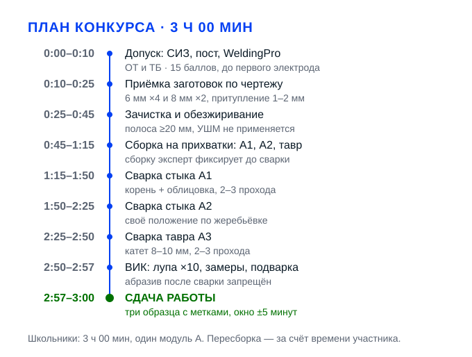

Сварочные технологии (Р,О)
Задания ниже — официальные файлы «Абилимпикс» (источник: abilympics-russia.ru), разложенные по категориям. Решения написаны по тексту задания, регламенту и критериям оценки; в них указано, что именно проверяет эксперт.
Школьник
14–16 лет, базовый уровень заданияВ официальном файле категории не разделены отдельными разделами — приводим задание целиком; различия по категориям смотрите в таблице модулей.
Пошаговое решение
Три часа, один модуль и три образца: два стыка из шестимиллиметровых пластин и тавр из восьмимиллиметровых, все из стали Ст3, все ручной дуговой сваркой покрытым электродом — вид 111. Пространственные положения разыгрываются жеребьёвкой перед стартом: потолочного среди них нет, но нижнее, горизонтальное и вертикальное снизу-вверх равновероятны, поэтому готовить надо все три. Оценивают не «красивость», а десять измеримых аспектов на каждом стыке: подрез, заполнение разделки, усиление, ширину, следы случайной дуги, вогнутость корня, кратерные раковины, поры, формирование шва и выпуклость корня. Ниже вся работа по порядку — от допуска до сдачи, с цифрами из критериев и с тем, что именно смотрит эксперт.

Задача 1. Пройти допуск и подготовить постОхрана труда · 15 баллов
Пятнадцать баллов за охрану труда — единственные, которые можно потерять ещё до первого электрода, и берутся они тремя блоками по пять: работа с электрооборудованием, организация рабочего места и использование СИЗ. Эксперт оценивает не намерение, а факты: надет ли полный комплект, проверен ли кабель, лежит ли масса на чистом металле. Без маски-хамелеона, костюма, ботинок с композитным подноском и краг к сварке не допустят вообще, и три часа превратятся в ноль. Поэтому первые десять минут сознательно отдаём не металлу, а себе и посту.
Действие 1.1. Надеть СИЗ и выставить защиту
Шаг 1.1.1
Надеваем костюм сварщика: брюки навыпуск поверх ботинок, куртку застёгиваем на все пуговицы, воротник поднимаем, карманы закрываем клапанами. Волосы убираем под головной убор целиком, включая затылок. Ботинки — с композитным подноском, шнуруем до верхней дырочки, чтобы брызга не залетела за язычок. Краги надеваем последними и натягиваем раструбом на рукав, а не под него.
Аспект «использование необходимых СИЗ при выполнении задания» стоит 5 баллов из 15 за охрану труда, и КЗ прямо запрещает варить без спецодежды, маски, краг и спецобуви — то есть без комплекта работа просто не начинается. Брюки навыпуск и раструб краги поверх рукава нужны потому, что капли металла летят вниз по рукаву и внутрь обуви: это самая частая травма на площадке, а вовсе не ожог лица.
Проверьте себя по трём признакам: волос не видно ни спереди, ни сзади, все застёжки закрыты, раструб краги лежит поверх рукава. Попросите волонтёра посмотреть со спины — спереди ошибку видно хуже всего, а спина открыта ровно там, куда летит искра.
Классика — заправить рукав в крагу «чтобы не мешал»: искра уходит за манжету, и через минуту вы дёргаете рукой посреди шва, оставляя в нём кратер. Вторая ошибка — прийти в кроссовках в расчёте, что под столом не видно: обувь осматривают до старта, и 5 баллов уходят раньше, чем вы возьмёте электрод.
Эксперт осматривает комплект до старта, а дальше следит по ходу работы: опущена ли маска в момент поджига и не сдвинуты ли краги к середине шва. На категории «Школьники» комплект проверяют дважды: на входе и в середине модуля.
Шаг 1.1.2
Берём маску-хамелеон, проверяем наружное защитное стекло на трещины и царапины, протираем его мягкой тканью снаружи и изнутри. Выставляем затемнение по таблице на корпусе: при токе 90–160 А это DIN 10–11, при 90 А и ниже можно DIN 9. Регулируем оголовье так, чтобы маска садилась плотно, но поднималась кивком, и проверяем, что между маской и лицом нет щели шириной в палец.
Стекло с трещиной по правилам охраны труда использовать категорически нельзя, а КЗ относит маску к обязательным СИЗ. Затемнение подбирается под ток, а не «на глаз»: на светлом DIN 8 при 150 А глаза получают ультрафиолет, и к вечеру это заканчивается резью и слезами, а на площадке — тем, что участник начинает варить «на ощупь» и портит формирование шва, за которое дают сразу 2 балла.
Наденьте маску, опустите и посмотрите на лампу: её видно, но не слепит, а сварочная ванна при пробном поджиге читается как чёткое яркое пятно с видимыми границами. Проверьте пальцем зазор у висков и под подбородком — щели быть не должно.
Самая частая ошибка — варить в поднятой маске, опуская её уже после поджига: вспышка идёт прямо в глаз, а шов начинается с прожога, потому что первые сантиметры варят вслепую. Вторая — выставить максимальное затемнение «чтобы наверняка»: ванну не видно, ведёте электрод по памяти и получаете неровную ширину шва.
Эксперт фиксирует, опущена ли маска до поджига, и отдельно смотрит на состояние стекла: треснувшее или выгоревшее до желтизны он считает нарушением, а не мелочью.
Шаг 1.1.3
Достаём защитные очки с прозрачными стёклами и беруши: очки понадобятся при зачистке щёткой и напильником, беруши — на весь конкурс, потому что рядом варят ещё пять-шесть кабин. Проверяем краги на прожоги и порезы на пальцах, руки вытираем насухо. Если на площадке выдают респиратор, надеваем его до первой дуги, а не после того, как появится горечь во рту.
Очки при зачистке — не перестраховка: окалина и проволочные усы щётки летят в лицо именно на уровне глаз, и это единственная операция в задании, где маска не защищает. Сухие руки и сухие краги — требование электробезопасности, потому что держатель находится под напряжением холостого хода, а влажная кожа снижает сопротивление в разы. Всё это входит в те же 5 баллов за СИЗ.
Краги целые, швы на пальцах не разошлись, очки чистые и не запотевают, беруши сидят в ушах. Руки на ощупь сухие — если вспотели, вытрите и наденьте краги заново, это десять секунд. Очки должны сидеть плотно, чтобы не сползали, когда вы наклоняетесь над столом.
Работать в трикотажных перчатках под крагами «для тепла»: металл прилипает к ткани, и вместо ожога получаете приваренную к детали перчатку. Вторая ошибка — снять очки на зачистке, потому что «быстро»: одна окалина в глаз останавливает работу целиком, а время при этом не останавливается.
Эксперт смотрит, надеваются ли очки именно на зачистке и остаются ли краги сухими к концу модуля, а не только на входе. Отдельно фиксируется, снимает ли участник краги, чтобы поправить маску: руками в крагах маску не поправляют.
Действие 1.2. Принять пост, оборудование и включиться в WeldingPro
Шаг 1.2.1
Принимаем пост: осматриваем сварочный кабель по всей длине на порезы и оплавления, проверяем, что электрододержатель не болтается на жиле и губки пружинят, а клемма массы цепляется с усилием. Клемму ставим на зачищенную до блеска площадку размером примерно 20 на 20 мм как можно ближе к зоне сварки. Стол, ширму, подставку под держатель и вытяжку проверяем до включения источника.
Соблюдение правил работы с электрооборудованием — 5 баллов, и это тот блок, где ошибка видна сразу: плохой контакт массы даёт «блуждающую» дугу, которая то гаснет, то пробивает металл, и вместо ровного валика получаются прожоги и следы случайной дуги на поверхности пластины. А следы случайной дуги — отдельный аспект, который обнуляется полностью, без допусков.
Кабель без трещин и оголённых участков, держатель держит электрод под углом 90° без люфта, клемма массы сидит на чистом металле и не греется при пробном поджиге. Вытяжка включается и тянет — проверьте листом бумаги у решётки, его должно притягивать.
Поставить массу на окалину или на грунт: контакт то есть, то нет, дуга прыгает, и вы варите корень на «рваном» токе — отсюда непровар и 0 за заполнение разделки. Вторая ошибка — промолчать про треснувший кабель: по правилам работу не начинают до устранения неисправности, а молчание потом читается как нарушение.
Эксперт смотрит, осматривался ли пост до включения и сообщил ли участник о найденных недостатках закреплённому эксперту, как того требует инструкция по охране труда.
Шаг 1.2.2
Выставляем режим под электроды: для покрытого электрода на Ст3 — постоянный ток обратной полярности, электрод на плюс. Для диаметра 3,0 мм ставим 90–120 А, для 4,0 мм — 140–170 А и сверяемся с паспортом на упаковке, потому что у разных марок вилка своя. Делаем пробный поджиг на технологическом обрезке и слушаем дугу: ровное шипение и мелкое разбрызгивание — режим в норме.
Корень стыка на шестимиллиметровых пластинах с притуплением 1–2 мм варится тонким электродом на пониженном токе, а заполнение и тавр — четвёркой на повышенном; если варить всё на одном режиме, получается либо непровар корня, либо прожог. Обратная полярность важна для основной части покрытых электродов: на прямой полярности дуга ведёт себя нестабильно, шов получается с наплывами, а разбрызгивание растёт заметно.
Пробный валик длиной 3–4 см: шлак отходит цельной коркой, валик имеет мелкую чешую, кромки не подрезаны, прожога нет. Дуга не гаснет при отрыве на 3 мм и не «плюётся» крупными каплями. Валик на обрезке должен получиться шириной 6–8 мм, без наплывов по краям.
Поставить 160–180 А на электрод 3,0 мм: первый же корневой проход прожжёт металл, вместо обратного валика получится дыра, а заделать её без абразива почти нечем. Вторая ошибка — не проверить полярность и варить на прямой, а потом удивляться наплывам, которые обнуляют аспект «шов сформирован правильно».
Эксперт смотрит, подбирается ли ток осознанно и пробуется ли режим на обрезке, а не на самом образце, где проба уже становится дефектом. Он также замечает, варится ли проба на обрезке, а не на самой заготовке.
Шаг 1.2.3
Открываем WeldingPro и вводим номер кабины, затем принимаем по учёту заготовки и электроды: на три образца приходится шесть пластин — четыре по 6 мм и две по 8 мм. Сверяем количество на экране с тем, что лежит на столе, и фиксируем время начала работы. Всё, что вызывает сомнение, показываем эксперту до старта, а не после. Заготовки на учёте лежат подписанными, поэтому берите именно свои.
Комплекс считает время работы, расход электродов и заготовок, и именно по его данным разбирают спорные ситуации: если электродов «ушло» больше, чем введено, вопросы возникают к участнику. Заготовки выдаются один раз, поэтому недостающая пластина, обнаруженная в середине модуля, — это уже не замена, а потерянный образец и недобранные баллы за целый блок.
На экране ваш номер кабины, количество заготовок совпадает с фактическим, стартовое время зафиксировано. Электроды пересчитаны и лежат отдельной кучкой, а не рассыпаны по столу, где половина уйдёт на огарки.
Запустить работу, не введя данные, а потом «догнать» их в конце: расхождение по времени и материалам невозможно объяснить, и оно играет против вас. Вторая ошибка — взять электроды «на всякий случай» горстью и не считать огарки.
Эксперт и технический специалист сверяют данные комплекса с фактическим расходом после сдачи, поэтому честный ввод экономит нервы обеим сторонам. Данные сверяются после сдачи, а не в процессе работы.
Задача 2. Принять заготовки и подготовить металлПодготовка · 20 мм от шва решают всё
Заготовки для школьников приходят уже с разделкой: скос каждой кромки 25±2°, притупление 1–2 мм, зазор в собранном виде 0–2 мм. УШМ в этой категории не работает вообще, поэтому всё, что остаётся участнику, — зачистка до чистого металла полосой не менее 20 мм от шва, снятие заусенцев и обезжиривание. Именно на этой полосе решается судьба провара: ржавчина, окалина, грунт и масло вскипают в ванне и дают поры, а поры — это отдельный аспект на 2 балла в каждом стыке и на 2 балла в тавре. Проверка заготовок до старта — единственный момент, когда несоответствие ещё можно предъявить.
Действие 2.1. Сверить заготовки с заданием и жеребьёвкой
Шаг 2.1.1
Раскладываем шесть пластин и пересчитываем: четыре толщиной 6 мм на два стыка и две толщиной 8 мм на тавр. Штангенциркулем проверяем толщину в трёх точках каждой пластины, угломером или шаблоном — скос кромки 25±2°, линейкой — притупление 1–2 мм и длину кромки. Результаты лучше сразу записать мелом на нерабочей стороне: толщина, номер образца, положение.
Притупление 1–2 мм — это тот самый размер, который надо проплавить насквозь в корневом проходе: если оно окажется 3 мм, корень не проварится ни при каком токе, а если 0,5 мм — прожжёте металл. Скос 25±2° даёт суммарный угол раскрытия около 50°, и при меньшем угле электрод не достанет до корня, а при большем разделка станет слишком широкой и потребует лишних проходов.
Все четыре размера в допуске, пластины не покороблены, кромки без завалов и заусенцев выше 0,5 мм. Если хотя бы одна пластина выходит из допуска — сразу к эксперту, до старта, а не в процессе сварки. Замеры записывайте мелом на нерабочей стороне каждой пластины.
Начать варить, не проверив притупление: на пластине с притуплением 3 мм корень останется непроваренным, и это минус 2 балла за заполнение разделки плюс провал испытания на излом. Вторая ошибка — обнаружить несоответствие после первой прихватки, когда замена уже не положена.
Эксперт фиксирует комплектность и состояние заготовок до старта, поэтому замеченное позже расхождение трактуется как ваша недоработка при приёмке. Несоответствие, найденное позже, уже не повод для замены.
Шаг 2.1.2
Читаем карточку жеребьёвки: в ней три строки — положение для стыка А1, для стыка А2 и для тавра А3. Возможны нижнее, горизонтальное и вертикальное, причём вертикальное только снизу-вверх; потолочного в перечне нет. Переписываем результат на чертёж и на свободное поле пластины, чтобы в спешке не перепутать образцы. Если карточку объявляют вслух, повторите положение за экспертом, чтобы убедиться, что услышали верно.
Изменение пространственных положений — это те самые 30% вариативной части задания, которые разыгрываются жеребьёвкой перед соревнованиями, и именно они чаще всего ломают заготовленный план. Если вы готовили приспособу под нижнее положение, а выпало вертикальное, менять надо не технику шва, а оснастку — и лучше узнать об этом за минуту, чем после первой прихватки.
Все три строки заполнены, положения записаны и совпадают с тем, что объявил эксперт. На чертеже отмечено, какой образец в каком положении варится, и это же записано на самих пластинах. Метка стоит на каждой паре, а не на одной пластине из двух.
Собирать все три образца «в нижнем, потом разберёмся»: перевернуть уже сваренный стык нельзя, а собрать заново — значит потерять прихватки и время, которое не останавливается. Вторая ошибка — держать положение в голове и перепутать А1 и А2, которые выглядят одинаково.
Эксперт объявляет результаты жеребьёвки и сверяет их с вашей сборкой: образец, сваренный не в своём положении, оценивается как не соответствующий заданию.
Шаг 2.1.3
Складываем пару пластин кромками и смотрим зазор по всей длине: он должен быть в пределах 0–2 мм, равномерный, без «карманов» в середине. Проверяем проволокой: двухмиллиметровая проходит свободно по всей длине, трёхмиллиметровая не лезет нигде. Заодно проводим ногтем по кромке — заусенцев и завалов быть не должно. Проверку делайте до прихваток: после них кромки уже стянуты.
Зазор — это и есть канал провара: при нулевом зазоре дуга не проникает на обратную сторону и корень остаётся непроваренным, при 3–4 мм металл просто нечего заполнять, и получается прожог с вогнутостью больше 0,5 мм, что обнуляет аспект «вогнутость корня». Равномерность важнее абсолютной величины: ровные 2 мм по всей длине варятся предсказуемо, а скачок с 0 до 3 мм гарантирует дефект в самом узком месте.
Проволока 2 мм идёт по всему стыку без заклинивания, 3 мм не входит, торцы пластин совпадают по плоскости с просветом не более 1 мм под линейкой. Если проволока 3 мм всё-таки проходит в середине, зазор велик: подтяните пластины и проверьте снова.
Оставить зазор «на глаз», а потом обнаружить, что он гуляет от нуля до четырёх миллиметров: в узком месте получите непровар, в широком — прожог, и оба дефекта попадут в разные аспекты, то есть потеряете баллы дважды. Вторая ошибка — не снять заусенец: он не даёт кромкам сойтись и задирает зазор.
Эксперт проверяет зазор и совпадение плоскостей до прихваток, потому что после сварки исправить геометрию уже невозможно. Он же смотрит, не осталось ли на кромках заусенцев, которые не дают зазору закрыться.
Действие 2.2. Зачистить и обезжирить зону сварки
Шаг 2.2.1
Берём щётку по металлу с прочной ручкой, напильник и шкурку зернистостью 60–80. Зачищаем полосу шириной не менее 20 мм в обе стороны от стыка — с лицевой стороны, с обратной и обязательно саму разделку с притуплением. Двигаемся поперёк шва, снимая окалину до серого блеска, а не до «стало чище». УШМ не берём: в категории школьников зачистку машинкой не производят, заготовки приходят подготовленными.
Двадцать миллиметров — не произвольная цифра, а требование задания, и за границей этой полосы начинается окалина, которая в ванне превращается в шлаковые включения. Шлак, не всплывший в шов, виден на изломе как тёмные пятна, а аспект «на изломе отсутствуют видимые поры и включения» стоит целых 5 баллов из 10 за испытание тавра.
Полоса блестит на всю ширину 20 мм, окалина не цепляется ногтем, на разделке нет тёмных пятен. Проведите белой салфеткой: она должна остаться светлой, без серого налёта. Отдельно проверьте притупление: именно там окалина держится крепче всего.
Зачистить «пятнами» и оставить окалину у самой кромки — именно там она и мешает, потому что кромка плавится первой. В результате поры идут цепочкой вдоль шва, и аспект «отсутствуют видимые поры» обнуляется, а вместе с ним теряется и формирование шва.
Эксперт осматривает полосу зачистки перед сборкой и после сварки — по границе чистого металла видно, работал участник щёткой или только делал вид. Граница зачистки должна быть ровной, а не «языками».
Шаг 2.2.2
Обезжириваем зону сварки ветошью, смоченной уайт-спиритом или растворителем: протираем в одном направлении, не оставляя луж, и даём испариться две-три минуты. Отдельно проходим разделку и притупление, потому что масло затекает именно туда. Если ветошь грязная — меняем, а не размазываем загрязнение по чистой полосе. Ветошь держите так, чтобы растворитель не стекал в зазор.
Масло и смазка от станка кипят в сварочной ванне, и каждый пузырёк оставляет после себя пору или свищ; на шестимиллиметровом металле с узкой разделкой это видно невооружённым глазом и проверяется лупой с десятикратным увеличением. Поры — отдельный аспект на 2 балла в каждом стыке, а в тавре ещё и на изломе.
Поверхность сухая на ощупь, запаха растворителя нет, салфетка после контрольной протирки остаётся чистой. Масляных разводов и радужных пятен на металле не видно. Если салфетка посерела, обезжиривание повторите с чистой ветошью.
Протереть бензином и сразу поджечь дугу: пары вспыхивают, а в шве остаётся рыхлая пора. Вторая ошибка — лить растворитель на пластину: он затекает под заготовку и потом поднимается парами в зону сварки.
Эксперт обращает внимание на мокрые или блестящие от растворителя поверхности: это признак того, что обезжиривание сделано формально и не просушено. Сухая поверхность перед сваркой — обязательное условие, а не пожелание.
Шаг 2.2.3
Раскладываем заготовки по образцам: пара для А1 справа, пара для А2 слева, пластины тавра в центре стола, каждая пара кромками в одну сторону. Подписываем мелом или маркером на нерабочей стороне: номер образца, положение, стрелка направления сварки. Электроды держим в отдельной коробке, огарки — в банке, а не на полу. Огарки складывайте в банку сразу: они понадобятся при сверке расхода.
Шесть пластин из одной стали выглядят одинаково, и перепутать их — значит потерять уже выставленный зазор или, хуже того, варить стык в положении, которое досталось другому образцу. Разложенные по зонам заготовки экономят минуты в середине модуля, когда время идёт быстрее всего, и снимают часть риска по организации рабочего места, за которую тоже дают баллы.
Каждая пара лежит отдельно, метки читаются, ничего не смешано, инструмент и электроды на своих местах, проход к столу свободен. Посмотрите на стол со стороны: должно быть видно три зоны без объяснений.
Свалить всё в одну кучу «потом разберу»: в спешке берёте первую попавшуюся пару, собранную под другое положение, и обнаруживаете это после прихваток. Вторая ошибка — подписывать рабочую поверхность у кромки, где метка попадёт в зону шва.
Эксперт оценивает организацию рабочего места визуально и по ходу работы: разложенные по зонам заготовки читаются как порядок, куча — как отсутствие плана.
Задача 3. Собрать образцы на прихваткиСборка · 15 баллов
Пятнадцать баллов за сборку раскладываются на три равных блока по пять: тавр, стык А1 и стык А2. Для тавра требуются три прихватки длиной до 25 мм, угол между полками 90°, отсутствие зазора и отступ от края по чертежу с допуском ±1 мм; для каждого стыка — две прихватки до 15 мм, поставленные в зоне 20 мм от торцов, и отсутствие линейного смещения кромок с допуском ±1 мм. Сборку эксперт фиксирует до сварки: если она неверна, баллы не выставляются, образец отдают на доработку, а время при этом не останавливается — поэтому прихватка делается не «на живую нитку», а с тем же вниманием, что и шов.
Действие 3.1. Собрать стык А1
Шаг 3.1.1
Кладём две пластины на подкладку или на стол кромками друг к другу и выставляем зазор 2 мм, подложив в двух-трёх местах проволоку диаметром 2 мм. Совмещаем поверхности: линейкой 300 мм проверяем по диагонали и вдоль шва, чтобы ступенька между пластинами не превышала 1 мм. Пластины прижимаем к столу так, чтобы они не сдвинулись, пока ставим первую прихватку.
Зазор 0–2 мм и отсутствие линейного смещения с допуском ±1 мм — прямые требования критериев сборки на 5 баллов, и оба размера потом уже не исправить. Ступенька между кромками означает, что одна кромка плавится раньше другой: с одной стороны шва появляется подрез глубиной больше 0,5 мм, и аспект «протяжённость и глубина подреза» обнуляется сразу, потому что сплошной подрез любой глубины недопустим.
Проволока 2 мм лежит в зазоре по всей длине и не выпадает, линейка по плоскости даёт просвет не больше 1 мм, пластины не качаются под пальцем. Зазор одинаков в начале, в середине и в конце стыка. Пластины не должны «качаться» на подкладке при нажатии.
Выставить зазор «на глаз» и получить в середине ноль, а на торце три миллиметра: корень в узком месте не проварится, в широком получится прожог. Вторая ошибка — прижать пластины струбциной без прокладок, выдавив зазор в ноль по всей длине.
Эксперт фиксирует сборку до сварки: зазор, совпадение плоскостей и отсутствие смещения проверяются именно в этот момент, позже претензию не примут. Оценивается именно собранный узел, а не намерение его собрать.
Шаг 3.1.2
Ставим две прихватки электродом 3,0 мм, длина каждой до 15 мм, обе — в зоне 20 мм от торцов, то есть не дальше двадцати миллиметров от края пластины. Ток берём на 10–15% выше рабочего, дугу держим короткой, 2–3 мм, и провариваем прихватку в корень, а не «приклеиваем» сверху. Сразу сбиваем шлак и осматриваем: прихватка должна быть плоской, а не горбом.
Длина до 15 мм, зона 20 мм от краёв, две штуки — это ровно те параметры, по которым эксперт проверяет сборку стыка. Толстая прихватка опаснее тонкой: она не проплавляется в корневом проходе и остаётся в металле твёрдым непроваренным включением, из-за которого на изломе видно тёмное пятно, а корень не имеет полного сплавления.
Линейкой отложите 15 мм по длине прихватки и 20 мм от торца — прихватка должна оказаться внутри этой зоны. Шлак снят, поверхность прихватки светлая, при поперечном срезе видно, что она уходит в зазор, а не лежит на поверхности.
Сделать прихватку длиной 30–40 мм «чтобы крепче держало»: она не проплавляется в корне и даёт непровар, за который снимают и заполнение разделки, и излом. Вторая ошибка — поставить прихватку на самом торце: её нечем переварить, и в этом месте остаётся кратер.
Эксперт измеряет длину прихваток и отступ от торцов до начала сварки, потому что после облицовки прихватки уже не проверить. Если прихваток больше двух, сборка считается не соответствующей чертежу.
Шаг 3.1.3
Снимаем шлак с обеих прихваток щёткой и молотком, осматриваем их на поры и кратеры. Проверяем, не ушёл ли зазор и не выгнулись ли пластины «домиком»: сварка стягивает металл, и после двух прихваток кромки иногда сходятся на ноль. Если зазор изменился, прихватку можно переставить, но это время из тех же трёх часов. Переставлять прихватку лучше сразу, чем после корневого прохода.
Прихватка — это тоже шов, и всё, что в ней осталось, останется в готовом соединении: поры в прихватке видны на изломе как дефект, а кратер в ней — как усадочная раковина. Изменение зазора после прихваток означает, что корневой проход пойдёт по другой геометрии, чем вы рассчитывали, и сварка «на ушедшем» зазоре почти всегда даёт прожог у одного торца и непровар у другого.
Зазор по-прежнему 2 мм по всей длине, пластины лежат в одной плоскости, прихватки без пор и кратеров. Покачайте конструкцию: люфта быть не должно, но и напряжения, от которого пластины выгибает, тоже.
Оставить шлак на прихватках: он не даст проплавить корень в этом месте, и в шве появится шлаковое включение, которое на изломе читается как дефект сплавления. Вторая ошибка — переставить прихватку, не сбив старую: два наложенных валика дают наплыв, а наплыв обнуляет формирование шва.
Эксперт осматривает образец после прихваток и даёт отмашку на сварку — это единственная точка, где сборку ещё можно исправить без потери баллов. Отмашка на сварку даётся только после осмотра собранного образца.
Шаг 3.1.4
Закрепляем образец в положении, которое выпало по жеребьёвке. Для нижнего — кладём на стол швом вверх, подложив подкладку так, чтобы дуга не прожгла стол. Для горизонтального — ставим пластину вертикально, шов идёт горизонтально на высоте локтя. Для вертикального — зажимаем в приспособе или струбцинах строго вертикально, шов снизу вверх, торцы доступны для поджига и выхода.
Положение определяет и ток, и технику, и позу, поэтому крепление делается до поджига, а не в процессе. Жёсткая фиксация нужна ещё и потому, что при сварке металл ведёт: если образец «гуляет» в струбцине, ширина шва получается неравномерной, а допуск на неё всего 2 мм — за это снимают отдельный аспект в 2 балла.
Образец не качается при нажатии, шов расположен на удобной высоте — примерно на уровне локтя или чуть ниже, доступ к корню с обратной стороны открыт для осмотра. Положение совпадает с записью в карточке жеребьёвки.
Варить нижнее положение в вертикально зажатой пластине: ток подобран под нижнее, а ванна течёт вниз, и вместо валика получается наплыв с подрезом. Вторая ошибка — зажать образец так, что до противоположного торца не дотянуться: последние сантиметры шва варятся вслепую и с кратером.
Эксперт сверяет фактическое положение образца с результатом жеребьёвки и смотрит, не перевёрнут ли образец уже после сборки. Он же следит, чтобы образец не разворачивали в удобную сторону уже после старта.
Действие 3.2. Собрать стык А2
Шаг 3.2.1
Повторяем ту же операцию для второй пары шестимиллиметровых пластин, но сразу с учётом её положения: если А2 достался вертикальный, собираем и зажимаем в вертикальной плоскости, не дожидаясь, пока прихватки «схватятся» на столе. Зазор 2 мм, проволока в прокладках, плоскость по линейке, ступенька не более 1 мм. Прокладки вынимайте по одной, по мере постановки прихваток.
Стык А2 оценивается отдельным блоком на 20 баллов, и его сборка стоит своих 5 баллов ровно по тем же критериям, что и А1. Собирать в положении, а не на столе, нужно потому, что при переносе собранного образца прихватки работают на излом, а тонкая прихватка на 6 мм металле легко трескается — и вы теряете и сборку, и герметичность корня.
Зазор 2 мм держится по всей длине, плоскости совпадают, после переноса и зажима ничего не щёлкнуло. Проверьте прихватки на свет: трещины у основания прихватки видно как тонкая тёмная линия. Прокладки после прихваток выньте все до одной.
Собрать оба стыка на столе, а потом переносить по одному: прихватки на тонком металле не держат изгиб, и в корне появляется трещина, которую перед сваркой уже не видно. Вторая ошибка — экономить на прокладках и выставлять зазор по одной стороне.
Эксперт фиксирует сборку А2 отдельно от А1 — образцы осматриваются по очереди, и одинаковые на вид пары не должны его запутать. Сборка А2 фиксируется в протоколе отдельной строкой.
Шаг 3.2.2
Ставим две прихватки электродом 3,0 мм длиной до 15 мм, в зоне 20 мм от торцов, с проваром в корень. Для вертикального и горизонтального положения ток чуть выше рабочего, дугу держим короткой, а после поджига сразу уводим её в зазор, чтобы не оставить на поверхности пластины пятно от случайной дуги. Первую прихватку ставьте в 15–20 мм от торца, вторую — симметрично с другой стороны.
Следы случайной дуги на поверхности пластины — отдельный аспект, который обнуляется без допусков, а появляются они чаще всего именно на прихватках, когда участник поджигает дугу на теле детали и только потом ведёт её в стык. Помимо баллов, такое пятно — это закалённая зона, от которой потом идёт трещина.
Прихватки в допуске по длине и отступу, на поверхности пластин нет синих пятен и наплывов металла вне зоны стыка. Шлак снят, корень прихватки просматривается. Пятен от брызг в зоне шва быть не должно: их потом не убрать без абразива.
Поджигать дугу на середине пластины и перетаскивать её в стык: остаётся след случайной дуги, минус 2 балла в блоке А2, а при невезении — и прихватка с прожогом. Вторая ошибка — ставить прихватку в вертикальном положении сверху вниз, роняя ванну в зазор.
Эксперт осматривает поверхность пластин на просвет и под углом: следы случайной дуги и брызги видны лучше всего при боковом освещении. Отдельно он смотрит на торцы: там чаще всего поджигают дугу.
Шаг 3.2.3
Сбиваем шлак, проверяем геометрию и зазор, закрепляем образец в его положении. Если положение горизонтальное, шов должен идти строго горизонтально: наклон даже в 10° превращает сварку в подъём с текущей ванной. Если вертикальное — торцы доступны, образец стоит без наклона, потому что варить придётся снизу вверх. Торцы должны быть доступны для поджига и для выхода шва.
Стык А2 часто даётся тяжелее первого, потому что на нём отрабатывается второе положение из трёх, и ошибка в установке обнуляет всю подготовку. Кроме того, неравномерность ширины шва до 2 мм проверяется на обоих стыках, а начинается она именно с наклонённого образца.
Образец стоит ровно по уровню или по угольнику, зазор 2 мм на месте, прихватки целы. Мысленно проведите электродом по всей длине шва: рука должна доходить до противоположного торца без перехвата. Крепление проверьте нажатием на ребро.
Оставить стык лежать на столе, «раз он всё равно почти нижний»: горизонтальный шов на наклонной плоскости даёт подрез по верхней кромке, а аспект подреза стоит 2 балла. Вторая ошибка — не проверить, что прихватки не мешают поджигу с торца.
Эксперт проверяет установку перед сваркой и в процессе смотрит, не развернул ли участник образец, чтобы уйти от неудобного положения. Он сверяет положение с карточкой жеребьёвки ещё раз, перед поджигом.
Действие 3.3. Собрать тавровое соединение А3
Шаг 3.3.1
Берём две восьмимиллиметровые пластины: одна ложится полкой, вторая ставится на неё ребром под углом 90° по угольнику — проверяем с обеих сторон, потому что восьмимиллиметровая пластина тяжёлая и валится. Зазор в соединении должен отсутствовать, допускается не более 2 мм по заданию, но критерий требует именно отсутствия. Отступ ребра от края полки выдерживаем по чертежу с допуском ±1 мм.
Угол 90°, отсутствие зазора и отступ от края ±1 мм — три параметра, по которым оценивают сборку тавра, и все три входят в блок на 5 баллов. Зазор в тавре особенно вреден: он превращает угловой шов в стыковой с подкладкой из воздуха, корень не проплавляется, и аспект «обеспечено полное сплавление корня соединения» на изломе обнуляется, а это 2 балла.
Угольник прилегает к обеим полкам без просвета, щуп 1 мм в угол не входит, отступ от края совпадает с чертежом. Ребро не качается, если надавить сверху. Проверьте угол с обеих сторон ребра: перекос виден именно при сравнении.
Поставить ребро «примерно под 90°» и надеяться, что прихватки вытянут: перекошенный тавр даёт разный катет с двух сторон, а катет 8–10 мм — это 4 балла, и при несоответствии аспект обнуляется целиком. Вторая ошибка — оставить зазор 3 мм и заварить его объёмом металла.
Эксперт проверяет угол угольником и отступ рулеткой до прихваток, потому что после них геометрию уже не исправить без пересборки. Отступ от края он меряет рулеткой, а не «на глаз».
Шаг 3.3.2
Ставим три прихватки длиной до 25 мм: одну посередине ребра и две по краям с отступом от торцов по чертежу, в пределах ±1 мм. Варим электродом 3,0 мм на токе чуть выше рабочего, держим электрод под 45° к обеим полкам, дугу короткой и обязательно провариваем угол, а не накладываем валик на поверхность. Три прихватки делите по длине ребра примерно на равные участки.
Три прихватки до 25 мм с отступом от края — это ровно то, что перечислено в критериях сборки тавра. Прихватка, положенная «на полку» без провара в угол, при сварке первого прохода не переплавится полностью, и в корне останется несплавление, которое видно на изломе как гладкая площадка без зерна.
Прихватки не длиннее 25 мм, отступ от торцов в допуске ±1 мм, шлак снят, угол проварен — при осмотре под прихваткой нет тёмной линии. Ребро держится без струбцины: поднимите конструкцию за ребро, полка должна идти следом.
Поставить две прихватки вместо трёх «для экономии времени»: ребро длиной больше двухсот миллиметров между двумя точками играет, и при сварке его уводит в сторону, катет уходит. Вторая ошибка — прихватка длиной 40 мм, которая не проваривается и даёт непровар корня.
Эксперт пересчитывает прихватки и меряет их длину: три вместо двух — требование критериев, и «двух хватило» не считается выполнением. Он также смотрит, проварены ли прихватки в угол, а не лежат на полке.
Шаг 3.3.3
После прихваток снова проверяем угол и отступ: металл 8 мм стягивает заметно, ребро иногда заваливается на 2–3°. Если угол ушёл, прихватку срубаем, правим и ставим заново, пока не начали варить. Заодно проверяем, что прихватки не выступают в зону шва — иначе на них образуется наплыв. Править геометрию проще сразу, пока металл не остыл: срубить прихватку дешевле, чем переваривать шов.
Перекошенный тавр — это не только минус за сборку: катет с одной стороны выйдет больше, с другой меньше, а выпуклость углового шва должна соответствовать величине катета, делённой на 1,4, с допуском 1 мм плюс 0,1 ширины шва. При заваленном ребре это соотношение не выполняется физически, и 3 балла за выпуклость теряются вместе с 4 за катет.
Угольник прилегает с обеих сторон, отступ от края прежний, прихватки не выходят за линию будущего шва. Ребро стоит ровно по всей длине, а не «винтом». Если ребро стоит «винтом», проверьте отступ от края на обоих торцах: он должен совпадать.
Оставить завал ребра и «добрать» катет с одной стороны: со стороны острого угла получится подрез, со стороны тупого — наплыв, и оба дефекта недопустимы. Вторая ошибка — не срубить старую прихватку перед правкой.
Эксперт сравнивает геометрию до и после прихваток и фиксирует, исправил ли участник завал или варил по перекошенному. Он фиксирует, исправлена ли геометрия до сварки: после первого прохода правка невозможна.
Шаг 3.3.4
Закрепляем тавр в его положении. Нижнее — самый удобный вариант «в лодочку»: наклоняем конструкцию на 45°, чтобы электрод стоял в углу симметрично и валика ложился в угол самотёком. Горизонтальное — полка вертикальна, ребро горизонтально, варим с одной стороны, потом с другой. Вертикальное — ребро вертикально, сварка строго снизу вверх, обе стороны по очереди.
В «лодочке» ванна держится в углу силой тяжести, и катет получается ровным без особых приёмов, поэтому этот вариант экономит и время, и нервы. В горизонтальном положении ванна стремится стечь на нижнюю полку, и приходится держать электрод выше и варить на пониженном токе, иначе вместо катета 8–10 мм получится наплыв на нижней полке.
Конструкция зажата жёстко, положение соответствует жеребьёвке, доступ к обеим сторонам шва открыт. Для вертикального положения низ шва на высоте, удобной для старта снизу вверх, а не на уровне пояса. Проверьте, что струбцины не закрывают зону шва.
Сварить вертикальный тавр сверху вниз «так удобнее»: КЗ это прямо запрещает, и такая работа не оценивается. Вторая ошибка — зажать тавр так, что вторая сторона недоступна, и варить её, стоя на цыпочках, теряя контроль над углом электрода.
Эксперт сверяет положение тавра с результатом жеребьёвки и следит, в каком направлении идёт сварка вертикального шва. Отдельно он смотрит, не наклонён ли образец в «лодочку», если выпало горизонтальное положение.
Задача 4. Сварить стыковые соединения А1 и А2Стыковые швы · 40 баллов
Сорок баллов из ста — это два стыка по двадцать, и внутри каждого десяток аспектов по два балла: подрез, заполнение разделки, выпуклость, ширина, следы случайной дуги, вогнутость корня, кратерные раковины, поры, формирование шва и выпуклость корня. Сварка идёт за 2–3 прохода: корень электродом 3,0 мм с полным проплавлением притупления и один-два заполняющих-облицовочных прохода. Логика простая — сначала обеспечить провар, потом заполнить разделку, и только в конце думать о внешнем виде, потому что красивый шов без провара корня стоит ноль, а некрасивый с проваром всё равно собирает большинство аспектов.
Действие 4.1. Настроиться на положение
Шаг 4.1.1
Подбираем ток под положение: для корня электродом 3,0 мм в нижнем положении 100–120 А, в горизонтальном минус 10%, в вертикальном минус 15%, то есть 85–100 А. Для заполняющего прохода электродом 4,0 мм — 140–160 А в нижнем и на 10–15 А меньше в вертикальном. Проверяем режим пробным валиком на технологическом обрезке длиной 3–4 см, а не на самом образце.
На шестимиллиметровом металле с притуплением 1–2 мм запас по току маленький: плюс пятнадцать ампер — и корень прожжён, минус пятнадцать — и притупление не проплавлено, а это два разных аспекта стоимостью по 2 балла. В вертикальном положении ванна дополнительно нагревается снизу, поэтому ток снижают, иначе металл просто вытекает из стыка.
Пробный валик лёг ровно, шлак отошёл цельной коркой, прожога нет, кромки не подрезаны, слышен ровный шорох без треска. При переходе в другое положение ток меняется, а не остаётся «как было удобно». Пробный валик должен быть не короче трёх сантиметров.
Варить все три образца на одном токе: нижний стык получится нормально, а вертикальный — с прожогом и вогнутостью корня глубже 0,5 мм, что обнуляет аспект. Вторая ошибка — настраиваться по звуку на образце, оставляя на нём пробный валик вне зоны шва.
Эксперт смотрит, меняется ли ток при смене положения и есть ли вообще пробный поджиг: на площадке это первый признак того, что участник понимает процесс, а не просто «варить умеет».
Шаг 4.1.2
Держим электрод под углом 70–80° к поверхности, наклоняя его в сторону движения — так давление дуги вытесняет ванну назад и провар идёт глубже. Дугу держим короткой, 2–3 мм, примерно равной диаметру электрода: длиннее — дуга блуждает, шире шов, больше разбрызгивания; короче — электрод липнет и замыкает. Вылет электрода держите 10–15 мм: больше — падает ток, меньше — греется держатель.
Угол наклона определяет, куда уходит тепло: при 90° дуга бьёт в точку и прожигает металл, при 45° размазывает ванну и не проплавляет корень. Длинная дуга, кроме пор и разбрызгивания, даёт окисление металла шва и характерный крупночешуйчатый валик, а «шов сформирован правильно» — это 2 балла в каждом стыке.
При пробном валике видна мелкая равномерная чешуя, ширина постоянная, разбрызгиваний на пластине почти нет. Рука держит электрод на постоянном вылете: если вылет меняется, меняется и ток. Чешуя должна быть мелкой, без крупных наплывов по краям валика.
Вести электрод вертикально, «как ручка»: дуга прожигает металл в одной точке, и на шестимиллиметровом стыке это прожог за одну-две секунды. Вторая ошибка — тянуть дугу на 5–6 мм, чтобы «лучше видеть ванну»: шов получается рыхлым, с порами по всей длине.
Эксперт оценивает угол и длину дуги визуально по характеру шва: длинная дуга оставляет характерные крупные брызги и неровную чешую, это видно без измерений.
Шаг 4.1.3
Опускаем маску до поджига, ставим локоть или предплечье на опору — столешницу, струбцину, край приспособы, — чтобы рука шла по шву от плеча, а не «от кисти». Свободной рукой в краге придерживаем конструкцию или щиток, ноги ставим на ширину плеч, корпус чуть вперёд. Вертикальный шов варим только снизу вверх: сверху вниз КЗ запрещает. План на шов продумывайте до поджига.
Опора для руки — это стабильность амплитуды: без неё ширина шва гуляет на 3–4 мм при допуске 2 мм, а подрез появляется именно там, где рука дрогнула. Направление снизу вверх для вертикали принципиально: при сварке сверху вниз ванна опережает дугу, корень остаётся непроваренным, и работа не оценивается вовсе.
Поза устойчивая, рука свободно достаёт от начала до конца шва без перехвата, маска опущена и не мешает смотреть на стык. Перед поджигом есть план: где начну, где закончу, где выведу кратер. Проверьте это до первого поджига, а не в середине шва.
Варить вертикальный шов сверху вниз, потому что так ванна «сама идёт»: это прямое нарушение задания. Вторая ошибка — работать на весу, держа руку в воздухе: амплитуда плывёт, шов получается волнистым по ширине, и аспект «ширина шва постоянна» обнуляется.
Эксперт наблюдает за позой и направлением сварки в процессе: вертикаль сверху вниз видна сразу и останавливается. Поза и направление сварки видны ему лучше, чем результат: по ним он понимает, осознанно ли выбрана техника.
Действие 4.2. Выполнить корневой проход стыка А1
Шаг 4.2.1
Начинаем на 10–15 мм от торца, в зоне, которая потом переварится, — это выводит начальный кратер из рабочей части шва. Поджигаем дугу коротким касанием, сразу уводим её в зазор и первые 5 мм идём медленнее, прогревая металл. Дальше ведём с постоянной скоростью около 10–15 см в минуту, без поперечных колебаний или с очень узкой «ёлочкой» в 1–2 мм. Вылет электрода при этом не меняется.
Корневой проход решает три аспекта сразу: заполнение разделки, вогнутость и выпуклость корня. Притупление 1–2 мм нужно проплавить насквозь, чтобы на обратной стороне образовался обратный валик высотой до 1 мм плюс 0,2 ширины валика, но не более 2 мм — это и есть доказательство полного провара. Разгоняться нельзя: быстрая сварка оставляет притупление нетронутым, и на изломе видно ровную площадку без сплавления.
С обратной стороны виден равномерный обратный валик по всей длине, без пропусков и без бугров. С лицевой — разделка заполнена до уровня чуть ниже поверхности, нет прожогов и свищей. Кратер в начале шва должен оказаться вне рабочей зоны.
Пройти корень на большой скорости «чтобы не прожечь»: получается непровар, и аспект «разделка кромок заполнена полностью» обнуляется, а вместе с ним и провал испытания на излом в тавре на похожей технике. Вторая ошибка — начать прямо с торца, оставив кратер в самом начале рабочей части шва.
Эксперт смотрит на обратную сторону образца после корневого прохода: обратный валик — единственный видимый признак того, что корень проварен. Осмотр делается сразу, пока металл ещё тёплый.
Шаг 4.2.2
Технику корня подбираем под положение. В нижнем ведём электрод ровно, слегка покачивая на 1–2 мм, чтобы ванна успевала затекать в зазор. В горизонтальном держим электрод на 10–15° выше оси шва и делаем короткие задержки на верхней кромке, не давая ванне стечь. В вертикальном идём снизу вверх короткими ступеньками: задержка на кромках, быстрый проход через середину, следующий шаг чуть выше предыдущего.
В горизонтальном положении жидкий металл стекает вниз, и без задержки на верхней кромке она остаётся непроваренной, а внизу образуется наплыв — это два разных дефекта, наплыв и подрез, каждый по 2 балла. В вертикальном ванна дополнительно подогревается снизу, поэтому движение «ступенькой с задержкой» не даёт ей прорваться и вытечь.
Кромки сплавляются симметрично, шов не «съезжает» на одну сторону, обратный валик идёт по центру зазора, а не с перекосом. В вертикали ванна не убегает вниз и не оставляет наплывов. Обратный валик должен идти по центру, а не с перекосом на одну кромку.
Варить горизонтальный шов «как нижний», без задержки на верхней кромке: сверху появляется подрез глубиной больше 0,5 мм, и аспект обнуляется. Вторая ошибка — в вертикали делать широкие колебания: ванна перегревается, металл вытекает, остаётся прожог.
Эксперт наблюдает за техникой в процессе сварки, а не только за результатом: по движению электрода видно, понимает ли участник, куда уходит тепло. Он оценивает и то, как часто меняется угол наклона электрода.
Шаг 4.2.3
Кратер в конце завариваем, а не обрываем: за 5–7 мм до конца шва слегка снижаем скорость, затем удлиняем дугу и делаем два-три коротких возврата назад в уже залитый металл, после чего гасим дугу отводом. Ток при этом не крутим — кратер лечится движением, а не режимом. Возвраты делайте короткими, по 3–5 мм, чтобы не наварить бугор и не подрезать кромку. Если кратер всё же остался, подварите его сразу, на тёплом металле.
Кратерные усадочные раковины — отдельный аспект на 2 балла в каждом стыке, и появляются они именно при обрыве дуги: жидкая ванна, остывая без подпитки, проседает и оставляет углубление, которое видно и без лупы. Раковины в кратере часто идут вместе с трещиной — это концентратор напряжений в самом слабом месте шва.
В конце шва нет воронки и тёмного углубления: поверхность кратера выпуклая или плоская, без пор. Проведите ногтем — он не должен цепляться за край раковины. Кратер должен быть не глубже 0,5 величины усиления шва.
Оборвать дугу на конце шва и уйти: остаётся кратер с раковиной, минус 2 балла, а на изломе это место идёт первым. Вторая ошибка — «залепить» кратер, поджигая дугу рядом: остаётся след случайной дуги. Кратер — это ещё и концентратор напряжений в самом слабом месте шва.
Эксперт осматривает начало и конец каждого шва под лупой в первую очередь: именно там чаще всего находят кратеры и поры. Начало и конец шва он смотрит под лупой при боковом свете.
Шаг 4.2.4
Сбиваем шлак: сначала молотком вдоль шва, затем щёткой по металлу, обязательно надев очки. Осматриваем корень с обратной стороны и с лицевой, проверяем, что притупление проплавлено по всей длине. Если нашли прожог или свищ, завариваем его небольшим валиком на пониженном токе с подкладкой из меди или керамики, пока металл ещё тёплый. Шлак сбивайте вдоль шва, а не поперёк.
Шлак, оставленный на корне, при следующем проходе попадает в ванну и всплывает не полностью: получаются шлаковые включения и несплавления между проходами, а аспект «сварной шов сформирован правильно» и «сплавление валиков» проверяются и визуально, и на изломе. Осмотр с обратной стороны — единственный способ узнать, проварен ли корень, не разрушая образец.
Шлак удалён полностью, металл блестит, обратный валик равномерный и не выше 2 мм, вогнутости глубже 0,5 мм нет. Лицевая сторона готова к следующему проходу: сухая, чистая, без брызг в зоне шва. Брызги в зоне шва тоже уберите: они мешают следующему проходу.
Начать второй проход по шлаку: дуга горит нестабильно, шлак всплывает в ванну, и между проходами остаётся прослойка — прямое несплавление, которое обнуляет и прочность, и внешнюю оценку. Вторая ошибка — сбивать шлак без очков.
Эксперт проверяет чистоту между проходами: сварка «по шлаку» слышна по треску дуги и видна по раковистой поверхности валика. Он обращает внимание на цвет металла: синие пятна говорят о перегреве.
Действие 4.3. Заполнить разделку и вывести облицовку А1
Шаг 4.3.1
Второй проход варим электродом 4,0 мм на токе 140–160 А, ведя валик по центру разделки с перекрытием предыдущего на 30–40% ширины. Каждый следующий валик кладём так, чтобы он сплавлялся и с предыдущим, и с обеими кромками: задерживаемся на кромках на полсекунды, проходим середину быстрее. Разделку заполняем до уровня, при котором до поверхности остаётся один проход.
Заполняющий проход — это связка между корнем и облицовкой: если он не сплавился с корнем, между ними остаётся плоскость, и на изломе видно характерный «слоёный» разрыв. Перекрытие в 30–40% гарантирует, что граница между валиками переплавится, а задержка на кромках не даёт образоваться подрезу — самому частому дефекту заполняющих проходов.
Валики лежат с мелкой чешуёй, граница между ними не читается как отдельная линия, подреза по кромкам нет, ширина шва стабильна. Высота заполнения равномерная по всей длине. Проверьте стык валиков ногтем: канавка цепляется, сплавление — нет.
Класть валики «рядом», а не с перекрытием: между ними остаётся канавка, которая при облицовке не проплавляется, и на изломе это несплавление. Вторая ошибка — завысить ток, чтобы «налить быстрее»: получается широкий плоский валик с подрезом по обеим кромкам.
Эксперт смотрит на геометрию заполнения: канавки между валиками и подрезы видны сразу, а после облицовки их уже не исправить без абразива, который запрещён.
Шаг 4.3.2
Облицовочный проход ведём с одинаковой амплитудой поперёк шва, чтобы ширина была постоянной: отклонение по ширине допускается не более 2 мм. Усиление формируем в допуске 0,1 мм плюс 0,25 ширины шва, но не более 2 мм над поверхностью металла. Края валика должны плавно переходить в основной металл, без наплывов и без ступеньки. Амплитуду держите постоянной от начала до конца шва.
Усиление и ширина — это по 2 балла в каждом стыке, и оба параметра измеряются линейкой и шаблоном. Завышенное усиление даёт концентратор напряжения и читается как «наварено лишнего», а недостаточное — как незаполненная разделка. Наплыв на основной металл обнуляет аспект формирования шва целиком, поэтому переход делается плавным.
Ширина одинакова в начале, в середине и в конце — проверьте линейкой в трёх точках. Усиление не превышает 2 мм над плоскостью, край валика переходит в металл под плавным углом, без тёмного валика наплыва.
Гнать облицовку на максимальном токе: валик получается высоким и широким, с наплывом на одной из кромок, и это минус и за выпуклость, и за формирование. Вторая ошибка — вести шов «зигзагом» с разной амплитудой: ширина гуляет больше чем на 2 мм.
Эксперт измеряет усиление и ширину в нескольких сечениях, а не на глаз: именно по этим двум замерам видно, стабильна ли рука. Он измеряет усиление в трёх сечениях, а не в одном удобном.
Шаг 4.3.3
Завариваем кратер облицовки тем же приёмом, что и в корне, затем сбиваем шлак молотком и щёткой. Осматриваем шов целиком: подрезы, поры, наплывы, следы случайной дуги на пластине. Абразивом шов не трогаем — шлифовка и зачистка абразивом после сварки запрещены, разрешена только металлическая щётка. Если на шве остались брызги, снимайте их щёткой, а не зубилом: зарубка на пластине тоже дефект.
Запрет на абразив — не придирка: шлифовкой можно снять подрез и замаскировать дефект, поэтому эксперт должен видеть шов таким, каким его сделала дуга. Заодно запрет защищает от утончения стенки: на шестимиллиметровом металле одно неверное движение болгаркой снимает миллиметр и превращает допустимое усиление в недопустимое.
Шов чистый, шлака нет, поверхность серая металлическая, без блеска от абразива. Кратер заварен, подрезов глубже 0,5 мм нет, на пластине вне шва нет синих пятен от случайной дуги. Проверьте оба торца: там чаще всего остаётся кратер.
Пройтись по шву лепестковым кругом «для красоты»: это прямое нарушение, работа может быть не оценена, а кроме того стирается сам след дуги — чешуя, по которой видно стабильность режима. Вторая ошибка — сбивать шлак, не надев очки.
Эксперт осматривает шов до любых манипуляций участника и фиксирует, пытался ли кто-то зачистить дефект абразивом: свежие риски видны сразу. Следы абразива он ищет в первую очередь.
Действие 4.4. Сварить стык А2 в его положении
Шаг 4.4.1
Повторяем корневой проход на втором стыке, но с поправкой на положение: ток ниже на 10–15%, угол наклона электрода подстраиваем под текучесть ванны, скорость держим ровной. В горизонтальном положении начинаем с того торца, где удобнее, и держим электрод чуть выше оси шва; в вертикальном идём снизу вверх ступеньками, с задержкой на кромках. Ток меняется до поджига, а не в процессе.
Второй стык почти всегда варится хуже первого, потому что внимание уже потрачено, а время поджимает — и именно на нём теряют аспекты, которые легко было сохранить. Кроме того, положение А2 по жеребьёвке часто отличается от А1, и переносить технику с одного на другой нельзя: у горизонтального и вертикального разная динамика ванны.
Обратный валик равномерный, без пропусков, вогнутость не глубже 0,5 мм, притупление проплавлено по всей длине. Шов не смещён на одну кромку. Проверьте корень на обоих торцах: именно там остаётся непровар из-за быстрого старта.
Варить А2 «по памяти» с настройками А1: в горизонтали ванна стечёт и даст наплыв снизу и подрез сверху, а в вертикали прожжёт металл. Вторая ошибка — торопиться и увеличивать скорость: корень остаётся непроваренным, и 20 баллов блока А2 сокращаются вдвое.
Эксперт сравнивает два стыка между собой: разница в качестве между А1 и А2 показывает, умеет ли участник переносить технику на другое положение. Разницу между двумя стыками он видит сразу.
Шаг 4.4.2
Заполняем разделку и выводим облицовку тем же порядком: электрод 4,0 мм, перекрытие 30–40%, задержка на кромках, постоянная амплитуда. Следим за шириной и усилением — те же 2 мм допуска по ширине и не более 2 мм усиления. Между проходами обязательно сбиваем шлак и осматриваем валик. Ток для вертикального А2 держите на 10–15 А ниже, чем для горизонтального: ванна там греется сильнее.
Все аспекты блока А2 оцениваются теми же цифрами, что и в А1, поэтому экономить на промежуточной зачистке нельзя: шлак между проходами даёт несплавление, а несплавление — это и «разделка заполнена не полностью», и провал по формированию. Ровная амплитуда важнее скорости: двадцать баллов складываются из одинаковых мелких попаданий, а не из одного красивого участка.
Ширина постоянная в трёх замерах, усиление в допуске, чешуя мелкая и равномерная, перехода в основной металл плавный. Шлака в разделке нет. Проверьте шов на отсутствие канавок между валиками: они читаются как несплавление и стоят 3 балла.
Сэкономить на втором проходе и вывести облицовку сразу поверх корня: разделка остаётся незаполненной, и аспект обнуляется. Вторая ошибка — вывести облицовку слишком высоко, «чтобы наверняка заполнено»: усиление больше 2 мм, минус 2 балла.
Эксперт осматривает оба стыка подряд и обращает внимание на однородность: разные по качеству швы на одинаковых образцах читаются как нестабильность. Однородность двух стыков — его главный критерий сравнения.
Шаг 4.4.3
Снимаем шлак, осматриваем А2 целиком и сравниваем с А1: где шире шов, где больше усиление, есть ли подрез. Замеряем линейкой ширину и усиление в трёх сечениях каждого стыка и записываем. Если на А2 нашли подрез или раковину, исправляем локально тонким электродом на пониженном токе, а не абразивом. Мелом отмечайте, где именно нашли дефект: через десять минут вы его не найдёте.
Сравнение двух стыков — самый быстрый способ найти свою систематическую ошибку: если на обоих подрез с одной стороны, дело в угле электрода, а не в положении. Локальная подварка тонким электродом допустима и не запрещена, в отличие от шлифовки, которая маскирует дефект и обнуляет доверие к работе.
Оба стыка чистые, замеры записаны и укладываются в допуски: ширина отличается не более чем на 2 мм, усиление не выше 2 мм, подрезов глубже 0,5 мм нет. Кратеры заварены на обоих. Запишите результаты, чтобы сравнить с первым стыком.
Оставить найденный дефект «как есть», решив, что эксперт не заметит: подрез и раковину ищут с лупой в первую очередь. Вторая ошибка — исправлять подрез болгаркой, что прямо запрещено. Так теряется и балл, и доверие к работе.
Эксперт осматривает оба стыка последовательно, с лупой и линейкой, и фиксирует дефекты до того, как участник начнёт их прятать. Он сравнивает стыки между собой и фиксирует разницу в протоколе.
Задача 5. Сварить тавровое соединение А3Тавр и излом · 30 баллов
Тавр стоит двадцать баллов плюс десять за испытание на излом, и устроен он иначе, чем стык: здесь оценивают катет 8–10 мм по чертежу (4 балла), выпуклость шва, которая должна соответствовать катету, делённому на 1,4, подрез, поры, сплавление валиков в облицовочном проходе, формирование шва и следы ожога дугой. Отдельные десять баллов даёт излом: полное сплавление корня — 2, сплавление между проходами — 3, отсутствие пор и включений на изломе — целых 5. Заготовки восьмимиллиметровые, без скоса кромок, зазор не более 2 мм, сварка за 2–3 прохода. В таблице критериев для школьников местами указан катет 10–12 мм — это унаследовано от студенческой категории, поэтому на ознакомительном дне уточните требование у главного эксперта и ориентируйтесь на чертёж.
Действие 5.1. Выполнить первый проход в угол
Шаг 5.1.1
Первый проход варим электродом 3,0 или 4,0 мм на токе 140–160 А, держа его под 45° к обеим полкам и ведя точно в угол соединения, а не по полке. Дугу заглубляем, чтобы проплавить корень на всю глубину, и ведём с небольшой задержкой в углу: катет первого прохода должен получиться 5–6 мм, чтобы второй проход довёл его до 8–10 мм без наплыва. Первый проход — самый ответственный из всех.
Сплавление корня в тавре — это те 2 балла на изломе, которые нельзя добрать ничем: если первый проход лёг на полку, не зайдя в угол, корень остаётся несваренным, и на изломе видна гладкая площадка без кристаллического зерна. Второй проход исправить это уже не может, он только наращивает катет сверху.
Валик лежит в углу симметрично, не съезжая на полку, с обеих сторон видна ровная граница сплавления, катет после первого прохода примерно одинаков по всей длине. Обратная сторона полки не имеет прожогов и цветов побежалости в виде ярких пятен.
Вести первый проход по полке «чтобы быстрее набрать катет»: визуально шов есть, а корень не проварен — на изломе это 0 из 2 за сплавление корня и 0 из 5 за поры и включения, потому что разрыв идёт именно по несваренной плоскости. Вторая ошибка — слишком высокий ток, который прожжёт полку насквозь.
Эксперт осматривает тавр до излома и обращает внимание на положение валика относительно угла: смещение на полку видно сразу по несимметричности шва. Он смотрит на симметрию валика относительно угла.
Шаг 5.1.2
Угол наклона электрода держим 45° к полкам, а вдоль шва — 70–80° с наклоном в сторону движения. В нижнем положении («в лодочку», конструкция наклонена на 45°) ванна сама ложится в угол, и достаточно ровного ведения. В горизонтальном положении электрод поднимаем на 10–15° выше биссектрисы угла и делаем короткие задержки на вертикальной полке. В вертикальном идём снизу вверх короткими ступеньками.
В горизонтальном тавре ванна стекает на нижнюю полку, и если держать электрод по биссектрисе, катет снизу вырастет, а сверху появится подрез глубже 0,5 мм — это 3 балла за подрез и 3 за формирование. В вертикальном положении без ступенек металл просто вытекает из угла, оставляя вогнутый шов с прожогом.
Валик симметричен относительно угла, катет с обеих сторон одинаков, подреза по вертикальной полке нет. В вертикали шов идёт снизу вверх без наплывов и провисаний. Проверьте катет с обеих сторон: он должен быть одинаковым.
Варить горизонтальный тавр, держа электрод по биссектрисе: снизу наплыв, сверху подрез, катет с двух сторон разный. Вторая ошибка — в вертикали варить сверху вниз, что запрещено заданием. Это прямое нарушение задания, а не спорная техника.
Эксперт смотрит на симметричность катета: разный катет с двух сторон — верный признак того, что угол электрода не выдерживался. Он смотрит на угол электрода по отношению к биссектрисе угла.
Шаг 5.1.3
Сбиваем шлак молотком и щёткой, осматриваем первый проход: нет ли прожогов, наплывов, пор в углу. Шаблоном сварщика проверяем катет — он должен быть около 5–6 мм. Если катет меньше 4 мм, второй проход не доведёт его до 8–10 мм без перегрева, и лучше добавить ещё один тонкий проход, чем наваливать толстый. Третий проход делайте тонким электродом: толстый даст наплыв на полку.
Катет тавра — 4 балла, и он измеряется, а не оценивается на глаз; при этом выпуклость должна соответствовать фактическому катету, делённому на 1,4, с допуском 1 мм плюс 0,1 ширины шва, и при несоответствии катета этот аспект обнуляется целиком. Промежуточный замер после первого прохода — единственная возможность скорректировать стратегию, пока металл не остыл и время есть.
Катет первого прохода 5–6 мм, шлак удалён полностью, в углу нет тёмных пор и прожогов. Валик сплавляется с обеими полками, граница видна как ровная линия без тени. Заодно проверьте, не появился ли подрез на вертикальной полке.
Навалить сразу толстый валик «чтобы катет точно был»: перегрев, наплыв на нижнюю полку, подрез на верхней, и минус 4 балла за катет, потому что фактический катет не будет соответствовать требуемому. Вторая ошибка — не сбить шлак и варить второй проход по нему.
Эксперт может подойти и замерить катет после первого прохода — это законный промежуточный контроль, и по нему видно, ведёт ли участник процесс или надеется на «как-нибудь».
Действие 5.2. Вывести облицовку и получить катет
Шаг 5.2.1
Второй проход кладём со смещением на 2–3 мм вверх по вертикальной полке, перекрывая первый на половину ширины: так катет растёт в нужную сторону, а не в высоту. Электрод держим под 45°, дугу короткой, скорость ровной — на всём протяжении шва одинаковой, иначе катет «дышит». В конце каждого прохода завариваем кратер и только потом переходим на следующую сторону.
Катет углового шва в диапазоне 8–10 мм — это 4 балла, а смещение прохода вверх по стенке — единственный способ набрать катет, не получив наплыв на полке. Перекрытие в половину ширины гарантирует сплавление валиков в облицовочном проходе, за которое отдельно дают 3 балла, и отсутствие канавки между ними.
Катет 8–10 мм по шаблону в начале, середине и конце, валики сплавлены — граница между ними не читается как отдельная линия с тенью. Наплыва на нижнюю полку нет, переход к полке плавный. Катет меряйте на обеих сторонах тавра, а не только на удобной.
Класть второй проход строго поверх первого, не смещаясь: катет остаётся 6 мм, и 4 балла теряются, хотя металла израсходовано столько же. Вторая ошибка — сместиться на 6–7 мм: между валиками остаётся канавка, которая читается как несплавление и стоит 3 балла.
Эксперт проверяет именно сплавление валиков в облицовочном проходе — это отдельный аспект, и канавка между проходами видна под лупой без всяких измерений.
Шаг 5.2.2
Следим за выпуклостью: она должна быть равна катету, делённому на 1,4, с допуском 1 мм плюс 0,1 ширины шва. Практически это значит, что валик не должен быть горбом — при катете 8–10 мм нормальная выпуклость около 6–7 мм, а не 10. Прогибы контура шва допускаются не более 0,1 величины усиления, поэтому ведём без рывков и без «ступенек» в местах перехода.
Выпуклость углового шва — 3 балла, и считается она не на глаз, а через отношение к катету: горбатый валик при формально правильном катете аспект не проходит. Заодно выпуклость влияет на подрез — при перегреве ванна съедает верхнюю кромку, и подрез глубже 0,5 мм обнуляет ещё 3 балла.
Валик плоский, с мелкой равномерной чешуёй, без бугров и седловин. Шаблон показывает катет в допуске, а линейка — выпуклость не более расчётной. Края шва переходят в полки плавно, без наплыва. Проверьте переход к полке на ощупь: ступенька чувствуется пальцем.
Гнать облицовку на максимальном токе: валик получается горбом, по верхней кромке идёт подрез, и теряются сразу и выпуклость, и подрез, и формирование — до 8 баллов в одном месте. Вторая ошибка — уменьшать ток «чтобы не подрезать»: получается наплыв и несплавление.
Эксперт измеряет и катет, и выпуклость: соотношение между ними записано в методике проверки, поэтому «красивый горб» не проходит. Он меряет и катет, и выпуклость отдельно, а потом сравнивает их между собой.
Шаг 5.2.3
Замеряем катет шаблоном сварщика в трёх точках каждой стороны: 20–30 мм от начала, в середине и 20–30 мм от конца. Сверяем с чертежом: в задании и на чертеже стоит 8–10 мм, в таблице критериев для школьников местами указано 10–12 мм, поэтому на ознакомительном дне уточняем у главного эксперта, какое требование применяется. Если катет меньше нижней границы — добавляем третий тонкий проход по стенке.
Катет — единственный параметр тавра, который можно добрать после сварки, и на восьмимиллиметровом металле для этого есть запас по толщине. Третий проход обходится дешевле, чем недобранный катет: 4 балла против нескольких минут работы. Уточнение по 10–12 мм важно потому, что разница в 2 мм — это разница между зачётом и незачётом аспекта.
Все шесть замеров (по три на каждую сторону) в пределах требуемого диапазона, разброс между точками не больше 1,5 мм. Шов чистый, шлак снят, кратеры заварены. Разброс больше 1,5 мм говорит о том, что рука ускорялась на прямых участках.
Замерить катет только в одном удобном месте: в середине он в норме, а у торцов 5–6 мм, потому что там рука разгонялась — эксперт меряет именно в нескольких сечениях. Вторая ошибка — не уточнить требование и варить под 8 мм, когда применяют 10–12.
Эксперт измеряет катет в нескольких сечениях и на обеих сторонах тавра; неравномерность катета читается как нестабильность ведения. Требование по катету он называет до старта, а не после сварки.
Действие 5.3. Подготовить тавр к испытанию на излом
Шаг 5.3.1
Снимаем шлак щёткой по всей длине обеих сторон, осматриваем шов с лупой: поры, кратеры, подрезы, наплывы, следы ожога дугой на полках. Брызги, приварившиеся к полке, не сбиваем зубилом, чтобы не оставить зарубки, — только щёткой. Абразивом не работаем: шлифовка и зачистка швов абразивом после сварки запрещены. Осматривайте обе стороны тавра, а не только удобную.
Поры и включения на изломе — 5 баллов, самая дорогая строчка во всём тавре, и появляются они там, где в ванну попал шлак или масло. Осмотр с лупой с десятикратным увеличением позволяет увидеть то, что не видно глазом, и вовремя подварить тонким электродом. Следы ожога дугой — отдельный аспект на 2 балла, который обнуляется без допусков.
Шов чистый, поверхность металлическая, без шлаковых натёков. Видимых пор нет даже под лупой, кратеры заварены, подрезов глубже 0,5 мм нет, наплывов на полках нет, синих пятен от случайной дуги тоже. Проверьте и обратную сторону полки на прожоги.
Пройтись по шву болгаркой, чтобы «убрать красоту начисто»: это прямое нарушение задания, и работа может быть не принята. Вторая ошибка — оставить наплыв на полке: наплыв закрывает стык и обнуляет аспект формирования шва целиком.
Эксперт осматривает тавр до излома именно с лупой и фиксирует всё, что видит: после разрушения образца доказать причину дефекта уже нельзя. Осмотр идёт до разрушения образца, иначе причину дефекта уже не установить.
Шаг 5.3.2
Проверяем косвенные признаки провара: обратную сторону полки на цвета побежалости и прожоги, симметричность валика относительно угла, отсутствие канавки между проходами. Если есть сомнение в каком-то участке, подвариваем его тонким электродом на пониженном токе, не меняя геометрию катета. После этого докладываем эксперту о готовности образца к излому.
Излом показывает то, что было внутри: полное сплавление корня — 2 балла, сплавление между проходами — 3, отсутствие пор и включений — 5. Косвенные признаки не гарантируют результата, но прожог на обратной стороне или канавка между валиками почти наверняка означают разрыв именно по этому месту.
Обратная сторона полки без прожогов, валик симметричен, канавки между проходами нет, катет одинаков с обеих сторон. Образец промаркирован и лежит на сдаче отдельно от стыков. Проверьте, что метка не стёрлась при зачистке.
Сдать тавр, не осмотрев обратную сторону: прожог на полке — это и дефект формирования, и признак перегрева, а обнаруживается он экспертом, а не участником. Вторая ошибка — подваривать «на глаз» без замера, сбив катет за верхнюю границу.
Эксперт ломает тавр после сдачи и оценивает излом по трём пунктам: корень, сплавление между проходами, поры и включения. По характеру излома видно, на каком проходе потеряно сплавление.
Задача 6. Проверить работу, сдать образцы и закрыть постВИК и сдача · время и порядок
Последние полчаса решают не меньше, чем первые: визуально-измерительный контроль — единственный вид контроля в этой категории, и всё, что эксперт увидит, он увидит на готовых образцах. Задача этого этапа — пройти по каждому аспекту критериев своими глазами и успеть исправить то, что исправимо без абразива: подварить пору тонким электродом, заварить кратер, снять брызги щёткой. И сдать в срок: три часа на модуль, а сдача — это не «когда закончил», а конкретное действие с образцами на столе эксперта.
Действие 6.1. Провести визуально-измерительный контроль
Шаг 6.1.1
Берём лупу с десятикратным увеличением и проходим каждый образец по порядку, по списку аспектов: подрез, следы случайной дуги, кратерные раковины, поры, наплывы, формирование шва. Смотрим при боковом свете — так видны тени от подреза и бугры на чешуе. Найденное отмечаем мелом прямо на образце, чтобы не искать дважды. Осматривайте образцы по одному, а не все сразу.
Почти все аспекты в критериях проверяются визуально и с лупой, а не прибором: видимая пора или поверхностная пористость обнаруживается увеличением ×10, следы случайной дуги — невооружённым глазом. Пройти по списку самому — значит увидеть работу глазами эксперта и успеть исправить то, что ещё исправимо.
Каждый аспект отмечен «есть или нет», замечания записаны на образце, спорных участков не осталось. Если сомневаетесь в поре — посмотрите под другим углом, пора даёт тень, а брызга нет. Отмечайте не только дефекты, но и места, где сомневаетесь.
Ограничиться общим взглядом «вроде нормально»: подрез 0,6 мм и пора в кратере с расстояния полуметра не видны, а стоят по 2 балла каждый. Вторая ошибка — искать дефекты на уже сданных образцах, когда исправлять поздно.
Эксперт проводит свой осмотр по тем же аспектам и в том же порядке, поэтому ваш список и его список должны совпадать. Он осматривает образцы в том же порядке: от корня к облицовке.
Шаг 6.1.2
Измеряем то, что измеряется: подрез — щупом или штангенциркулем с точностью до 0,1 мм (допускается прерывистый не глубже 0,5 мм, сплошной недопустим), усиление стыка — линейкой (не более 2 мм), ширину шва в трёх сечениях (разброс не более 2 мм), катет тавра — шаблоном, вогнутость корня — по обратной стороне (не более 0,5 мм). Результаты записываем, а не держим в голове.
Все эти числа стоят баллов, и решения по ним принимаются не «на глаз»: 0,4 мм подреза проходят, 0,6 мм — уже ноль за аспект. Записанные замеры нужны и для себя: по ним видно, какой параметр систематически уходит, и в оставшееся время можно поправить именно его, а не всё подряд.
Подрез не глубже 0,5 мм и прерывистый, усиление до 2 мм, ширина стабильна, катет в диапазоне, вогнутость корня до 0,5 мм. Все замеры записаны и укладываются в допуск хотя бы по нижней границе. Записывайте замеры столбиком по образцам.
Мерить «чем попало» и не записывать: штангенциркуль с точностью 0,1 мм и шаблон сварщика есть на посту, а линейка «на глаз» даёт ошибку в те самые полмиллиметра, из-за которых аспект обнуляется. Вторая ошибка — проверять только лицевую сторону и забыть про корень.
Эксперт измеряет те же параметры своими инструментами, и расхождение с вашими замерами — не спор, а факт, который он фиксирует в протоколе. Расхождение с вашими цифрами фиксируется в протоколе.
Шаг 6.1.3
Исправляем то, что можно исправить без абразива и без потери геометрии: пору подвариваем электродом 3,0 мм на пониженном токе коротким валиком, кратер перевариваем, брызги снимаем щёткой, наплыв в углу тавра аккуратно переплавляем тонким электродом. Если дефект требует шлифовки — не трогаем вообще: шлифовка запрещена, а попытка спрятать дефект читается хуже самого дефекта.
Подварка тонким электродом на пониженном токе — легальный способ убрать пору и спасти 2 балла; она не меняет ни катет, ни ширину, если валик короткий. Абразив запрещён именно потому, что позволяет снять подрез и обмануть визуальный контроль, поэтому любая попытка шлифовки фиксируется как нарушение и может стоить всей работы, а не двух баллов.
После подварки дефект не читается: нет тёмного углубления, нет следа от брызги, геометрия шва не изменилась. Замеры после ремонта повторены — катет и ширина остались в допуске. После подварки обязательно повторите замер.
Зашлифовать подрез «чтобы не было видно»: прямое нарушение, и свежие риски на шве видны эксперту сразу. Вторая ошибка — подваривать на рабочем токе: получается бугор, который сам становится дефектом формирования.
Эксперт отличает подварку от шлифовки по характеру поверхности: подваренный участок имеет чешую, зашлифованный — риски и зеркальный блеск. Свежие риски от абразива он замечает сразу.
Действие 6.2. Сдать образцы и закрыть пост
Шаг 6.2.1
Раскладываем три образца на столе сдачи в порядке нумерации: стык А1, стык А2, тавр А3, каждый с меткой положения. Докладываем эксперту коротко: «образцы готовы, А1 в вертикальном, А2 в горизонтальном, тавр в нижнем». Время сдачи фиксируется по факту, поэтому лучше сдать за пять минут до конца, чем доделывать последний сантиметр шва. Метки ставьте до сдачи, а не после.
Сборка деталей и образцов фиксируется экспертами, а оценивают уже собранное изделие; образцы, лежащие в куче без меток, легко перепутать, и тогда положение проверяется не по вашему чертежу, а по фактическому. Время сдачи — это граница модуля: три часа, и всё, что не сдано, не оценивается вообще.
Три образца на столе, метки читаются, номера совпадают с записями, шлак снят, пост за спиной убран. Эксперт принял образцы и подтвердил время. Проверьте, что на столе нет лишних деталей и огарков: сдаётся ровно три образца.
Доделывать шов до последней секунды: образец сдаётся с недописанным кратером, и аспект кратерных раковин обнуляется, а опоздание вообще оставляет работу без оценки. Вторая ошибка — сдать образцы без меток и перепутать положения.
Эксперт принимает образцы, проверяет маркировку и фиксирует время сдачи в протоколе вместе с результатами жеребьёвки. Он сверяет номера образцов с карточкой жеребьёвки и фиксирует время.
Шаг 6.2.2
Выключаем источник питания, вынимаем электрод из держателя и кладём держатель на подставку или подвес — на стол его не бросают. Сматываем кабель без перегибов, снимаем массу, убираем струбцины и приспособу на место. Щётку, молоток, линейку и шаблон складываем в отведённый ящик, шлак и огарки сметаем в мусорную корзину. Вентиляцию оставляйте включённой до конца уборки.
Это блок «соблюдение правил организации рабочего места» из тех же 15 баллов за охрану труда, и проверяется он в конце, когда всё уже сделано. Держатель под напряжением, оставленный на столе, — грубое нарушение по инструкции, а кабель под ногами на площадке, где ходят другие участники, — риск падения.
Источник выключен, держатель на подставке без электрода, кабель смотан, стол свободен, пол подметён, инструмент на месте, мусор в корзине. Пройдите по посту глазами эксперта — вопросов остаться не должно.
Уйти, оставив на столе огарки, шлак и держатель с электродом: минус баллы за организацию, и это то, что эксперт видит без всяких измерений. Вторая ошибка — смотать кабель вокруг руки с перегибами, повредив изоляцию.
Эксперт осматривает пост после сдачи: порядок и электробезопасность входят в обязательные аспекты, и их видно за пять секунд. Он смотрит и на пол: огарки под ногами — тоже нарушение.
Шаг 6.2.3
Закрываем смену в WeldingPro: отмечаем время окончания, проверяем, что количество израсходованных электродов и заготовок совпадает с введённым, и сообщаем закреплённому эксперту обо всех замечаниях — по оборудованию, по оснастке, по нехватке материалов. Если что-то сломалось или испортилось, говорим сразу, до ухода с площадки. Замечания формулируйте коротко и по делу.
Комплекс считает время, материалы и заготовки именно для объективной оценки, и расхождение в данных разбирают после смены: честно закрытая смена снимает все вопросы. Сообщённая сразу неисправность — это соблюдение правил охраны труда, а не жалоба; скрытая поломка, обнаруженная после вас, ложится в личное дело.
Смена закрыта, время окончания зафиксировано, расход совпадает, замечания переданы эксперту. Вы уходите с площадки, не оставляя открытых вопросов. Сверьте расход электродов с количеством огарков в банке: расхождение заметят.
Закрыть смену «потом» и уйти: данные останутся висеть на вашей кабине, а разбираться будут без вас. Вторая ошибка — промолчать о сломанной струбцине или испорченной заготовке. Разбор пройдёт без вас, и версия останется только одна.
Эксперт и технический специалист сверяют данные комплекса с фактическим расходом и вашим докладом. Технический специалист сверяет данные комплекса с фактическим расходом и вашим докладом, поэтому честный ввод экономит время обеим сторонам.
Студент
учащиеся колледжей и техникумовВ официальном файле категории не разделены отдельными разделами — приводим задание целиком; различия по категориям смотрите в таблице модулей.
Пошаговое решение
Студенческая категория «Сварочных технологий» — это три модуля за пять с половиной часов: контрольные образцы из Ст3 (1 ч 40 мин), герметичный сосуд из алюминиевого сплава АМг3 (2 ч 30 мин) и конструкция из высоколегированной стали 12Х18Н10Т (1 ч 20 мин). В модуле А пространственные положения и сам процесс — 111, 135 или 141 — определяет жеребьёвка, поэтому готовить нужно все три техники, а не одну любимую. Дальше всё решает разница металлов: сталь прощает ошибку в токе, алюминий не прощает грязи и постоянного тока, а тонкая нержавейка не прощает перегрева. Ниже — последовательность от допуска до сдачи, с режимами, допусками и баллами из критериев оценки. Заготовки в этой категории участник готовит сам, зачистка и обезжиривание входят в задание и в баллы за сборку.
Задача 1. Пройти допуск и подготовить бокс к трём модулямМодули А–В · охрана труда · 3 + 4 + 4 балла
До старта нужно превратить кабину в рабочее место, за которое не стыдно перед экспертом: полный комплект СИЗ, проверенное электрооборудование, закреплённый баллон, включённый WeldingPro. Баллы за охрану труда стоят отдельно в каждом модуле — 3 в модуле А и по 4 в модулях Б и В, — и снимаются они в любой момент, а не только на входе. Поэтому допуск идёт первым пунктом: пятнадцать минут здесь экономят полчаса паники в середине смены.
Действие 1.1. Надеть СИЗ и осмотреть кабину
Шаг 1.1.1
Надеваем комплект в жёстком порядке: сначала ботинки с композитным подноском, потом костюм сварщика на выпуск, куртку застёгиваем на все пуговицы и закрываем карманы, волосы убираем под подшлемник. Сверху — спилковые краги до локтя, на голову маску-хамелеон с диапазоном 9–13 DIN и регулировкой задержки, для аргонодуговой сварки берём отдельные тонкие перчатки, чтобы пальцами чувствовать подачу присадочной проволоки. Прозрачные защитные очки надеваем под маску и не снимаем при зачистке, беруши вставляем до первого включения оборудования.
За СИЗ в критериях стоят отдельные аспекты: в модуле А — 3 балла, в модулях Б и В — по 4, то есть одиннадцать баллов из ста решаются ещё до первой дуги. Логика не в формальности: ультрафиолет от дуги прожигает сетчатку за секунды, а брызги от УШМ летят выше щитка. Костюм, пропитанный маслом, вспыхивает от искры, и это уже не потеря баллов, а ожог.
Проверьте себя у зеркала или попросите волосы посмотреть сзади: они должны быть убраны полностью. Светофильтр маски переключается при пробной вспышке, стёкла без трещин и сколов, краги сухие и без прожогов, ботинки зашнурованы. Рукава не спускаются ниже кисти — иначе они попадут под брызги.
Самая частая ошибка — надеть маску «на макушку» и варить «потом надену»: эксперт фиксирует нарушение в момент, когда дуга уже горит, и аспект обнуляется. Вторая — выйти к УШМ в крагах и без очков: искра идёт вверх, под маску, и ожог шеи обеспечен.
Эксперт осматривает участника до старта, а дальше следит, не сдвинута ли маска на лоб и не сняты ли краги во время зачистки. Отдельно смотрит затемнение: для TIG на тонком металле ставят 9–10 DIN, для MMA на 10 мм — 11–13 DIN.
Шаг 1.1.2
Обходим кабину по периметру и проверяем то, что нельзя поправить в процессе: перегородки из пазогребневых плит стоят на месте, в кабине пять розеток на 220 В и одна трёхфазная 380/220 В, проход между рабочими местами не уже 1,5 м. Смотрим, работает ли вентиляция на вытяжку, свободен ли стол, есть ли ширма от соседней дуги. Под ноги не должно попадать ничего: обрезки, окалина и электродные огарки убираем сразу, а не «в конце».
Организация рабочего места — это по 1 баллу в каждом из трёх модулей, и проверяется она просто: эксперт смотрит, где лежат заготовки и где кабели. Кабина шириной под кресло-коляску и проход 1,5 м заложены в требования по доступности, поэтому загромождать проход нельзя даже на минуту. Пыль и окалина на полу — ещё и скользкий пол при падении детали.
Пройдите по кабине и мысленно отметьте три зоны: чистая сборка, зона сварки, зона инструмента. Убедитесь, что огнетушитель виден и до него можно дойти, не переступая через заготовки. Вентиляция включается и слышно, как тянет воздух.
Классика — разложить заготовки на полу вокруг стола, потому что «так удобнее»: при переносе детали участник переступает через них, а эксперт фиксирует нарушение организации рабочего места. Второй вариант — завалить стол инструментом, и тогда половину времени уходит на поиски шаблона.
Эксперт обходит кабину в первые минуты модуля и возвращается после каждого перехода между модулями: порядок на столе — косвенный признак того, что участник контролирует процесс.
Шаг 1.1.3
Осматриваем электрику до включения: изоляция сварочных кабелей целая, разъём держится без люфта, клемма заземления прикручена к столу, электрододержатель лежит на подставке или подвеске, а не на металле. УШМ берём только с защитным кожухом и боковой рукояткой, диск осматриваем на сколы и проверяем, что он рассчитан на обороты машинки. Сухими должны быть не только руки, но и обувь: вода на полу в кабине сварки — это путь для тока.
Правила работы с электрооборудованием — 1 балл в каждом модуле и самая дорогая ошибка по последствиям: корпус источника под напряжением при плохом заземлении бьёт током до потери сознания. Кроме того, держатель под напряжением, брошенный на стол, замыкает цепь через деталь, и аппарат либо выбивает защиту, либо начинает варить сам.
Проверьте три точки: вилка вставлена до упора, кабель не лежит в луже и не пережат кромкой стола, держатель висит на крючке. На УШМ кожух поворачивается и фиксируется, диск не качается на шпинделе. При малейшем сомнении зовём эксперта до включения.
Работать без кожуха на УШМ «чтобы видеть линию» — диск разлетается на куски, и это немедленное отстранение. Вторая ошибка — тянуть кабель за провод, а не за вилку: жила выходит из клеммы, и аппарат начинает искрить у ног.
Эксперт проверяет подключение в момент первого включения и следит, кладёте ли вы держатель на подставку между проходами. Отдельно он смотрит на состояние кабеля у стола: пережатая кромкой изоляция — нарушение, которое фиксируют сразу, не дожидаясь последствий.
Действие 1.2. Настроить оборудование и WeldingPro
Шаг 1.2.1
Выставляем на источнике процесс, который выпал в жеребьёвке, и проверяем полярность: для покрытого электрода и омеднённой проволоки — обратная полярность, электрод и проволока на плюс, для аргонодуговой сварки стали — прямая, вольфрам на минус. Для алюминия переключаем аппарат в переменный ток и выставляем баланс и частоту. Ток ставим по диаметру электрода и толщине: на 3 мм электроде 80–110 А, на 4 мм — 140–170 А, для TIG на стали 8 мм — 90–120 А, на алюминии 3 мм — 70–90 А.
Неверная полярность — самая обидная потеря: на прямой полярности покрытый электрод не плавится нормально, дуга гуляет, шов получается с прожогами и шлаком, и аспекты «разделка заполнена полностью» и «шов сформирован правильно» обнуляются. На алюминии постоянный ток вообще не разрушает оксидную плёнку, поэтому шов не смачивается кромку.
Пробный поджиг на технологической пластине: дуга должна зажигаться с первого касания и держаться ровно, без треска и хлопков. Проверьте, что выставленный ток совпадает с показанием на дисплее после поджига, а не только в режиме настройки. На TIG кончик вольфрама не должен оплавляться в каплю.
Оставить полярность с прошлого участка или выставить ток «на глаз» по памяти: на 10 мм пластине 90 А дают непровар корня, а 180 А на 3 мм алюминии прожигают деталь насквозь, и конструкция уходит в брак целиком.
Эксперт подходит к аппарату в момент настройки и сверяет процесс, полярность и ток с карточкой жеребьёвки. Ему важно услышать, почему выбран именно этот ток: ответ через толщину металла и диаметр электрода звучит убедительнее, чем «так написано в задании».
Шаг 1.2.2
Проверяем газовую часть: баллон с аргоном закреплён хомутом к стойке, редуктор и расходомер накручены без перекоса, шланг до горелки целый. Вентиль открываем плавно, без толчков, и выставляем расход 8–10 л/мин для стали и 10–12 л/мин для алюминия. Все соединения проверяем мыльной эмульсией: пузырь на гайке означает утечку, и её устраняем подтяжкой, а не «продувкой».
Правила работы с газовыми баллонами — 1 балл в модулях Б и В. Аргон не имеет цвета и запаха и в замкнутом объёме вытесняет кислород, поэтому утечка в маленькой кабине опаснее, чем кажется. Кроме того, при утечке газа не хватает на защиту ванны, и шов покрывается порами, за которые в модуле Б снимают по 0,2 балла за каждый дефект.
Стрелка расходомера стоит ровно и не дрожит при поджиге, пузырей на соединениях нет, сопло продувается без свиста. Проверьте поток на выходе из сопла, поднеся ладонь: струя должна быть ровной и холодной, без пульсации.
Открыть вентиль резко: редуктор получает удар, стрелка скачет, а при неисправном редукторе газ идёт в кабину. Вторая ошибка — выставить расход 20 л/мин «чтобы наверняка»: струя создаёт завихрения, подсасывает воздух, и в шве появляется пористость.
Эксперт смотрит, как открывается вентиль, и проверяет, закреплён ли баллон: незакреплённый баллон — грубое нарушение, за которое снимают аспект целиком.
Шаг 1.2.3
Запускаем WeldingPro до первой дуги: входим в систему, вводим номер кабины, количество заготовок и сварочных материалов, запускаем учёт времени. Количество материалов по условиям 30-процентного изменения может быть привязано к номеру кабины и вводится кратным ему, поэтому цифры берём с карточки, а не по памяти. Всё, что взяли со стенда сверх введённого, система посчитает как расхождение.
Комплекс считает время работы оборудования и расход материалов, и по этим данным эксперты сверяют, совпадает ли заявленное с фактическим. Это часть оценки организации работы, а не бюрократия: участник, который не может объяснить, сколько электродов израсходовал, выглядит так же, как участник, который не знает свой режим.
На экране появилась активная сессия с вашим номером кабины и временем, количество заготовок совпадает с выданным комплектом. Сверьте физический остаток электродов и проволоки с введённым числом до старта, а не в конце.
Начать варить, не запустив сессию: время модуля идёт, а учёт нет, и потом объяснить расход невозможно. Вторая ошибка — ввести материалы «примерно», а потом взять лишний пруток присадки: расхождение фиксируется автоматически.
Технический эксперт сверяет данные WeldingPro после модуля и в спорной ситуации смотрит именно на введённые и фактически израсходованные материалы. Расхождение он обсуждает с участником до закрытия сессии, поэтому цифры лучше проверять самому.
Задача 2. Модуль А: контрольные образцы из Ст3 за 1 час 40 минутМодуль А · 1 ч 40 мин · А1 36 + А2 10 + А3 8 баллов
Три образца из стали Ст3: два стыка — 8 мм и 10 мм со скосом кромок 25±2°, притуплением 1,5±0,5 мм и зазором 0–3 мм, и тавр из пластин 10 мм с катетом 10–12 мм. Пространственное положение и процесс сварки определяет жеребьёвка из набора MMA, TIG и MAG, поэтому готовить надо не «любимый» процесс, а тот, что выпал. Модуль короткий: сто минут на подготовку, сборку, три образца, испытание тавра на излом и контроль. Ошибка в сборке здесь не исправляется временем — его просто нет.
Действие 2.1. Принять заготовки и подготовить их к сварке
Шаг 2.1.1
Раскладываем комплект на столе и сверяем с чертежом: две пластины 8 мм под стык А1, две пластины 10 мм под стык А2, две пластины 10 мм под тавр А3. Штангенциркулем проверяем толщину, шаблоном сварщика — угол скоса каждой кромки, он должен быть 25±2°, то есть общий угол разделки 50±4°. Притупление меряем той же линейкой шаблона: 1,5±0,5 мм, зазор по факту сборки — от 0 до 3 мм, у тавра не более 2 мм и без скоса.
Контроль заготовок — первое, что требует КЗ, и одновременно защита от чужой ошибки: если разделка не соответствует чертежу, виноват будет участник, который её принял. Аспект «разделка кромок заполнена полностью» стоит в А1 и А2 по 1 баллу, и заполнить неправильную разделку без прожога невозможно. Притупление меньше 1 мм даёт прожог корня, больше 2 мм — непровар.
Все шесть пластин осмотрены, толщина и углы совпадают с чертежом, притупление одинаковое на обеих кромках. Кромки прямые, без заусенцев и смятых углов, длина и ширина пар совпадает в пределах 1 мм. Расхождение с чертежом фиксируем сразу и зовём эксперта до начала работы.
Взять комплект не глядя и начать варить: на одной пластине притупление 3 мм, корень не проваривается, и аспект «выпуклость корня» вместе с испытанием на излом уходят в ноль. Вторая ошибка — подшлифовать «неудобную» кромку на глаз, изменив угол скоса.
Эксперт проверяет заготовки вместе с участником на старте модуля и фиксирует в протоколе, соответствовала ли разделка чертежу до сварки. Если расхождение найдено позже, доказать, что оно было исходным, уже невозможно.
Шаг 2.1.2
Зачищаем полосу шириной не менее 20 мм от линии шва с обеих сторон до чистого металла: берём УШМ с лепестковым кругом 125 мм зерном 60–80, деталь зажимаем в тисках или струбциной, работаем двумя руками, кожух развёрнут от себя. Ведём кругом вдоль кромки, снимая ржавчину, окалину, грунт и следы краски, но не стачивая саму кромку и не заваливая притупление. Алюминиевую и нержавеющую щётку сюда не берём — для стали отдельная стальная щётка.
Зачистка — условие сплавления: окалина и грунт газонепроницаемы, дуга на них не раскрывается, и по кромке идёт непровар или пора, а «видимые поры» в А1 и А2 стоят по 1 баллу и обнуляются при первом же дефекте. Ширина 20 мм задана в КЗ и в приложении о зачистке, потому что брызги и шлак ложатся шире шва. Участники моложе 18 лет зачистку УШМ не выполняют — им выдают подготовленные заготовки.
Полоса чистого металла шириной 20 мм видна визуально: цвет ровный, серый, без тёмных пятен окалины и рыжих разводов. Проведите пальцем в краге — поверхность шероховатая, но без выступающих бугров. Кромка не завалена, притупление после зачистки всё ещё 1,5±0,5 мм.
Пройтись кругом по кромке и снять фаску вместо окалины: притупление уменьшается до 0,5 мм, и корень проваливается. Вторая ошибка — зачистить 5–7 мм «около шва»: шлак от первого прохода ложится на грязный металл, и во втором проходе появляется шлаковое включение.
Эксперт осматривает зону зачистки перед сборкой и смотрит на ширину полосы: 20 мм от шва должны быть светлыми по всей длине. Отдельно проверяется, не снята ли фаска вместе с окалиной, — по кромке это видно сразу.
Шаг 2.1.3
Обезжириваем зачищенные кромки и прилегающую полосу ацетоном или уайт-спиритом: смачиваем ветошь, протираем в одном направлении, меняя её по мере загрязнения, и даём испариться 10–15 минут. После обезжиривания кромки не трогаем руками, не берём деталь за подготовленную полосу и не кладём её на замасленный стол — подкладываем чистую подкладку или лист картона.
Масло и конденсат дают поры и свищи, а «видимые поры» в стыках и в тавре — это минус балл за каждый аспект, и по лупе х10 их находят даже когда невооружённым глазом шов кажется чистым. Испарение обязательно: ацетон в ванне разлагается с выделением водорода и углерода, и шов получает поры там, где обезжирили «мокро».
Ветошь после протирки чистая, без серых следов металла и масла. Поверхность сухая, без радужных разводов, которые остаются от растворителя. Через 15 минут на кромке нет блеска плёнки — она матовая и сухая.
Обезжирить «на глаз» одной тряпкой все шесть пластин: на второй пластине ветошь разносит масло обратно, и в шве появляется цепочка пор. Вторая ошибка — начать сборку через минуту, пока растворитель ещё в порах.
Эксперт проверяет руки и ветошь, а также то, лежат ли подготовленные детали на чистой подкладке, а не на столе с окалиной. След от пальца на обезжиренной кромке он замечает по характерному пятну в первом проходе.
Шаг 2.1.4
Фиксируем результаты жеребьёвки в чертеже: пространственное положение каждого образца (нижнее, горизонтальное или вертикальное) и вид сварки по проходам из набора 111, 135 и 141. Проверяем, что запись совпадает с карточкой, которую вытянул независимый эксперт, и что в чертеже стоит именно ваш образец, а не соседний. Вертикальное положение варим только снизу-вверх, потолочное в задании отсутствует.
Жеребьёвка меняет 30 % задания, и варить «своё любимое нижнее» вместо выпавшего горизонтального — значит потерять все аспекты формирования шва: в горизонтали ванна стекает вниз, и без правильной техники получается наплыв, который обнуляет аспект «шов сформирован правильно». Знание своего положения определяет и ток, и угол, и порядок проходов, поэтому запись делается до первой дуги.
В чертеже стоят три отметки положения и три отметки процесса, они совпадают с карточками эксперта. Вы можете назвать вслух: этот стык — вертикальный снизу-вверх на 111, тавр — нижнее на 135. Если сомневаетесь, уточняйте у эксперта до поджига, а не после.
Варить сверху вниз в вертикали — прямое нарушение КЗ, за которое работу не оценивают по формированию шва. Вторая ошибка — перепутать образцы и выполнить стык 10 мм в положении, выпавшем для 8 мм: меняются зазор и число проходов.
Эксперт сверяет запись в чертеже со своей карточкой и в спорной ситуации опирается именно на этот документ. Проговаривание положения и процесса вслух до поджига снимает половину спорных вопросов при оценке.
Действие 2.2. Собрать три образца на прихватки
Шаг 2.2.1
Собираем стык А1 из пластин 8 мм: выставляем зазор 0–3 мм, фиксируя его отрезком присадочной проволоки 2 мм или клином, выравниваем плоскости по линейке и ставим две прихватки длиной до 15 мм в зоне 20 мм от краёв соединения. Прихватки варим тем же процессом и тем же электродом, что и корень, с полным проплавлением, и после каждой сбиваем шлак молотком и щёткой.
Сборка стоит 3 балла, по 1 за каждый образец, и проверяется по трём признакам: число прихваток, их длина до 15 мм и отсутствие линейных смещений больше ±1 мм. Смещение кромок — это ступенька на плоскости, из-за которой одна кромка плавится раньше другой, и в корне появляется непровар. Прихватка длиннее 15 мм становится частью шва с непроваренным стыком на концах.
Две прихватки стоят в 15–20 мм от торцов, зазор одинаковый по всей длине и равен 2–3 мм, плоскости совпадают — проверяем линейкой, приложенной ребром поперёк шва. Просвет между линейкой и пластиной не больше 1 мм. Прихватки не имеют пор и прожогов, шлак снят.
Поставить три-четыре короткие прихватки «для надёжности»: они не дают кромкам сблизиться при усадке, и корень не проваривается в местах прихваток. Вторая ошибка — прихватить без зазора, а потом разжимать клином: прихватка треснет по шву, и трещина уйдёт в корень.
Эксперт осматривает собранный образец до сварки и фиксирует число и длину прихваток: после сварки их уже не измерить, а аспект сборки стоит 1 балл за каждый образец. Он же проверяет, нет ли в прихватках трещин.
Шаг 2.2.2
Собираем стык А2 из пластин 10 мм по тем же правилам, но с поправкой на толщину: зазор держим в верхней части диапазона 2–3 мм, чтобы корень прошёл на всю глубину разделки, а притупление 1,5±0,5 мм не дало прожога. Две прихватки до 15 мм ставим в зоне 20 мм от краёв, после каждой проверяем плоскость и при необходимости поправляем лёгким ударом через деревянную подкладку, а не кувалдой по кромке.
На 10 мм металл отводит тепло быстрее, и при зазоре 0–1 мм дуга не успевает проплавить притупление: получается непровар корня, который видно на изломе и который обнуляет аспект «разделка кромок заполнена полностью». Линейное смещение больше ±1 мм на такой толщине даёт ступеньку, где шлак затекает между слоями.
Зазор по всей длине одинаков, проверяется щупом или той же проволокой 2 мм, смещение кромок не больше 1 мм по линейке, прихватки без трещин. Угол между пластинами 180°, «домиком» не стоит: проверьте линейкой по ребру с двух сторон.
Стянуть пластины струбциной «чтобы держалось» и не снять её до сварки: после снятия шов стягивает кромки, и появляется угловая деформация. Вторая ошибка — варить прихватку на 10 мм тем же электродом 4 мм, что и заполнение: прожог и кратер в прихватке.
Эксперт проверяет зазор и смещение до сварки, а после — геометрию образца на поверочной плите. Ступенька больше 1 мм видна на просвет, поэтому проверять нужно линейкой, а не на глаз, и до первого прохода.
Шаг 2.2.3
Собираем тавр А3: ставим пластину 10 мм на пластину 10 мм под угольник 90°, прижимаем без зазора — КЗ требует «зазор отсутствует», — и ставим три прихватки длиной до 25 мм. Отступ от края выдерживаем по чертежу с допуском ±1 мм, прихватки располагаем с одной стороны, чтобы не мешать проходам, и провариваем их на полное сплавление с обеими деталями.
Тавр даёт 8 баллов, и сборка в нём — отдельный аспект на 1 балл с жёсткими условиями: три прихватки, длина до 25 мм, угол 90°, зазор отсутствует, отступ от края ±1 мм. Зазор в тавре — это щель, в которую затекает шлак, и вместо сплавления корня получается «книжный переплёт», который разваливается на изломе.
Угольник приложен к обеим сторонам: просвета нет ни у основания, ни у стенки. Зазор проверяем щупом 0,1 мм — он не должен проходить. Три прихватки, каждая не длиннее 25 мм, отступ от торца одинаковый с двух сторон.
Прихватить тавр «на две точки» и надеяться, что при сварке не поведёт: при усадке углового шва стенка заваливается, угол уходит от 90°, и аспект сборки обнуляется. Вторая ошибка — прихватка 40 мм, которая потом не проваривается и становится концентратором напряжений.
Эксперт измеряет угол и отступ до сварки, а после проверяет, не потеряла ли конструкция геометрию. Три прихватки до 25 мм — это ровно то, что записано в критериях, поэтому «на всякий случай больше» здесь только вредит.
Шаг 2.2.4
Проверяем собранные образцы до сварки: угольником — угол тавра, штангенциркулем и линейкой — длину, ширину и смещение кромок, шаблоном — зазор и притупление. Смотрим, не разошлись ли прихватки, нет ли трещин в них, совпадают ли диагонали у тавра. Если что-то не так — разбираем и собираем заново сейчас, пока металл не начал вариться, а не после первого прохода.
По примечанию к критериям при неправильной сборке баллы не выставляются, а изделие отдают участнику на доработку, причём время не останавливается. То есть неправильная сборка стоит дважды: сначала баллы за аспекты сборки, потом минуты из и без того короткого модуля. Проверка занимает две минуты и окупается всеми восемью баллами за тавр.
Все три образца лежат на столе, размеры сходятся с чертежом, прихватки целые. Прогоните проверку вслух по пунктам: количество, длина, зазор, смещение, угол. Если хотя бы один пункт вне допуска, образец идёт на пересборку.
Отложить проверку «на потом» и обнаружить кривой тавр после облицовки: исправить уже нельзя, шлифовка запрещена. Вторая ошибка — поправить геометрию ударами молотка по прихваткам: в них появляются трещины, которые при сварке раскрываются.
Эксперт фиксирует сборку до сварки, потому что после неё проверить число и длину прихваток невозможно. При неправильной сборке изделие вернут на доработку, и время модуля продолжит идти, не останавливаясь.
Действие 2.3. Сварить стыки А1 и А2 за 2–3 прохода
Шаг 2.3.1
Выставляем режим под выпавший процесс. Для 111 берём электроды 3 мм на корень и 4 мм на заполнение: 80–110 А на корень и 140–170 А на облицовку, обратная полярность, для вертикали ток снижаем на 10–15 %. Для 135 — проволоку 0,8–1,0 мм, 90–130 А и 18–21 В, смесь 80 % аргона и 20 % углекислого газа, расход 12–15 л/мин, вылет 10–12 мм. Для 141 — вольфрам 2,4 мм, заточка 30–45° с площадкой 1–1,5 мм, прямая полярность, 90–120 А, присадка 2,0–2,4 мм, газ 8–10 л/мин.
Режим — это не «примерно», а прямая связь с дефектами: завышенный ток на корне прожигает притупление, заниженный даёт непровар, и оба варианта обнуляют аспект «разделка кромок заполнена полностью». Для 10 мм разница между корнем и облицовкой составляет почти двукратный ток, поэтому режим меняем между проходами, а не варим всё «средним».
Первый проход на технологической пластине: валик ложится ровно, без прожога и без «горки» шлака, слышен ровный треск, а не хлопки. Проверьте ширину валика — на 8 мм она 6–8 мм, на 10 мм — 8–10 мм. Если валик уже 5 мм, тока мало, если больше 12 мм — много.
Варить весь стык одним током: корень проваривается, а облицовка получается с наплывом и подрезом, или наоборот. Вторая ошибка — не переключить полярность после TIG-образца и варить электродом на прямой полярности: дуга рвётся, шов покрыт шлаком.
Эксперт смотрит на настройку аппарата перед первым проходом и сравнивает её с рекомендуемым диапазоном для выбранного процесса. По выставленному току он сразу понимает, готовился участник к своему варианту жеребьёвки или нет.
Шаг 2.3.2
Ведём корневой проход: угол наклона электрода 70–80° к поверхности, длина дуги 2–3 мм, движение без рывков с короткой задержкой на каждой кромке, чтобы притупление проплавилось симметрично. В вертикали работаем снизу-вверх «ёлочкой» или ступенькой с шагом 3–5 мм, в горизонтали — с небольшим поперечным колебанием, чтобы ванна не сбегала вниз. Кратер в конце прохода завариваем обратным заходом на 10–15 мм, а не обрываем дугу.
Корень — единственный проход, который нельзя исправить: именно по нему судят о сплавлении в испытании на излом, где за полное сплавление корня дают 1 балл. Кратерная усадочная раковина в корне стоит 1 балл в А1 и А2 и допускается только до 0,5 мм усиления. Задержка на кромках нужна потому, что основной металл отводит тепло быстрее присадки, и без неё провал идёт по центру шва.
Обратный валик по всей длине одинаковый, без наплывов и «бусин», вогнутость не больше 0,5 мм, выпуклость корня не больше 1 мм плюс 0,2 ширины валика и не более 2 мм. Шлак снимается легко и отслаивается коркой, а не прикипает — прикипевший шлак признак заниженного тока или грязной кромки.
Оборвать дугу на краю и оставить кратер: в нём усадочная раковина и трещина, и оба аспекта — «кратерные раковины» и «выпуклость корня» — обнуляются. Вторая ошибка — вести корень «на длинной дуге», чтобы видеть ванну: дуга бьёт по сторонам, появляются следы случайной дуги, за которые аспект = 0.
Эксперт осматривает корень до заполнения, пока видно, как лежит обратный валик, и проверяет, нет ли следов случайной дуги на пластинах. Именно на этом этапе видно, проварено ли притупление по всей длине.
Шаг 2.3.3
Перед заполняющим проходом тщательно сбиваем шлак: молоток и щётка по всей длине, с осмотром каждой впадины, потому что шлак в разделке — это будущее включение. Ведём валик с перекрытием предыдущего на треть ширины, следя за тем, чтобы не было высоких «горбов»: каждый следующий слой должен быть плоским, а не выпуклым. На 10 мм пластине заполнение идёт за один проход между корнем и облицовкой, на 8 мм часто хватает одного облицовочного поверх корня.
Плоский заполняющий слой — залог того, что облицовка ляжет ровно и ширина шва будет постоянной, а за это в А1 и А2 дают по 1 баллу. Высокий горб приводит к тому, что облицовочный валик «съезжает» на одну кромку, ширина гуляет больше чем на 2 мм, и аспект «ширина шва постоянна» обнуляется.
Шлак снят до металла, в разделке нет тёмных точек и раковин, поверхность слоя матовая и ровная. Проведите щёткой поперёк — она не цепляется за бугры. Ширина слоя на 1–2 мм больше ширины корня, но меньше будущей облицовки.
Варить «по шлаку» второй слой: шлак не проводит ток, дуга гуляет, и в шве остаётся прослойка, которая на изломе выглядит как чёрная полоса — за неё теряют балл «сплавление между проходами». Вторая ошибка — сбивать шлак после остывания детали, когда он прикипел.
Эксперт может подойти между проходами и посмотреть на чистоту разделки: это единственный момент, когда видно, как участник готовит слой к следующему. Шлак, оставленный в углу разделки, он отмечает сразу.
Шаг 2.3.4
Облицовочный проход ведём с равномерной скоростью, контролируя ширину шва: на 8 мм она 10–12 мм, на 10 мм — 12–14 мм, отклонение по длине не больше 2 мм. Усиление держим 0,1 мм плюс 0,25 ширины шва, но не выше 2 мм, переход от валика к основному металлу плавный, без подрезов глубже 0,5 мм. В конце завариваем кратер и даём образцу остыть на подкладке, не сбрасывая его на пол.
Облицовка — это то, что эксперт видит первым, и по ней оценивают сразу четыре аспекта: выпуклость, постоянство ширины, формирование без наплывов и отсутствие подреза. Сплошной подрез любой глубины обнуляет аспект целиком, прерывистый допускается только до 0,5 мм. Резкое охлаждение на холодном полу даёт трещины в шве, которые находят лупой х10.
Ширина шва одинакова по всей длине, усиление не выше 2 мм и не ниже 0,5 мм, подреза нет или он не глубже 0,5 мм и прерывистый. Проверьте шаблоном в трёх точках — начале, середине и конце: расхождение больше 2 мм видно и без прибора.
Гнать облицовку на завышенном токе, чтобы «разгладить»: появляется подрез по кромке и наплыв, а наплыв и натек недопустимы вообще. Вторая ошибка — наращивать усиление «для прочности»: выпуклость больше 2 мм обнуляет аспект, и на изломе такой шов ведёт себя хуже.
Эксперт осматривает облицовку после остывания, измеряет усиление и ширину шаблоном и ищет подрез именно в зоне сплавления с основным металлом. Сплошной подрез обнуляет аспект, поэтому смотреть нужно по всей длине шва.
Действие 2.4. Сварить тавр, испытать на излом и сдать модуль
Шаг 2.4.1
Варим тавр А3 с катетом 10–12 мм за 2–3 прохода. Первый проход — корневой, с опиранием электрода на обе детали, чтобы проплавить стык без зазора; второй и третий — с заполнением катета, каждый последующий сдвигаем на 2–3 мм от вершины угла. Если тавр стоит в нижнем положении, разворачиваем его «в лодочку» под 45°, тогда ванна держится сама и катет получается равномерным без лишних колебаний.
Катет 10–12 мм — главный аспект тавра, он стоит 2 балла из 8, и проверяется шаблоном с точностью до миллиметра. Выпуклость углового шва должна соответствовать К/1,4 с допуском 1 мм плюс 0,1 ширины шва, а при несоответствии катета этот аспект сразу = 0. Три прохода нужны потому, что за один проход катет 12 мм не набирается без наплыва и подреза.
Катет в трёх сечениях — начале, середине и конце — укладывается в 10–12 мм. Угол между плоскостями остался 90°, стенка не завалена. Шов равномерный, без «ступенек» между проходами, проверяется шаблоном УШС-3 и линейкой.
Набирать катет за один проход на максимальном токе: получается глубокий подрез по стенке и наплыв на полку, а наплыв недопустим. Вторая ошибка — варить тавр в наклонном положении, когда он «сам стоит»: ванна стекает, катет с одной стороны 8 мм, с другой 14 мм.
Эксперт измеряет катет шаблоном после остывания и отдельно смотрит на подрез по стенке — именно там он появляется чаще всего. Завышенный катет с наплывом он считает не запасом, а дефектом формирования шва.
Шаг 2.4.2
Держим угол электрода 45° к обеим плоскостям, наклон вперёд 10–15°, длину дуги 2–3 мм и скорость такую, чтобы ванна была одинаковой ширины по всей длине. Ведём с небольшой задержкой на полке и на стенке попеременно, не «заливая» вершину угла. При переходе между проходами сбиваем шлак и осматриваем поверхность: следующий валик должен лечь на чистый металл, а не на шлаковую корку.
Симметричная задержка на обеих деталях даёт равный катет и полное сплавление по всей высоте, а за сплавление между проходами в испытании на излом дают 1 балл. Перегрев вершины угла приводит к тому, что ванна проваливается внутрь, и на изломе видна раковина. Наклон вперёд, а не назад, нужен для защиты ванны газом и шлаком.
Валик ложится симметрично, катет одинаковый с двух сторон от вершины, переходы между проходами не видны как канавки. При визуальном осмотре нет ни наплыва на полку, ни подреза по стенке. Катет одинаковый с двух сторон от вершины угла, переходы между проходами не видны как канавки, а на полке и на стенке нет наплыва и подреза.
Вести «от себя» с наклоном назад и длинной дугой: шлак забегает вперёд ванны и остаётся прослойкой, а на изломе это выглядит как несварившийся участок. Вторая ошибка — варить тавр, не сбив шлак между проходами.
Эксперт наблюдает за углом горелки или электрода в процессе: по наклону видно, понимает ли участник, где у него ванна. Симметрию катета он проверяет после остывания, в трёх сечениях по длине шва.
Шаг 2.4.3
Готовим тавр к испытанию на излом: даём остыть, снимаем шлак металлической щёткой, отмечаем середину шва и разрушаем образец по методике эксперта — зажимаем в тисках и отгибаем стенку до раскрытия корня. Смотрим три вещи: провар корня по всей длине, сплавление между проходами и отсутствие видимых пор и включений на изломе. Результат фотографируем или показываем эксперту сразу, не убирая образец со стола.
Испытание на излом — это 3 балла, разложенные по 1 за корень, за сплавление между проходами и за отсутствие пор. Оно показывает то, что не видно снаружи: красивый шов с непроваром корня разваливается по границе сплавления, и никакие баллы за облицовку это не компенсируют. Разрушать образец нужно аккуратно, чтобы излом прошёл по шву, а не по основному металлу.
На изломе виден ровный светлый металл шва без тёмных шлаковых полос и без раковин. Корень проварен по всей длине, граница сплавления с полкой и стенкой идёт без ступеньки. Если излом прошёл по основному металлу — образец переварен, и это тоже оценивается.
Разрушить образец ударами молотка по шву: излом идёт по случайному сечению, и оценить сплавление невозможно. Вторая ошибка — отшлифовать шов перед изломом: в модуле А шлифовка после сварки запрещена, разрешена только металлическая щётка.
Эксперт присутствует при изломе и оценивает характер разрушения: вязкий излом по шву с полным сплавлением — это максимум, хрупкий по границе — непровар.
Шаг 2.4.4
Финишная обработка модуля А: проходим швы металлической щёткой, снимая шлак и брызги, осматриваем пластины на следы случайной дуги и ожоги, протираем поверхности от пыли. Шлифовать и зачищать швы абразивом после сварки нельзя — это прямо запрещено КЗ. Проверяем каждый образец лупой х10 и шаблоном, укладываем на подставку или чистую подкладку и подписываем номер кабины.
Аспекты «следы случайной дуги» и «ожог дугой» стоят по 1 баллу и обнуляются при первом же обнаружении, а лупа х10 находит точечные прижоги, которые не видны глазом. Шлифовка запрещена потому, что она скрывает подрезы и поры, и эксперт оценивает шов в том виде, в котором он получился. Подписанный образец нельзя перепутать с чужим при оценке.
На пластинах нет тёмных точек от касания электродом, шов чистый, без следов абразива и царапин от круга. Проверьте углы и торцы — именно там чаще всего остаются прижоги от случайного поджига. Все три образца лежат отдельно и подписаны.
Почистить шов лепестковым кругом «чтобы красиво»: это нарушение, и работу могут не оценивать по формированию шва. Вторая ошибка — оставить брызги на плоскости: они не дефект шва, но мешают измерению и портят впечатление.
Эксперт проверяет образцы лупой и отдельно ищет следы абразива: по рискам видно, что шов шлифовали. Подпись на образце он сверяет с номером кабины, чтобы оценка попала в нужный протокол.
Задача 3. Модуль Б: герметичный сосуд из АМг3 за 2 часа 30 минутМодуль Б · 2 ч 30 мин · сварка 28 + сборка 6 + ОТ 4 балла
Самый длинный модуль и единственный, где металл ведёт себя не так, как сталь. Алюминиевый сплав АМг3 толщиной 3 мм, заготовки без скоса кромок, сварка только аргонодуговая на переменном токе, все швы за один проход с присадочной проволокой. Сваривать можно во всех положениях, кроме потолочного, вертикальные швы — строго снизу-вверх. Главное отличие: после сварки швы нельзя чистить даже щёткой, поэтому всё, что вы сделали, эксперт увидит в том виде, в каком оно вышло.
Действие 3.1. Подготовить алюминий к сварке
Шаг 3.1.1
Раскладываем заготовки из АМг3 толщиной 3 мм и сверяем с чертежом: у сосуда есть днище, стенки и перегородки, все детали без скоса кромок, кромка прямая под 90°. Проверяем геометрию каждой детали — прямые углы, отсутствие замятин и волнистости по кромке, одинаковую толщину по площади листа. Вмятину глубиной 1–2 мм на тонком алюминии не выправить, она останется на готовой конструкции и попадёт в оценку сборки.
Сборка модуля Б стоит 6 баллов, из них 2 — за соответствие размеров чертежу с отклонением не более ±1 мм по основанию. Тонкий алюминий деформируется от собственного веса и от нагрева, поэтому кривая заготовка гарантирует, что после сварки размеры уйдут за допуск. Кроме того, замятая кромка не даёт стабильного зазора, а на 3 мм зазор в 1 мм уже критичен.
Все детали лежат на плоскости без качания, кромки прямые, углы 90° проверены угольником. Толщина одинаковая — штангенциркуль в трёх точках даёт 3,0 мм. Если деталь выгнута «пропеллером», откладываем её и зовём эксперта до начала зачистки.
Начать с зачистки, не проверив геометрию: потом выясняется, что стенка короче на 3 мм, и подгонять приходится уже подготовленный металл, теряя время. Вторая ошибка — выправлять вмятины молотком по наковальне: алюминий наклёпывается и трескается по кромке.
Эксперт осматривает комплект вместе с участником на старте модуля и фиксирует исходную геометрию заготовок. Вмятина или волнистость, о которой участник сказал сразу, не считается его ошибкой.
Шаг 3.1.2
Снимаем оксидную плёнку и заусенцы. Работаем отдельной нержавеющей щёткой, которая используется только для алюминия и никогда не касалась стали, — иначе частицы стали вбиваются в алюминий и дают очаги коррозии и поры. Кромку и полосу шириной 20 мм с двух сторон проходим щёткой вдоль шва, заусенец снимаем шабером или напильником с мелкой насечкой, снимая стружку, а не заминая её обратно.
Оксид алюминия плавится при температуре около 2050 °C, а сам сплав — при 660 °C, то есть плёнка не даёт металлу сплавиться, пока её не разрушат. Переменный ток разрушает её в полупериоде обратной полярности, но только на чистой поверхности: толстая плёнка и заусенцы требуют больше тепла, и шов получает прожог или несплавление. Загрязнённая щётка — частая причина включений, за которые в модуле Б снимают баллы.
Металл стал матовым и светлым, без тёмных пятен и без блеска оксида. Проведите пальцем в чистой перчатке — поверхность ровная, заусенцев нет. Кромка не завалена, толщина по краю осталась 3 мм. Риски от щётки идут вдоль шва, а не поперёк.
Пройтись щёткой, которой чистили сталь: в алюминий вбивается стальная стружка, и в шве появляются чёрные точки — включения, которые обнуляют аспект. Вторая ошибка — снимать заусенец наждачным кругом: абразив вдавливается в мягкий металл и потом всплывает в ванне порами.
Эксперт смотрит на инструмент: щётка должна быть отдельной и подписанной, а на кромке не должно быть поперечных рисок от абразива. По направлению рисок видно, чистили деталь вдоль шва или как получилось.
Шаг 3.1.3
Обезжириваем алюминий ацетоном: смачиваем чистую ветошь, протираем кромки и полосу 20 мм с двух сторон, меняем ветошь по мере загрязнения и даём ацетону полностью испариться, на это уходит 10–15 минут. После обезжиривания детали берём только за торцы или в чистых перчатках, потому что отпечаток пальца на алюминии — это уже плёнка жира, которая вскипает в ванне.
Алюминий особенно чувствителен к жиру: масло разлагается в ванне с выделением водорода, а водород в алюминии не успевает выйти до кристаллизации, и шов получается пористым. За видимые поры в модуле Б начисляют дробно: один дефект — 0,2 балла, два — 0,1, три и более — ноль. То есть одна плохо обезжиренная кромка может стоить всего аспекта на 2 балла.
Поверхность сухая и матовая, без радужных разводов и блестящих следов. Ветошь после протирки белая, без серого налёта. Если ацетон испарялся меньше десяти минут, начинать сварку рано: пары в порах дадут поры в первых сантиметрах шва.
Протирать одной тряпкой весь комплект: на третьей детали она разносит жир обратно, и пора появляется именно в том месте, где вы уверены в чистоте. Вторая ошибка — обезжирить и сразу начать сборку руками без перчаток.
Эксперт проверяет ветошь и руки, а также то, лежат ли подготовленные детали на чистой подкладке, а не на столе с алюминиевой стружкой. Поры от жира он находит лупой именно в первых сантиметрах шва.
Шаг 3.1.4
Собираем сосуд в приспособлении или на ровной плите со струбцинами: выставляем детали по чертежу, выдерживаем прямые углы и совпадение кромок без ступеньки, зазор в стыке держим минимальным, не более 0,5–1 мм, потому что на 3 мм большой зазор не заполнить без прожога. Стягиваем струбцинами через мягкие прокладки, чтобы не оставить вмятин, и проверяем диагонали основания — расхождение не больше 1 мм.
Сборка даёт 6 баллов, и 2 из них — за размеры с отклонением ±1 мм по основанию. Алюминий имеет высокое тепловое расширение, поэтому при сварке конструкцию ведёт сильнее, чем сталь, и запас по геометрии нужно оставлять заранее. Ступенька на кромке в 1 мм при толщине 3 мм — это уже 30 % толщины, и в этом месте гарантирован непровар или прожог.
Кромки совпадают без ступеньки — проведите пальцем поперёк стыка, он должен идти гладко. Углы 90° по угольнику, диагонали основания равны в пределах 1 мм, струбцины не пережимают металл и не оставляют вмятин. Зазор проверяется щупом и не превышает 1 мм.
Стянуть детали «до упора», чтобы убрать зазор: кромки находят друг на друга, образуется ступенька, и шов получается с наплывом на одну сторону. Вторая ошибка — собирать без приспособления на весу: конструкция «складывается» при первом же нагреве.
Эксперт проверяет геометрию сборки до прихваток и после них, а также смотрит, не осталось ли вмятин от струбцин на лицевой стороне. Диагонали основания он измеряет сам, не полагаясь на слова участника.
Действие 3.2. Поставить прихватки и проверить конструкцию
Шаг 3.2.1
Прихватываем сосуд тем же переменным током и той же присадочной проволокой, что и основной шов: длина прихватки не больше 10 мм, шаг 40–60 мм, ставим их в углах и на прямых участках, а не в середине длинного шва. Каждую прихватку провариваем до полного сплавления и даём остыть, не поливая водой. Внутри конструкции прихваток быть не должно вообще — это отдельный аспект на 2 балла.
Длина прихваток до 10 мм и отсутствие прихваток внутри — два отдельных аспекта по 2 балла каждый, то есть 4 из 6 баллов за сборку. Длинная прихватка на алюминии успевает окислиться и становится непровариваемым участком, а прихватка внутри сосуда портит герметичность и внешний вид, который нельзя зачистить. Ток на прихватке ставят на 10–15 % выше рабочего, иначе не проплавляется кромка.
Прихватки короткие, 8–10 мм, без пор и прожогов, стоят в нужных местах, внутри сосуда их нет. Проверьте все стыки на просвет: ни одна прихватка не должна выступать внутрь больше чем на 1 мм. Шлака на алюминии нет, но окисленная корка вокруг прихватки быть не должна.
Ставить прихватки через каждые 20 мм «чтобы не повело»: металл перегревается, прихватки окисляются, и шов вокруг них идёт с порами. Вторая ошибка — прихватить изнутри для жёсткости: аспект «прихватки внутри отсутствуют» обнуляется, а убрать их без следа уже нельзя.
Эксперт осматривает прихватки и специально заглядывает внутрь конструкции: наличие прихватки внутри видно сразу. Длину он измеряет линейкой, а не на глаз, потому что допуск здесь 10 мм и спорить потом не о чем.
Шаг 3.2.2
После прихваток проверяем геометрию заново, потому что металл уже получил первый нагрев: диагонали основания, прямые углы, плоскостность днища. Если конструкцию повело, поправляем до сварки — лёгким поджатием струбциной или подкладкой, но не ударами. Затем продумываем порядок швов: сначала короткие швы в жёстких узлах, потом длинные, и всегда от центра к краям или вразброс, чтобы усадка не стягивала конструкцию в одну сторону.
Размеры с отклонением ±1 мм по основанию — это 2 балла, и они проверяются после сварки, когда исправить уже ничего нельзя. Алюминий при сварке даёт усадку около 1,5–2 % от длины шва, поэтому длинный шов, сваренный подряд от одного края, стягивает конструкцию дугой. Продуманный порядок швов — единственный способ удержать геометрию без правки.
Диагонали равны, углы 90°, днище лежит на плите без качания. Наметьте мелом порядок швов и держитесь его: если сварите не по плану, деформация пойдёт в непредсказуемую сторону. Проверьте, что прихватки не мешают проходу горелки.
Варить «как пойдёт», начиная с самого длинного шва: конструкцию ведёт винтом, диагонали расходятся на 3–4 мм, и аспект сборки обнуляется. Вторая ошибка — править геометрию после сварки молотком: шов трескается, а трещина в алюминии недопустима.
Эксперт измеряет конструкцию после сварки и сравнивает с чертежом: отклонение больше 1 мм по основанию фиксируется как несоответствие. Деформация видна и без прибора, если положить изделие на плиту.
Шаг 3.2.3
Финальная проверка перед дугой: все стыки обезжирены повторно, если к ним прикасались руками, прихватки целые, внутри конструкции ничего не осталось, зазоры в пределах 1 мм. Проверяем, что детали не сдвинулись относительно разметки, а приспособление не мешает вести горелку по всему периметру. Только после этого выставляем режим и поджигаем дугу. Если какой-то стык не сходится, подтягиваем струбцину на один-два оборота и проверяем зазор снова, а не начинаем варить как есть.
Повторное обезжиривание нужно потому, что между сборкой и сваркой проходит 15–20 минут, за которые на алюминии снова образуется плёнка и оседает пыль. Проверка свободы хода горелки экономит нервы: если приспособление стоит на пути, участник останавливает шов посередине, а остановка на алюминии оставляет кратер и усадочную раковину.
Все стыки чистые, прихватки на месте, горелка проходит по всему контуру без задевания струбцин. Сопло не касается детали при наклоне 70–80°. Если что-то мешает, приспособление переставляется сейчас, а не в процессе.
Начать варить, не проверив, свободен ли проход горелки: на середине шва горелка упирается в струбцину, дуга обрывается, остаётся кратер, и его приходится переваривать, теряя вид шва. Вторая ошибка — варить по пыльной поверхности после сборки.
Эксперт наблюдает за первым поджигом и за тем, как организовано пространство вокруг конструкции: это часть оценки организации рабочего места. Свободный ход горелки по всему контуру он проверяет до начала шва.
Действие 3.3. Сварить сосуд на переменном токе за один проход
Шаг 3.3.1
Настраиваем аппарат на переменный ток: рабочий ток 70–90 А для 3 мм, баланс примерно 30 % в сторону очистки, то есть около трети периода дуга работает на обратной полярности и разрушает оксид, частота 80–120 Гц для узкой концентрированной дуги. Проверяем на технологической пластине: дуга должна гудеть ровно, ванна — блестеть и растекаться, а не стоять каплей.
Переменный ток — обязательное условие для алюминия: на постоянном токе оксидная плёнка не разрушается, и шов не смачивает кромку, получается «шарик» на поверхности. Баланс и частота влияют на глубину проплавления и ширину зоны очистки: слишком много очистки — электрод перегревается и оплавляется, слишком мало — по кромке остаётся чёрный налёт и появляется несплавление.
На пробной пластине валик шириной 5–7 мм с ровной чешуйчатой поверхностью, без чёрного налёта по краям и без прожога. Вольфрамовый электрод держит шарик на конце и не разбрызгивается. Если ванна «кипит» и не растекается, баланс сдвинут в сторону проплавления.
Варить алюминий на постоянном токе: ванна не смачивает кромку, шов ложится каплями, и аспект «шов сформирован правильно» обнуляется. Вторая ошибка — выставить баланс на максимум очистки: электрод оплавляется, капли вольфрама попадают в шов, а включение вольфрама — это отдельный аспект.
Эксперт смотрит на дисплей при настройке: режим AC, ток и баланс должны соответствовать толщине 3 мм, а не быть накручены на максимум. По звуку дуги он слышит, устойчив ли переменный режим на самом деле.
Шаг 3.3.2
Готовим горелку: вольфрам диаметром 2,4 мм, на переменном токе конец оплавляется в полусферу — это нормально и даже нужно, острия не требуется. Выставляем вылет электрода из сопла 3–5 мм, ставим сопло № 7–8 и расход аргона 10–12 л/мин, потому что алюминий требует большего потока, чем сталь. Присадку берём ER5356 диаметром 2,0–2,4 мм, обезжириваем её и держим под углом 15–20° к поверхности.
Вылет электрода и расход газа напрямую влияют на защиту ванны: при коротком вылете сопло касается детали и дуга гуляет, при длинном — газ размывается и шов окисляется. Присадочная проволока для АМг3 должна быть алюминиево-магниевой, иначе шов теряет прочность и трескается. Защита ванны — условие отсутствия пор, а поры в модуле Б стоят 2 балла.
Дуга устойчивая, сопло не касается детали, присадка подаётся свободно, не задевая вольфрам. На пробной пластине шов светлый, без серого налёта и без пор. Расходомер держит 10–12 л/мин при поджиге, не просаживаясь.
Взять присадку для стали или омеднённую проволоку: в алюминиевой ванне она даёт хрупкие включения и трещины. Вторая ошибка — выставить расход 6 л/мин «как на стали»: ванна окисляется, шов становится тёмным и пористым.
Эксперт проверяет маркировку присадки и то, как участник держит пруток: на алюминии важно подавать его в переднюю часть ванны, а не в дугу. Вылет электрода и расход газа он оценивает до первого шва.
Шаг 3.3.3
Варим стыки в один проход: угол горелки 70–80° к поверхности, наклон назад на 10–15°, дуга короткая, 1,5–2,5 мм, присадка подаётся в переднюю кромку ванны короткими порциями, а не непрерывной струёй. Движение равномерное, без спешки: алюминий плавится при 660 °C и не меняет цвет перед плавлением, поэтому ориентир только по ванне — она должна блестеть и быть овальной, а не растекаться лужей.
Один проход задан в КЗ, и это значит, что весь шов должен быть выполнен с одинаковым тепловложением: второй проход невозможен, исправить нечем. Алюминий не краснеет при нагреве, поэтому перегрев виден только по ванне: как только она провисла, металл уже прожжён. За прожог и протек аспект «шов сформирован правильно» на 3 балла обнуляется.
Шов равномерный, шириной 5–8 мм, с мелкой чешуйкой, усиление 0,5–1,5 мм. Обратный валик по всей длине без пропусков, проплавление не больше 3 мм, то есть 100 % по всей длине. Кромки не подрезаны глубже 0,3 мм, наплыва и протека нет.
Гнать шов быстро на большом токе: ванна не успевает заполниться, получаются пропуски и непровар по кромке. Вторая ошибка — подавать присадку непрерывно: шов получается выпуклым, с наплывом, а на тонком металле появляется прожог в самом конце, где деталь уже прогрета.
Эксперт смотрит на процесс: по ритму подачи присадки и по стабильности ванны видно, контролирует ли участник тепловложение. Прожог на алюминии случается мгновенно, и остановить его уже нельзя.
Шаг 3.3.4
Вертикальные швы варим только снизу-вверх, начиная с нижней точки и поднимаясь короткими участками по 30–50 мм. Ток на вертикали снижаем на 10–15 % от нижнего, горелку держим под углом 80–90° к поверхности с небольшим наклоном вверх, присадку подаём сверху в ванну короткими тычками. Дугу отрываем на паузах, чтобы ванна успевала застыть, и возвращаемся в ещё горячий кратер.
Сварка сверху вниз прямо запрещена КЗ, и это не формальность: на алюминии ванна внизу шва мгновенно провисает, и вместо шва получается протек. Движение снизу-вверх позволяет ванне опираться на уже закристаллизованный металл, а прерывистая техника не даёт теплу накапливаться в тонкой стенке. За протек аспект формирования обнуляется, а за подрез глубже 0,3 мм — ещё 2 балла.
Шов по всей высоте одинаковой ширины, без провисаний и наплывов, чешуйка ровная. В конце верхней точки нет кратера глубиной больше 0,5 мм. Проверьте вертикальность стенки угольником: после сварки она не должна завалиться больше чем на 1 мм.
Варить сверху вниз «чтобы быстрее»: это прямое нарушение, работа не оценивается по формированию шва. Вторая ошибка — идти непрерывно без пауз: металл перегревается, ванна проваливается, и в конце участка образуется дыра.
Эксперт фиксирует направление сварки: вертикаль сверху вниз видна сразу по характеру чешуйки и по наплывам внизу шва. За это нарушение работу не оценивают по формированию шва вообще.
Шаг 3.3.5
Финиш модуля Б: швы не чистим вообще, ни щёткой, ни абразивом — это запрещено условиями. Даём конструкции остыть на плите, осматриваем все швы лупой х10, ищем видимые поры, включения вольфрама, трещины, протеки и следы ожога дугой. Проверяем герметичность по методике эксперта — обмыливанием или опрессовкой, если она предусмотрена, — и сдаём сосуд в том виде, в каком сварили.
Аспекты модуля Б считаются по всей конструкции: одна видимая пора — 0,2 балла, две — 0,1, три и более — ноль; включение вольфрама — 0,3 балла за первое; трещина любой длины недопустима и обнуляет аспект на 3 балла. Зачистка шва щёткой сняла бы окисную корку и «улучшила» вид, поэтому она и запрещена: эксперт должен видеть реальное качество сварки, а не отполированный результат.
На поверхности швов нет чёрных точек, нет рыжих или тёмно-серых включений, нет трещин. Протек и наплыв отсутствуют, подрез не глубже 0,3 мм. При обмыливании нет пузырей, при осмотре изнутри — нет непроваренных участков и следов прихваток.
Почистить швы щёткой «для вида»: это прямое нарушение, и работу могут не оценивать по внешнему виду. Вторая ошибка — искать поры без лупы: точечная пористость видна только при десятикратном увеличении.
Эксперт осматривает конструкцию с лупой и проверяет, не осталось ли следов зачистки: блеск на шве сразу выдаёт попытку улучшить вид. Герметичность он проверяет по своей методике, обмыливанием или опрессовкой.
Задача 4. Модуль В: конструкция из 12Х18Н10Т за 1 час 20 минутМодуль В · 1 ч 20 мин · сварка 22 + ОТ 4 балла
Высоколегированная сталь 12Х18Н10Т толщиной 2 мм, заготовки без скоса кромок, сварка аргонодуговая на постоянном токе прямой полярности, все швы в один проход с присадочным металлом. Здесь решает не скорость, а тепловложение: тонкий аустенитный лист перегревается за секунды, а перегрев убивает и коррозионную стойкость, и геометрию. Шлифовка после сварки запрещена, разрешена только металлическая щётка, поэтому цвет шва и побежалости эксперт увидит такими, какие они есть.
Действие 4.1. Подготовить нержавеющую сталь и защиту корня
Шаг 4.1.1
Раскладываем заготовки из 12Х18Н10Т толщиной 2 мм и сверяем с чертежом: кромки прямые, без скоса, детали одинаковой толщины, волнистости и замятин нет. Обезжириваем ацетоном или изопропиловым спиртом кромки и полосу 20 мм с двух сторон, меняя ветошь, и даём испариться 10 минут. Хлорсодержащие растворители не используем: хлор в контакте с аустенитной сталью даёт межкристаллитную коррозию, и шов разрушается по границам зёрен.
Поры в модуле В считают дробно: один дефект — 0,25 балла, два — 0,1, три и более — ноль, и общий аспект стоит 2 балла. Жир на поверхности — главная причина пористости на тонком металле, потому что ванна маленькая и водород не успевает выйти. Хлорсодержащая химия опаснее жира: она не удаляется сваркой, а остаётся в металле как источник коррозии.
Поверхность сухая, матовая, без разводов и ворса от ветоши. Толщина деталей одинаковая — 2,0 мм по штангенциркулю в трёх точках. Кромки ровные, без заусенцев, зазор по стыку не больше 0,5 мм, потому что на 2 мм большой зазор не заполнить без прожога.
Протереть кромки растворителем с хлором или «чем нашлось»: шов сварится нормально, а через неделю по нему пойдёт коррозионное растрескивание, и на оценке это выглядит как непровар или трещина. Вторая ошибка — начать сварку через минуту после протирки.
Эксперт проверяет, чем обезжиривают: флакон должен быть подписан, а ветошь чистой, без следов металлической стружки. Хлорсодержащий растворитель он считает грубым нарушением технологии, а не мелкой оплошностью.
Шаг 4.1.2
Зачищаем кромки и прилегающую полосу нержавеющей щёткой, которая используется только для нержавейки: стальная щётка оставляет частицы углеродистой стали, и они ржавеют на поверхности шва. Заусенец снимаем шабером или напильником с мелкой насечкой, ведя инструмент вдоль кромки, чтобы не завалить её. Абразивный круг для стали на нержавейке не применяем — он вбивает железо в поверхность.
Аустенитная сталь чувствительна к загрязнению: попавшее железо образует гальваническую пару, и на шве появляются точки ржавчины, которые эксперт читает как дефект. Заусенец на кромке 2 мм — это локальное утолщение, которое плавится позже основного металла и даёт непровар или прожог. Чистая кромка нужна ещё и для стабильного зазора в 0,5 мм.
Металл светлый и матовый, без рыжих точек и без блеска оксида. Кромка острая, но не заваленная: толщина по краю осталась 2 мм. На поверхности нет рисок от абразива, риски от щётки идут вдоль шва. Если на кромке осталась тёмная полоса или риски поперёк шва, зачистку повторяют чистой щёткой, пока металл не станет равномерно светлым.
Пройтись по нержавейке щёткой, которой чистили Ст3: в поверхность вбивается железо, и после сварки вокруг шва появляется сетка ржавых точек, за которые снижают оценку внешнего вида. Вторая ошибка — снять заусенец наждаком и не заметить, что кромка стала тоньше 1,5 мм.
Эксперт осматривает инструмент и кромки: щётка должна быть отдельной, а на кромке не должно быть поперечных абразивных рисок. Рыжие точки на поверхности он читает как загрязнение железом и снижает оценку вида.
Шаг 4.1.3
Готовим защиту корня: с обратной стороны шва ставим заглушки или формирующую подкладку, подводим шланг поддува и выставляем расход аргона 4–6 л/мин. Проверяем, что газ реально доходит до корня, а не уходит в щели: продуваем 2–3 минуты до сварки, чтобы вытеснить воздух из полости. Поддув держим включённым на 20–30 секунд после окончания шва, пока металл не остынет ниже 400 °C.
Без поддува корень шва на 12Х18Н10Т окисляется и становится тёмным, «сахарным»: такой корень теряет коррозионную стойкость и не проплавляется на всю глубину, а за проплавление в критериях отвечают два аспекта — «стыковые швы с полным проплавлением» и «отсутствует избыточное проплавление». Тонкий лист прогревается насквозь за секунды, поэтому защита корня — не опция, а часть режима.
Из полости выходит ровный поток, заглушки держат, шланг не пережат. На пробной пластине с поддувом корень светлый, серебристо-соломенного цвета, без чёрного нагара. Расход стабилен при поджиге дуги и не просаживается.
Варить без поддува «на скорости»: корень получается чёрным и бугристым, проплавление неравномерное, и аспект «полное проплавление» обнуляется, а вместе с ним теряется и коррозионная стойкость изделия. Вторая ошибка — подать газ только на 5 секунд перед швом: воздух из полости не вытеснен.
Эксперт проверяет поддув до сварки и после: по цвету корня видно, работала ли защита. Он же смотрит, держится ли газ 20–30 секунд после окончания шва, пока металл не остыл ниже 400 °C.
Действие 4.2. Собрать конструкцию с минимальным зазором
Шаг 4.2.1
Собираем конструкцию по чертежу, выдерживая зазор не больше 0,5 мм и совпадение кромок без ступеньки. Прихватки ставим тем же режимом с поддувом, длина не больше 10 мм, шаг 40–50 мм, в углах и на стыках, а не в середине пролёта. Каждую прихватку провариваем на полное сплавление и даём остыть на воздухе, не охлаждая водой и не смахивая ветошью. Струбцины ставим с двух сторон от прихватки, чтобы кромки не разошлись, и снимаем их только после того, как прихватка остыла.
Длина прихваток до 10 мм и отсутствие прихваток внутри — по 1 баллу каждый в модуле В, плюс 1 балл за сборку по чертежу с отклонением не больше 1 мм. Прихватка длиннее 10 мм на 2 мм металле перегревает зону и окисляется, а окисленная прихватка не сплавляется с основным швом и остаётся инородным включением. Вода при охлаждении даёт трещины в аустенитной стали.
Прихватки короткие, светлые, без тёмного нагара, стоят по разметке. Внутри конструкции прихваток нет. Зазор по всей длине стыка не больше 0,5 мм, ступенька не больше 0,3 мм. Углы 90° по угольнику, размеры по чертежу с отклонением до 1 мм.
Ставить прихватки без поддува: корень прихватки окисляется, и вокруг неё в основном шве идут поры и несплавления. Вторая ошибка — прихватить внутри конструкции: аспект обнуляется, а убрать прихватку без следа на тонком металле невозможно.
Эксперт осматривает прихватки и заглядывает внутрь: наличие прихватки внутри фиксируется до сварки, потом её уже не убрать. Тёмный нагар вокруг прихватки он считает признаком сварки без поддува.
Шаг 4.2.2
Проверяем геометрию и продумываем порядок сварки: сначала короткие швы в жёстких узлах, потом длинные, каждый шов ведём от середины к краям или участками по 50–80 мм вразброс, давая металлу остыть между участками. Детали фиксируем жёстко, при необходимости закладываем обратную деформацию — небольшой предварительный прогиб в сторону, противоположную ожидаемой усадке. Проверяем диагонали и плоскостность до первой дуги.
Усадка аустенитной стали при сварке — около 1,5 %, и на тонком листе она проявляется сильнее: конструкцию ведёт «домиком» или винтом, размеры уходят за ±1 мм, и аспект сборки обнуляется. Обратная деформация и дробный порядок швов — единственный способ удержать геометрию, потому что править после сварки нельзя: шлифовка запрещена, а правка молотком даёт трещины.
Диагонали равны в пределах 1 мм, углы 90°, плоскость без качания. Порядок швов намечен и соблюдается. После каждого участка проверяем, не повело ли конструкцию: если размер ушёл на 1,5 мм, оставшиеся швы варят с другой стороны, чтобы уравновесить усадку.
Варить все швы подряд с одной стороны: конструкция изгибается дугой, и к концу модуля размер уходит на 3–4 мм. Вторая ошибка — выправлять погнутую деталь ударами молотка: в аустенитной стали появляются микротрещины, которые на ВИК выглядят как волосяные линии.
Эксперт измеряет конструкцию после сварки: отклонение больше 1 мм по основанию — это минус балл за сборку. Обратную деформацию он проверяет по плоскостности до начала швов, пока видно исходную геометрию.
Действие 4.3. Сварить в один проход и проверить корень
Шаг 4.3.1
Выставляем режим: постоянный ток прямой полярности, вольфрам на минусе, ток 45–70 А для толщины 2 мм, вольфрам диаметром 1,6 мм с заточкой 30° и площадкой 0,5 мм, сопло № 6–7, расход аргона 7–9 л/мин. Присадка — св-04Х19Н9 диаметром 1,6 мм, обезжиренная, кончик заточен. Вольфрам выставляем с вылетом 2–3 мм, чтобы дуга была короткой и концентрированной.
Ток 45–70 А подобран так, чтобы проплавить 2 мм на всю глубину, но не прожечь: при 90 А ванна провисает за полсекунды, а при 35 А получается непровар корня. Проплавление до 3 мм считается полным на 100 %, а избыточное проплавление по дефекту 5043 не допускается вообще, то есть «проварить по максимуму» здесь нельзя. Заточенный вольфрам с площадкой даёт узкую дугу и минимальную зону нагрева.
Пробный валик на технологической пластине: ширина 4–6 мм, усиление 0,5–1,5 мм, корень светлый, без провиса и без прожога. Дуга зажигается без касания, вольфрам не оплавляется в каплю. Если валик получается выпуклым и узким, ток занижен, если ванна «убегает» — завышен.
Варить на токе «как на 3 мм»: ванна провисает, появляется избыточное проплавление и грат на обратной стороне, аспект обнуляется. Вторая ошибка — заточить вольфрам иглой без площадки: дуга блуждает, шов получается неровным по ширине.
Эксперт смотрит на выставленный ток и на заточку электрода: по ней видно, работает участник с тонким металлом или на глазок. Площадку 0,5 мм и вылет 2–3 мм он проверяет до поджига, а не по готовому шву.
Шаг 4.3.2
Варим в один проход: дугу держим короткой, 1–2 мм, горелку наклоняем на 70–80° к поверхности с наклоном назад, присадку подаём мелкими порциями в переднюю кромку ванны. Движение — «ступенькой»: продвинулись на 2–3 мм, задержались до полного сплавления кромок, добавили каплю присадки и снова продвинулись. Скорость подбираем так, чтобы зона побежалости по сторонам шва оставалась узкой, в пределах 5–8 мм.
Один проход означает, что тепловложение надо распределить на весь шов: нельзя «пройти побыстрее» в начале и «поварить подольше» в конце. Перегрев даёт широкую зону побежалости, коробление и потерю стойкости против коррозии, недогрев — непровар и холодные наплывы. Ступенчатая техника с задержкой на кромках позволяет проварить 2 мм без провиса, потому что тепло успевает уйти в металл, а ванна остаётся мелкой.
Шов ровный по ширине, с мелкой чешуйкой, без наплывов и подрезов. Зона побежалости узкая и симметричная с двух сторон. Корень светлый, проплавление по всей длине без пропусков. Конструкцию не ведёт: плоскость сохраняется.
Идти непрерывно на завышенном токе: металл перегревается, ванна проваливается, и на обратной стороне появляется грат — это избыточное проплавление, которое не допускается. Вторая ошибка — подавать присадку непрерывной струёй: шов становится выпуклым, зона нагрева расширяется, конструкцию ведёт.
Эксперт наблюдает за ритмом: ровная «ступенька» и короткая дуга видны по звуку и по стабильности ванны, а суета с присадкой сразу выдаёт неуверенность.
Шаг 4.3.3
Контролируем результат по трём признакам. Первый — цвет: соломенный и светло-золотой допустимы, синий и тёмно-серый означают перегрев и снижение стойкости. Второй — проплавление: корень должен быть проварен на 100 % по всей длине, но не больше 3 мм, без грата и без провиса. Третий — геометрия шва: усиление 0,5–1,5 мм, ширина равномерная с отклонением до 2 мм, катет угловых швов 2,0–3,0 мм.
Цвета побежалости — это индикатор тепловложения: чем темнее, тем больше тепла ушло в металл и тем сильнее потеряна коррозионная стойкость. Усиление 0,5–1,5 мм стоит 2 балла, равномерность ширины — 1 балл, катет 2,0–3,0 мм — 1 балл, а избыточное проплавление и трещины обнуляют свои аспекты полностью. Проверять это нужно сразу после остывания, пока можно что-то исправить на следующем шве.
Корень светлый или соломенный, без чёрного нагара. Усиление в допуске проверяется шаблоном УШС-3 в трёх точках шва. Катет угловых швов 2,0–3,0 мм по шаблону. На обратной стороне нет грата и наплывов, конструкция не потеряла плоскостность.
Ориентироваться на «красивый» синий шов: синий цвет — это уже перегрев, и на тонкой нержавейке он означает, что коррозионная стойкость в этой зоне потеряна. Вторая ошибка — не проверять корень: провис на обратной стороне виден только изнутри, и на сдаче это обнаруживается как дефект.
Эксперт оценивает цвет и усиление визуально, а проплавление проверяет осмотром обратной стороны и, если предусмотрено, изломом. Синий цвет он читает как перегрев и снижение коррозионной стойкости.
Шаг 4.3.4
Финишная обработка модуля В: швы проходим только металлической щёткой, без абразива и шлифовки — это запрещено КЗ. Снимаем брызги и следы случайной дуги, осматриваем всю конструкцию лупой х10, проверяем размеры и плоскостность. Конструкцию укладываем на подкладку, подписываем номер кабины и оставляем остывать естественно, не сбрасывая на холодный пол.
Аспекты «следы ожога дугой» и «трещины» стоят по 2 и 1 баллу и обнуляются при первом обнаружении, а трещину в аустенитном шве видно только лупой или после протравливания. Шлифовка запрещена, потому что она зашлифовывает подрезы и снимает побежалости, по которым эксперт судит о тепловложении. Резкое охлаждение на холодном полу даёт трещины в зоне термического влияния.
На поверхности нет прижогов от поджига, шов чистый, без абразивных рисок. Размеры сходятся с чертежом в пределах 1 мм, плоскостность сохранена. Все швы осмотрены лупой, трещин и пор нет. Конструкция подписана.
Пройтись по шву лепестковым кругом «чтобы убрать цвета»: это нарушение, и эксперт увидит риски. Вторая ошибка — оставить конструкцию на холодной плите без подкладки: неравномерное охлаждение тянет тонкий лист и даёт остаточные напряжения.
Эксперт ищет следы абразива и прижоги, а также проверяет, подписана ли конструкция и лежит ли она на подкладке, а не на полу. По цвету побежалости он судит о тепловложении по всей длине шва.
Задача 5. Сдать работу и объяснить её экспертуВсе модули · контроль и сдача · без дополнительных баллов
Последние двадцать минут — не про сварку, а про то, чтобы работа дошла до оценки целой и с внятным объяснением. Три модуля нужно осмотреть до сдачи, убрать бокс, корректно выключить оборудование и газ, сверить данные WeldingPro. Здесь легко потерять баллы, которые уже заработаны, — испортив образец на уборке или не сумев объяснить, почему варил именно так.
Действие 5.1. Осмотреть работу и убрать бокс
Шаг 5.1.1
Делаем финальный визуально-измерительный контроль всех трёх модулей: образцы модуля А — лупой х10 и шаблоном, сосуд из АМг3 — на поры, протеки и следы вольфрама, конструкцию из 12Х18Н10Т — на цвета побежалости, катет и корень. Проверяем то, что можно проверить инструментом: усиление, ширину, катет, подрез, размеры по чертежу. Всё, что нашли, записываем себе, но не пытаемся исправить шлифовкой.
Визуально-измерительный контроль — единственный вид контроля во всех трёх модулях, и проводит его эксперт по своим аспектам, но участник, который сам нашёл дефект, может успеть переварить шов до сдачи. Категорически нельзя «улучшать» вид: в модулях А и В разрешена только металлическая щётка, в модуле Б не разрешено ничего, и любая попытка зашлифовать дефект обнуляет аспекты формирования шва.
Каждый шов осмотрен при десятикратном увеличении, размеры сняты шаблоном и штангенциркулем, результаты сходятся с чертежом. Образцы и конструкции подписаны номером кабины. Ни на одном изделии нет свежих рисок от абразива.
Начать «доводить» шов перед сдачей: одно движение кругом — и аспект формирования обнулён, а дефект всё равно виден под лупой. Вторая ошибка — сдать изделие без подписи и перепутать его с соседним на общем столе.
Эксперт принимает работу по описи и сверяет номера кабин: безымянное изделие оценивать некому. Свежие риски от абразива он находит сразу и обнуляет аспект формирования шва, даже если сам шов хорош.
Шаг 5.1.2
Убираем бокс: окалину и обрезки в металлический совок и корзину, ветошь в отдельную тару, инструмент на место, струбцины и приспособления на стеллаж, стол протереть. Пол подмести, потому что окалина под ногами — это скользко и это нарушение организации рабочего места. Проверяем, что проход 1,5 м свободен и ничего не лежит на путях эвакуации. Стружку и мелкую окалину сметаем в совок, а не сдуваем: пыль от алюминия и стали в кабине всё равно осядет на подготовленные детали.
Организация рабочего места — по 1 баллу в каждом модуле, и её проверяют после сдачи, когда участник уже не может ничего поправить. Кроме того, чистый бокс нужен следующему участнику, а мусор на полу — прямая травмоопасность: горячая окалина прожигает обувь. Беспорядок читается как незавершённая работа, даже если швы идеальные.
Стол свободен, инструмент на местах, пол сухой и чистый, мусор разделён по таре. Пройдите по кабине глазами эксперта: если бы вы оценивали это место, что бы отметили? Проход к выходу свободен. Веник и совок на месте, корзина не переполнена, ветошь в отдельной таре, а не на столе. Пол сухой: мокрое пятно у стола эксперт тоже отметит.
Смести окалину и обрезки под стол «пусть полежит»: это фиксируется как нарушение, а горячая окалина может прожечь кабель. Вторая ошибка — сложить инструмент в кучу на столе, чтобы «потом разложить». Оставить окалину на столе и обрезки под ногами: следующий участник получит чужую грязь, а вам это зачтут как нарушение организации рабочего места.
Эксперт обходит кабину после сдачи и фиксирует состояние рабочего места в протоколе. Окалина под столом и занятый проход — это минус баллы за организацию во всех трёх модулях, и вернуть их уже нельзя.
Шаг 5.1.3
Выключаем оборудование в правильном порядке: снимаем сварочный ток, даём аппарату остыть, выключаем источник, закрываем вентиль баллона и сбрасываем давление на редукторе, отсоединяем шланг только после полного стравливания газа, стоя сбоку, а не напротив шланга. УШМ отключаем из розетки, диск не трогаем до полной остановки. Электрододержатель вешаем на подставку, электрод вынимаем.
Требования безопасности по окончании работ — часть аспектов охраны труда, и проверяются они на выходе. Баллон, оставленный под давлением с надетым шлангом, — грубое нарушение: при падении вентиль срывается, и баллон летит как ракета. Отсоединение шланга под давлением опасно ещё и выбросом аргона в лицо, поэтому стоять напротив шланга нельзя.
Вентиль закрыт, стрелка редуктора на нуле, шланг снят, аппарат выключен, кабель смотан в бухту и не валяется на полу. Держатель на подставке, электрод вынут. УШМ обесточена, диск остановлен. Аппарат обесточен, индикатор погас, вентиль закрыт до упора, стрелка редуктора на нуле. Кабель смотан в бухту и висит, а не лежит в луже.
Оставить баллон открытым «до следующего участника»: это нарушение, которое фиксируется и переносится в протокол. Вторая ошибка — дёрнуть шланг под давлением и получить струю аргона в лицо. Снять шланг, не стравив давление: струя аргона бьёт в лицо, а редуктор получает удар, после которого врёт расходомер.
Эксперт проверяет порядок выключения: закрытый вентиль и сброшенное давление видны сразу по стрелке редуктора. Баллон, оставленный под давлением, он фиксирует как нарушение требований охраны труда.
Действие 5.2. Сверить WeldingPro и доложить результат
Шаг 5.2.1
Закрываем сессию в WeldingPro и сверяем данные: время работы оборудования, количество израсходованных электродов, присадочной проволоки и заготовок. Если фактический расход больше введённого, честно проговариваем это техническому эксперту до закрытия сессии, а не после. Остатки материалов и неиспользованные заготовки сдаём по описи. Если расхождение большое, не пытаемся его «объяснить» цифрами на ходу, а показываем остатки: так видно, что участник считает материал, а не прячет.
Комплекс считает время и материалы, и по этим данным эксперты проверяют, насколько участник владеет процессом: сколько электродов ушло на три образца и сколько проволоки на сосуд — это косвенная характеристика режима и аккуратности. Расхождение, о котором сказали сразу, — рабочая ситуация, расхождение, обнаруженное после, — вопрос к участнику.
Сессия закрыта, время совпадает с фактическим, расход материалов сходится с остатками. Вы можете назвать цифры: сколько электродов, сколько метров присадки, сколько заготовок. Остатки сданы по описи. Время сессии совпадает с временем модуля с точностью до минуты, а количество израсходованных материалов сходится с остатком на стенде.
Закрыть сессию, не проверив расход: потом выясняется, что половина материалов не учтена, и объяснить это уже нечем. Вторая ошибка — промолчать о том, что взял лишний пруток присадки. Закрыть сессию с нулевым расходом, потому что «всё равно никто не смотрит»: технический эксперт сверяет остаток и фиксирует расхождение.
Технический эксперт сверяет данные системы с фактическим остатком и фиксирует расхождения в протоколе. Время и расход материалов он смотрит до закрытия сессии, пока можно что-то уточнить без спора.
Шаг 5.2.2
Докладываем результат коротко и по делу: какие три образца сварили, в каких положениях и какими процессами, какой ток и присадку применяли, какие дефекты нашли при самоконтроле и что с ними сделали. Говорим по факту, без оправданий: «стык А1 варил в вертикали на 111, корень 95 А, облицовка 140 А, подрез 0,3 мм на середине, не исправлял, потому что шлифовка запрещена». Такой ответ показывает, что участник понимает, что именно он сделал.
Коммуникация входит в оценку организации работы, и эксперт по ответу понимает, варил участник осознанно или повторял заученные движения. Кроме того, честно названный дефект часто оценивается мягче, чем тот же дефект, о котором участник молчит: во втором случае это ещё и попытка скрыть. Время на доклад — две-три минуты, не больше.
Вы называете положение, процесс, режим и присадку по каждому образцу, не подглядывая в записи. На вопрос «почему такой ток» отвечаете через толщину и диаметр электрода. Эксперт кивает и записывает — значит, объяснение принято.
Отвечать «варил как учили» или «не помню, какой ток был»: это читается как отсутствие понимания процесса. Вторая ошибка — начать оправдываться и спорить с оценкой до её выставления. Отвечать «так учили» или «не помню режим»: это читается как отсутствие понимания процесса, и вопросы по дефектам задаются именно после такого ответа.
Эксперт задаёт один-два уточняющих вопроса по режиму и по дефектам именно в момент сдачи, пока изделия лежат перед ним. По ответу он проверяет, понимает ли участник, что и почему было сделано.
Специалист
работающие профессионалыВ официальном файле категории не разделены отдельными разделами — приводим задание целиком; различия по категориям смотрите в таблице модулей.
Пошаговое решение
Категория «Специалисты» — три модуля за 5 часов 30 минут и 100 баллов по таблице КЗ: контрольные образцы из Ст3 (1 час 40 минут), герметичная конструкция из АМг3 толщиной 3 мм (2 часа 30 минут) и конструкция из 12Х18Н10Т толщиной 2 мм (1 час 20 минут). В модуле А три образца: стык на 8 мм, стык на 10 мм и тавр с катетом 10–12 мм, а положение и вид сварки (111, 135 или 141) вытягивают жеребьёвкой в день С-1 — это и есть 30% изменений. В модулях Б и В всё решает TIG: переменный ток и оксидная плёнка на алюминии, обратный поддув и минимальное тепловложение на нержавейке. Разбор идёт по модулям: СИЗ и пост, сборка и сварка Ст3, алюминий, нержавейка, сдача. В каждом шаге — режимы, допуски и коды дефектов из таблицы оценки, чтобы вы понимали, за что именно теряете балл.
Задача 1. Развернуть пост и проверить всё до первой искрыМодуль А · ОТ 3 балла · сборка 3 балла
Модуль А идёт 1 час 40 минут, и первые десять минут решают, сколько баллов вы вообще донесёте до сдачи. За это время нужно надеть СИЗ, проверить источник, кабели, газ и заготовки, внести их в WeldingPro. За использование СИЗ, работу с электрооборудованием и организацию места дают по 1 баллу в блоке охраны труда, за сборку — 3 балла, но любая неисправность маски или утечка газа останавливает работу целиком и съедает время модуля.
Действие 1.1. Надеть и проверить средства защиты
Шаг 1.1.1
Маску-хамелеон надеваем до включения источника и проверяем на свету: затемнение должно срабатывать от искры зажигалки мгновенно, а не с задержкой в полсекунды. Ставим DIN 9–10 под токи до 120 А и DIN 11–13 под 150–200 А, задержку возврата 0,3–0,5 с, чувствительность среднюю, иначе маска темнеет от дуги соседа. Смотровое стекло протираем мягкой тканью, а внутреннее защитное меняем, если на нём брызги металла: они рассеивают свет и мешают видеть ванну.
Без маски работу останавливают сразу, и это не фигура речи: в блоке охраны труда модуля А за использование СИЗ дают 1 балл, но нарушение тянет снятие с поста до устранения. Неверная степень затемнения — отдельная ловушка: на DIN 8 при 180 А глаза получают «зайчиков» через двадцать минут, и шов ведётся вслепую. На площадке жарко, маска запотевает, и её снимают между проходами — это потеря времени, поэтому оголовье и вентиляцию подгоняют заранее.
Проверяем тремя движениями: закрываем окно рукой — маска светлеет; подносим искру — темнеет без мигания; наклоняем голову — щиток не съезжает. Стекло чистое, без трещин и капель, запасное лежит в кармане. Проверьте, что в маске видно чётко и без двойных контуров: двоение означает, что защитное стекло поцарапано или стоит с перекосом.
Работать в маске с треснувшим стеклом или с выключенным автозатемнением «пока так»: ультрафиолет проходит через трещину, а балл за СИЗ всё равно снимают — эксперт видит это первым же взглядом. Вторая ошибка — держать маску поднятой при поджиге и опускать после: основную дозу ультрафиолета глаза получают именно в эти полсекунды.
Эксперт проверяет маску на входе, а потом смотрит, опущена ли она в момент поджига, а не после. Если маска неисправна, эксперт отправляет к техническому эксперту за заменой — это разрешено, но время модуля не останавливается.
Шаг 1.1.2
Костюм сварщика застёгиваем на все пуговицы, брюки надеваем на выпуск поверх ботинок, карманы закрываем, воротник поднимаем. Краги спилковые натягиваем на рукав так, чтобы между крагой и рукавом не оставалось щели: брызги летят именно туда. Подшлемник надеваем под маску — он закрывает шею и уши, куда чаще всего попадает искра при вертикальном шве. Рукава куртки заправляем в краги с нахлёстом 5–7 см, а снизу брюки накрывают голенище ботинка целиком, иначе при нижнем положении шва искра залетает за голенище.
Комплект описан в разделе 9.1 КЗ: маска-хамелеон, спецодежда, ботинки с композитным подноском, краги, очки. За позицию «использование необходимых СИЗ» дают 1 балл в каждом модуле, и это самые дешёвые баллы на чемпионате при условии, что комплект надет целиком с первой минуты. Промасленная спецовка — это ещё и нарушение: раздел 9.2 требует, чтобы одежда, перчатки и краги не пропитывались маслами, и эксперт проверяет это на входе.
Приседаем, поднимаем руки, наклоняемся: нигде не тянет, рукав не выходит из краги, брючина не задирается выше ботинка. Одежда сухая и не пропитана маслом — промасленная ткань вспыхивает от искры. Пройдитесь рукой по швам и карманам: торчащая нитка или открытый карман — то, за что цепляется электрододержатель в тесной кабинке.
Заправить брюки в ботинки и оставить открытыми голени: при сварке тавра в нижнем положении брызги падают вниз, и одна капля на открытую штанину заканчивает модуль. Вторая ошибка — краги не натянуты на рукав, а лежат ниже. Вторая ошибка — работать в кожаных перчатках вместо краг: тонкая перчатка прогорает за один проход, и ожог кисти заканчивает смену.
Эксперт обходит посты в первые минуты, отмечает комплектность и потом следит, не снимает ли участник краги между проходами. Эксперт отдельно смотрит, застёгнут ли воротник: при вертикальном шве брызги летят вверх и вниз, и открытая шея — типичная травма новичка.
Шаг 1.1.3
Отдельно готовим защиту для зачистки: прозрачные очки с раздвижной дужкой и щиток для УШМ надеваем до пуска машинки, потому что абразивная пыль и окалина летят навстречу. Беруши вставляем до начала работы: шум УШМ и вентиляции на площадке выше 80 дБ. Респиратор с фильтром P2 держим под рукой — при зачистке шлифовальным кругом и при сварке оцинковки он обязателен. Щиток для УШМ крепим на каску или на оголовье маски, чтобы он не сползал при наклоне, а стёкла протираем до старта: в пыли не видно линии разметки.
Раздел 9.3 КЗ прямо требует пользоваться защитными очками при зачистке кромок и запрещает смотреть на дугу без маски. В блоке ОТ модуля А за организацию и СИЗ дают по 1 баллу, в модулях Б и В — по 4 балла на четырёх аспектах, и очки при зачистке — самый частый повод для замечания. Раздел 9.5 КЗ относит абразивную пыль и окалину к опасным факторам, а респиратор P2 задерживает частицы, которые оседают в лёгких при зачистке шлифкругом.
Очки сидят без зазора по бокам, щиток опускается на лицо одним движением, беруши вставлены и шум приглушён. Стекло не запотевает — если запотело, протрите его до старта. Проверьте, что дужка очков не давит на виски под маской: через двадцать минут боль отвлекает сильнее, чем кажется, и ведение шва сбивается.
Зачищать кромки «боком», чтобы не надевать очки: окалина попадает в глаз, работа останавливается, и время модуля уходит на промывание вместо шва. Вторая ошибка — снимать очки, потому что «пыль не летит»: при зачистке лицевой стороны шва абразив отбрасывается в сторону лица.
Эксперт фиксирует момент пуска УШМ: надеты ли очки и щиток, иначе аспект по охране труда закрывается нулём. Эксперт смотрит, надет ли щиток в момент пуска УШМ: по правилам одной рукой деталь не держат, второй не зачищают.
Действие 1.2. Проверить источник, кабели и газ
Шаг 1.2.1
Разворачиваем сварочные кабели на всю длину и осматриваем изоляцию по всей длине: порезы, перегибы, следы перегрева. Клемму заземления зачищаем до металла и прижимаем к столу или заготовке в точке без краски и окалины. Держатель проверяем на исправность изоляции, а губки — на плотный зажим: электрод не должен болтаться и проворачиваться в гнезде. Обратный провод укладываем отдельно от прямого, не сворачивая в кольцо: кольцо работает как дроссель и портит характеристику дуги на малых токах.
Блок ОТ начинается с позиции «соблюдение правил работы с электрооборудованием» — 1 балл в модуле А и столько же в модулях Б и В. Плохой контакт клеммы даёт блуждающие токи и «козу»: дуга гуляет по столу, оставляя следы случайного поджига, а за них аспект обнуляется. Кабель с порезом изоляции — это риск замыкания на корпус стола, а при работе в сырой кабинке такое замыкание чувствуется рукой через крагу.
Проведите рукой по кабелю от источника до держателя — порезов нет; клемма держится без люфта; электрод зажат так, что при потягивании не выходит. Кабель не лежит в луже и не пересекается с газовым шлангом. Проверьте разъём на источнике: он должен сидеть до упора и не греться после пробного поджига, тёплый разъём — признак плохого контакта.
Прижать клемму к ржавому столу: контакт греется, дуга теряет стабильность, шов идёт с наплывами, а на пластине появляются прижоги от случайной дуги — минус аспект и минус балл за ОТ. Вторая ошибка — тянуть кабель за держатель, чтобы дотянуться: жила ломается внутри изоляции, и дуга начинает пропадать в середине шва.
Эксперт смотрит точку заземления и то, как участник обращается с держателем: не бросает ли его на стол под напряжением. Эксперт смотрит, лежит ли кабель на проходе: за него цепляются, и падение с держателем в руке заканчивает работу.
Шаг 1.2.2
Выставляем на источнике процесс и полярность: для 111 и 141 постоянный ток, электрод на минусе, для 135 — DC+ с индуктивностью под короткую дугу. Ток ставим по диаметру электрода и толщине: 90–110 А на Ø3,0 для корня 8 мм и 140–170 А на Ø4,0 для заполнения. На TIG дополнительно выставляем спад тока на кратере 30–40% и предгаз 0,5 с. На источнике с памятью режимов сохраняем три программы — под 111, 135 и 141: переключение между ними занимает секунды, а не пять минут поиска ручек.
Режим — не «на глаз»: при завышенном токе на 8 мм корень проваливается и даёт избыточное проплавление, при заниженном остаётся несплавление по кромкам, а аспект «разделка кромок заполнена полностью» стоит 1 балл и обнуляется при несплавлении. Ошибка в полярности на TIG сжигает вольфрам и выносит включения 3041 — по 0,2–0,3 балла за дефект. Разные процессы требуют разной динамики: для 111 нужна падающая характеристика и горячий старт, для 135 — жёсткая и индуктивность, иначе проволока прилипает на старте.
Пробный поджиг на технологической пластине той же толщины: дуга горит ровно, без треска и обрывов, ванна розово-жёлтая, а не кипящая. На TIG кончик вольфрама после пробы остаётся заточенным, а не раздутым шариком. Сверьте показания дисплея с заданием: если источник показывает 120 А, а вы ставили 95, значит включён другой режим или ограничение по duty cycle.
Оставить ток с прошлого модуля: после алюминия на 110 А нержавейка 2 мм прожигается первым касанием, деталь уходит в брак, а замена идёт за счёт времени модуля. Вторая ошибка — выкрутить ток «на максимум» для толстого металла: на 10 мм это даёт прожог по кромке и широкую зону перегрева, которую потом ведёт.
Эксперт подходит к пульту и смотрит выставленные значения, сверяя их с толщиной и положением шва. Эксперт смотрит не только цифры, но и то, меняет ли участник режим между проходами: корень и облицовка идут на разном токе.
Шаг 1.2.3
Баллон с аргоном ставим вертикально и прихватываем цепью к стойке, редуктор накручиваем руками, без ключа. Вентиль открываем плавно, на пол-оборота, расход выставляем по ротаметру: 8–10 л/мин для TIG по стали, 10–12 л/мин для алюминия, 14–16 л/мин для MAG. Все соединения обмыливаем — пена не должна расти; шланги проверяем на трещины и не перегибаем. Редуктор после установки проверяем на «нулевом» расходе: закрываем иглу, газ не должен травить через клапан, иначе после смены баллона шов пойдёт с порами.
В модулях Б и В есть отдельный аспект «соблюдение правил работы с газовыми баллонами и газовым оборудованием» — по 1 баллу в каждом. Утечка аргона в замкнутом боксе вытесняет кислород, а неверный расход даёт либо оголённую ванну с порами, либо сдувание дуги. Аргон тяжелее воздуха и скапливается внизу кабинки: при утечке он незаметно вытесняет кислород, поэтому обмыливание — не формальность, а единственный способ увидеть утечку.
Стрелка редуктора стоит ровно, ротаметр держит заданный расход и не «дышит» при поджиге, пены на соединениях нет, шланг не шипит на изгибе. Баллон не качается при толчке рукой. Проверьте шланг по всей длине, а не только на концах: трещины появляются на изгибах у входа в горелку, и именно там шипит.
Открыть вентиль резко: редуктор получает гидроудар, стрелка прыгает за шкалу, клапан начинает травить. Вторая ошибка — незакреплённый баллон: его падение останавливает модуль для всех. Вторая ошибка — затягивать редуктор ключом: резьба сминается, и соединение начинает травить именно под давлением.
Эксперт проверяет крепление баллона и положение вентиля, а по ходу работы — не оставлен ли баллон открытым на перерыве. Эксперт проверяет баллон до старта и после сдачи: закрытый вентиль и снятое давление — часть аспекта по газовому оборудованию.
Действие 1.3. Принять заготовки, зачистить и внести в WeldingPro
Шаг 1.3.1
Раскладываем заготовки по образцам и сверяем с чертежом: стык А1 — пластины 8 мм, А2 — 10 мм, тавр А3 — пластина и стойка по 10 мм. Штангенциркулем и угломером проверяем скос каждой кромки 25±2°, притупление 1,5±0,5 мм и длину скоса. Зазор собираем 0–3 мм регулировкой подкладок, а не силой рук, толщину меряем в трёх точках каждой пластины. Кромки осматриваем на просвет: заусенец или завал в 0,3 мм не виден сверху, но именно он даёт непровар в корне, потому что дуга уходит в сторону.
Сборка оценивается отдельно: 3 балла в модуле А, и в них входит соответствие чертежу, отсутствие линейных смещений с допуском ±1 мм и правильное число прихваток. Если разделка не соответствует КЗ, изделие возвращают на доработку, а время модуля при этом не останавливается. Притупление 1,5±0,5 мм — это запас металла под корневой проход: слишком тонкое притупление проваливается, слишком толстое не проплавляется на 90–110 А.
Скос 25±2°, притупление в пределах 1,0–2,0 мм, зазор 0–3 мм по всей длине, кромки прямые без завалов. Несоответствие показываем эксперту до сборки, а не после сварки. Проверьте длину скоса: она должна быть не меньше толщины пластины, иначе заполнение не хватит на разделку и облицовка ляжет с усилением больше 2 мм.
Начать сборку, не измерив притупление: при 0,5 мм корень проваливается, при 3 мм остаётся несплавление; и то и другое стоит аспекта заполнения разделки и переделки образца. Вторая ошибка — взять заготовку «похожую» на чертёжную и обнаружить несовпадение при сборке: замена идёт через главного эксперта и съедает время.
Эксперт фиксирует сборку до сварки: подходит к столу, пока образец на прихватках, и сверяет геометрию с чертежом. Эксперт сверяет толщину и скос до сборки, а после сварки проверяет только результат — разделку уже не восстановить.
Шаг 1.3.2
Зачищаем зону не менее 20 мм от кромки с каждой стороны до чистого металла: сначала лепестковым кругом снимаем окалину и ржавчину, потом щёткой до блеска, снимаем заусенцы. Обезжириваем ветошью с растворителем и даём высохнуть 2–3 минуты, не касаясь поверхности руками. Алюминий и нержавейку зачищаем отдельными щётками, которые не касались углеродистой стали. Полосу зачистки отмечаем мелом на 20 мм от кромки по обе стороны шва — так видно границу, и щётка не гуляет по всей пластине, снимая металл где попало.
В разделе 9.3 КЗ зона очистки обозначена как 20–30 мм от кромки, а в модулях Б и В загрязнение прямо ведёт к порам: оксид алюминия плавится при 2050 °C против 660 °C у самого металла. За видимые поры в модуле Б снимают 0,2 балла за первый дефект и обнуляют аспект с третьего. На алюминии оксид образуется заново за 2–3 часа, поэтому зачистку делают непосредственно перед сборкой, а не с утра на весь модуль.
Поверхность блестящая, однородная, без тёмных пятен и масляных разводов; белая салфетка после протирки остаётся белой. Заусенцев, мешающих собрать зазор 0–3 мм, нет. Проведите ногтем по кромке: шероховатость от окалины не должна чувствоваться, а блеск должен быть одинаковым по всей длине полосы.
Пройтись щёткой по маслу: оно размазывается по зоне шва и выгорает в порах. Вторая ошибка — зачистить алюминий щёткой от углеродистой стали: частицы железа вбиваются в поверхность и дают чёрные включения. Вторая ошибка — обезжирить до зачистки: растворитель уходит в окалину, а потом выгорает в шве порами, которые видны под лупой.
Эксперт смотрит зону зачистки на просвет и проверяет, отдельные ли щётки для алюминия и нержавейки. Эксперт смотрит на ширину зачищенной полосы: 20 мм — минимум, а на алюминии и нержавейке требует полного снятия оксида до матового блеска.
Шаг 1.3.3
Открываем сессию WeldingPro и вводим то, что реально берём со стола: заготовки, электроды или проволоку, расход газа. По условиям КЗ количество вводимых деталей кратно номеру кабины, а номер вытягивают жеребьёвкой, поэтому сначала уточняем его у эксперта, потом считаем: кабина 7 — значит семь пластин и семь электродов по списку. Каждое списание подтверждаем и проверяем, что оно попало в журнал. Если комплекс не принимает ввод, не перезапускаем сессию сами: зовём технического эксперта, потому что повторный старт может обнулить уже учтённое время.
Комплекс учитывает время работы оборудования, материалы и заготовки, и по нему оценивают, насколько участник знает процесс. Раздел 4.2 КЗ указывает: количество деталей и материалов меняется по жеребьёвке и кратно номеру кабины — это часть 30% изменений, которую нельзя выучить заранее. Учёт заготовок привязан к жеребьёвке кабин, поэтому ошибка в номере делает бессмысленной всю статистику модуля — а по ней оценивают, умеет ли участник планировать расход.
В журнале видны все позиции, количество совпадает с фактически взятым, время старта зафиксировано. Сверьте строки с тем, что лежит на столе: расхождение в одну позицию — повод перепроверить до поджига. Сверьте количество электродов с числом проходов: на три образца с запасом уходит 6–9 электродов Ø3,0–4,0, и если в журнале 20, это повод перепроверить ввод.
Ввести «средние» числа, не посмотрев номер кабины: расхождение с жеребьёвкой читается как незнание процесса, а восстановить запись задним числом нельзя. Вторая ошибка — вводить материалы в конце модуля «по факту»: журнал фиксирует время ввода, и поздняя запись выглядит как подгонка результата.
Эксперт сверяет журнал WeldingPro с фактическим расходом в конце модуля, а не в начале. Эксперт сверяет журнал с остатком на столе и с числом израсходованных электродов в ведре для огарков.
Задача 2. Собрать и сварить три контрольных образца из Ст3Модуль А · 36 + 10 + 8 баллов · излом 3
Три образца из Ст3: стык А1 на 8 мм — 36 баллов, стык А2 на 10 мм — 10, тавровое А3 с катетом 10–12 мм — 8, испытание тавра на излом — 3, сборка — 3. Положение и вид сварки (111, 135 или 141) вытягивают жеребьёвкой в день С-1, поэтому тренировать нужно три процесса, а не один. Время модуля — 1 час 40 минут на всё: подготовку, три сборки, сварку и контроль.
Действие 2.1. Собрать стыки А1 и А2 на прихватки
Шаг 2.1.1
Кладём пластины на подкладку, выставляем зазор 0–3 мм тремя клинышками по длине шва и выравниваем поверхность так, чтобы линейное смещение не превышало ±1 мм. Плоскостность проверяем линейкой на просвет: щуп 1 мм не должен проходить в стык поверхностей. Стягиваем струбцинами через медные или алюминиевые прокладки, чтобы не оставить следов от губок. Подкладку под стык ставим медную или керамическую: она держит ванну корня и не даёт ей провалиться в зазор больше 2 мм, а заодно отводит тепло от кромок.
Аспект «сборка А1 и А2 согласно чертежу» включает отсутствие линейных смещений с допуском ±1 мм и стоит до 5 баллов за образец. Смещение больше миллиметра даёт ступеньку, на которой корень уходит в подрез с одной стороны и в наплыв с другой, а подрез глубже 0,5 мм обнуляет аспект. Зазор 0–3 мм — это диапазон, а не цель: на 8 мм оптимально 2 мм, на 10 мм — 2–3 мм, потому что узкий зазор не даёт проварить притупление без прожога.
Зазор одинаковый по всей длине, поверхности в одной плоскости, щуп 1 мм не проходит. Угол между кромками соответствует скосу 25±2° с каждой стороны — общий угол 50±4°. Проверьте зазор в трёх точках — начало, середина, конец: клинышки выпадают от вибрации, и к моменту прихватки зазор на дальнем конце уже другой.
Выставлять зазор «на глаз» и подбивать молотком: кромка получает наклёп и микротрещины, а зазор всё равно гуляет от 0 до 4 мм, и на узком месте корень не проваривается. Вторая ошибка — стягивать стык струбциной с большим усилием: кромки сходятся волной, и на облицовке это видно как переменная ширина шва.
Эксперт осматривает собранный стык до прихваток и отмечает зазор и смещение в протоколе. Эксперт измеряет смещение щупом и смотрит на просвет под линейкой: это самая быстрая проверка качества сборки.
Шаг 2.1.2
Ставим две прихватки длиной до 15 мм каждая, в зоне 20 мм от краёв соединения, то есть не в середине шва — так они не попадут в зону облицовки. Ток на прихватке держим на 10–15% выше рабочего, дугу гасим в кратер, чтобы не оставить раковину. После каждой прихватки сразу зачищаем её щёткой и проверяем, что она проварена в корень. Прихватку варим на 2/3 толщины, а не насквозь: полный провар прихватки оставляет на обратной стороне бугор, который потом мешает подкладке.
По КЗ количество прихваток на стыке — две, длина до 15 мм, зона 20 мм от краёв. Это отдельно проверяемый аспект сборки: лишняя прихватка в середине шва остаётся непроваром, а слишком короткая не держит зазор и «отпускает» стык при сварке. Прихватки — часть сборки, и их считают: две на стык, три на тавр. Лишняя прихватка в середине шва не только мешает, но и обнуляет аспект по количеству.
Прихватки симметричны, по 12–15 мм, отступ от края около 20 мм, после зачистки видно, что металл прихватки слился с кромками. Стык не расходится при подъёме за одну пластину. Проверьте, что прихватка не «сидит» на шлаке: после зачистки на ней не должно быть тёмных наплывов, а металл должен блестеть.
Поставить прихватку в центре шва и варить через неё: в этом месте получается несплавление и кратерная раковина, за которые снимают по 1 баллу за аспект. Вторая ошибка — ставить прихватку на зазор без подкладки: металл проваливается, и в корне остаётся свищ, который видно только на изломе.
Эксперт считает прихватки, меряет их линейкой и смотрит, не осталось ли шлака внутри. Эксперт смотрит на прихватки под лупой: раковина в прихватке — это дефект, который пойдёт в протокол как кратерная.
Шаг 2.1.3
После прихваток ещё раз проверяем геометрию: зазор по всей длине, отсутствие «домика» — местного вспучивания от усадки, угол между пластинами. Длину образца тоже проверяем: усадка от двух прихваток даёт 0,3–0,5 мм, и если образец повело, правим до сварки. Прихватки зачищаем от шлака и брызг, чтобы валик лёг ровно. Если после прихваток образовался «домик», правим его лёгкими ударами через медную прокладку по краю, а не по шву: по шву нельзя, это уже готовая прихватка.
Исправлять геометрию после сварки нельзя: шлифовка швов в модуле А запрещена, кроме металлической щётки, значит любая правка после — это брак. Сборка стоит 3 балла, и вся она фиксируется экспертом до сварки, а не по готовому шву. Усадка прихваток — единственная причина, по которой образец укорачивается до сварки; на 8 мм она даёт до 0,5 мм, и на допуске ±1 мм это половина запаса.
Зазор 0–3 мм сохранился после прихваток, плоскости совпадают, длина отличается от чертёжной не больше чем на 1 мм. Шлак с прихваток снят, брызг нет. Проверьте длину и диагонали: у прямоугольных образцов расхождение диагоналей больше 1 мм означает перекос, который при сварке только вырастет.
Варить сразу после прихваток, не проверив зазор: прихватки стягивают стык, зазор уходит в ноль на одном конце и в 4 мм на другом, корень в узком месте не проваривается. Вторая ошибка — зачистить прихватки шлифкругом: остаётся воронка, и валик над ней ложится с просадкой, которую видно на ВИК.
Эксперт возвращается к образцу после прихваток — это последняя точка, где сборку ещё можно зачесть. Эксперт возвращается к образцу после прихваток: если сборку не зачли, дальше работа идёт в ноль по этому аспекту.
Действие 2.2. Сварить корень и заполнение стыка
Шаг 2.2.1
Смотрим карточку жеребьёвки и выставляем процесс под неё. Для 111 берём УОНИ-13/55: Ø3,0 на корень при 90–110 А и Ø4,0 на заполнение при 140–170 А. Для 135 — проволока ER70S-6 Ø1,2, смесь 80% аргона и 20% CO2, 16–18 В и 150–180 А на корень, 19–21 В и 170–200 А на заполнение, расход 14–16 л/мин. Для 141 — вольфрам WL-15 Ø2,4 с заточкой 30° и площадкой 0,5–1 мм, 110–130 А, аргон 8–10 л/мин, присадка ER70S-6 Ø2,0. Электроды УОНИ-13/55 перед работой прокаливаем при 350 °C в течение часа, если печь есть на площадке: сырой электрод даёт поры и «козу» на старте.
Вид сварки в модуле А определяет жеребьёвка, и на категории «Специалисты» в одном модуле встречаются все три процесса: 111, 135 и 141. Один и тот же шов на 8 мм варится тремя режимами, и ошибка в полярности или расходе газа стоит аспекта «сварной шов сформирован правильно» — до 2 баллов из 36 за стык А1. Проволоку ER70S-6 проверяем на омеднение: потемневшая или ржавая не подаётся стабильно и даёт поры, а в журнале WeldingPro расход всё равно спишется.
Пробный валик на технологической пластине: для 111 равномерная чешуя без шлака, для 135 ровный шов без шипения, для 141 светлая ванна с розовым отливом. Расход по ротаметру держится, вольфрам не темнеет. Пробный валик варим на обрезке той же толщины и в том же положении: на вертикали режим с нижнего положения не переносится, ток там ниже на 10–15%.
Варить TIG на обратной полярности: вольфрам раздувается, ванна кипит, в шов идут включения 3041, за которые снимают 0,2–0,3 балла за дефект, и шов приходится переваривать. Вторая ошибка — выставить режим по таблице на дверце источника, не проверив его на пробе: напряжение в сети площадки просаживается, и реальный ток уходит вниз.
Эксперт сверяет выставленный процесс с карточкой жеребьёвки: несовпадение означает, что образец оценивается по другому процессу. Эксперт сверяет процесс с карточкой и смотрит, соответствует ли режим толщине: 90 А на 10 мм — такая же ошибка, как 180 А на 6 мм.
Шаг 2.2.2
Корень варим без отрыва дуги, короткой дугой 2–3 мм, углом электрода 70–80° к поверхности и наклоном назад по направлению шва. Ведём с задержкой на кромках, чтобы проварить притупление 1,5±0,5 мм, и следим за обратным валиком: он должен выйти на 1–2 мм, не больше. Перед корнем проверяем, что прихватки зачищены и не «звенят» под щёткой: прихватка на шлаке разрушается первой, и корень над ней получается с раковиной.
Аспект «разделка кромок заполнена полностью» стоит балл и обнуляется при несплавлении: непровар корня виден на ВИК и на изломе, где за него отдельно снимают балл. Выпуклость корня допускается до 1 мм плюс 0,2 ширины обратного валика, но не более 2 мм — провалить насквозь так же плохо, как не проварить. Корень — единственный проход, который нельзя исправить: всё, что останется непроваренным, вскроется на изломе, а излом стоит 3 балла и оценивается отдельно.
Обратный валик равномерный, шириной 3–5 мм, без впадин и свищей; сверху видно проплавление кромок без ступеньки. Усиление корня не больше 2 мм, вогнутость не больше 0,5 мм. Обратный валик смотрите сразу, пока металл горячий: на остывшем шве цвета побежалости маскируют впадины, и вогнутость 0,5 мм уже не видна.
Гнать корень на завышенном токе «чтобы наверняка проварилось»: получается избыточное проплавление и глубокий кратер в конце, а на 8 мм металл просто вытекает — образец в брак. Вторая ошибка — варить корень длинной дугой «чтобы видеть ванну»: дуга рвёт кромку, а на 8 мм даёт широкий валик с подрезом по обе стороны.
Эксперт смотрит корень с обратной стороны до заполнения: именно там видно, проварен ли стык. Эксперт заглядывает под образец уже после корня: если обратного валика нет, заполнение не спасёт аспект полного проплавления.
Шаг 2.2.3
Заполнение варим после полной зачистки корня от шлака — щёткой и зубилом по кромке шва, при 111 обязательно, при 135 и 141 достаточно щётки. Валики кладём с перекрытием 30–40% ширины предыдущего, без глубоких канавок между ними: канавка — это будущий подрез. Облицовку ведём на 5–10 А меньше, ширину держим постоянной, усиление — 0,1 мм плюс 0,25 ширины шва, но не более 2 мм. Перед облицовкой проверяем, что канавка между валиками не глубже 1 мм: глубокая канавка — это готовый подрез, и облицовка его только закроет сверху, а на изломе он вскроется.
Стык А1 — это 36 баллов из 100, и внутри него по баллу за ширину шва, выпуклость, отсутствие подреза, пор и кратерных раковин. Неравномерность ширины допускается до 2–2,5 мм: широкий «размазанный» валик читается как потеря контроля над ванной и обнуляет аспект ширины. Толщина 10 мм требует минимум двух заполняющих проходов: один проход на 10 мм даёт рыхлую структуру и усадочную раковину в осевой линии.
Ширина шва одинакова по всей длине с отклонением до 2 мм, усиление 1–2 мм, чешуйки ровные, перекрытие валиков видно как ровные полосы. Лупа ×10 не показывает пор и шлака в кратерах. Проверьте ширину шва на одинаковом расстоянии от кромок: смещение валика на 1 мм уже читается как неравномерность, а допуск на неё — 2–2,5 мм.
Класть облицовку за один проход на 10 мм «чтобы успеть»: получается широкий валик с подрезом по кромке и рыхлым кратером, а за подрез глубже 0,5 мм аспект обнуляется. Вторая ошибка — завысить ток на облицовке, чтобы «разгладить»: ванна становится широкой, и по кромке появляется подрез, который недопустим при любой глубине.
Эксперт оценивает облицовку после каждого прохода: следы зачистки между валиками не скрываются, их видно. Эксперт смотрит на чешую: слишком крупная чешуя говорит о большой скорости, слишком мелкая — о перегреве и потере производительности.
Шаг 2.2.4
Если жеребьёвка дала вертикальное положение, варим снизу вверх, ток снижаем на 10–15% от нижнего, дугу держим короче, а поперечные движения делаем «ёлочкой» с задержкой на кромках по 0,5–1 с. Первый валик в вертикали ведём без отрыва, но с частыми короткими паузами, чтобы ванна не стекала. В горизонтальном положении на вертикальной плоскости электрод держим почти перпендикулярно, с наклоном 5–10° вверх. В вертикали начинаем с нижней кромки и первые 10 мм идём особенно короткой дугой: ванна ещё не опирается на остывший металл и норовит стечь.
Правила КЗ разрешают сварку снизу вверх и прямо запрещают сверху вниз: при обратном направлении шлак идёт впереди дуги, корень не проваривается. Положение определяет жеребьёвка в день С-1, поэтому тренировать нужно все три положения, а не только нижнее. Сварка снизу вверх — прямое требование КЗ, и оно проверяется визуально: направление чешуи на вертикальном шве выдаёт направление ведения.
Валик в вертикали имеет равномерные чешуйки без наплывов, кромки проплавлены, ванна не убежала вниз. Шаблон показывает одинаковые катет и усиление по всей высоте шва. Проверьте шаблоном катет и усиление в трёх точках по высоте: у горизонтального шва на вертикальной плоскости верхняя кромка подрезается чаще нижней.
Варить сверху вниз, потому что так быстрее: шлак идёт впереди дуги, корень не проваривается, и это прямое нарушение КЗ — аспект обнуляется независимо от внешнего вида. Вторая ошибка — делать широкие поперечные движения в вертикали: ванна растягивается, и вместо шва получается наплыв с прожогом в середине.
Эксперт стоит у поста в момент вертикального шва и смотрит направление ведения — самый заметный признак нарушения. Эксперт подходит именно на вертикальный участок: это самый показательный момент для оценки техники.
Действие 2.3. Собрать и сварить тавровое соединение А3
Шаг 2.3.1
Ставим стойку на пластину под углом 90°, проверяя угольником по всей длине, и выставляем зазор не более 2 мм. Отступ от края пластины выдерживаем по чертежу с допуском ±1 мм. Ставим три прихватки длиной до 25 мм: две по краям и одну в середине, каждую с проваром в корень и зачисткой от шлака. Стойку выставляем по угольнику с двух сторон: одной проверки мало, потому что при толщине 10 мм деталь можно завалить на 2° и не заметить.
Аспект «сборка тавра согласно чертежу» проверяет три прихватки, длину до 25 мм, угол 90°, отсутствие зазора и отступ от края ±1 мм. Кривой тавр не даёт выдержать катет 10–12 мм: шов уходит на одну сторону, и аспект катета закрывается. Отступ от края по чертежу — это не удобство, а требование: слишком близко к краю прихватка вырывает металл, слишком далеко — стойка играет при сварке.
Угольник прилегает к плоскости и стойке без просвета, зазор не больше 2 мм, три прихватки по 20–25 мм, отступ в допуске ±1 мм. Стойка не качается при нажатии. Проверьте, что прихватки не попали в зону будущего шва: они должны стоять с обратной стороны или в стороне, иначе в этом месте будет непровар.
Собрать тавр с зазором 4–5 мм: в зазор затекает ванна, получается прожог и наплыв с обратной стороны, а катет вырастает до 14 мм — аспект катета обнуляется. Вторая ошибка — прихватить тавр одной прихваткой и начать варить: при усадке стойка уходит от перпендикуляра, и катет с одной стороны вырастает.
Эксперт фиксирует сборку тавра до сварки и считает прихватки — это самая частая потеря 3–5 баллов на ровном месте. Эксперт фиксирует тавр до сварки, потому что после шва проверить угол 90° уже невозможно.
Шаг 2.3.2
Варим тавр в нижнем положении «в лодочку», если позволяет оснастка, иначе горизонтальным швом на вертикальной плоскости. Катет 10–12 мм набираем за два-три прохода: корень на 10–15% ниже рабочего тока, затем заполнение и облицовка с катетом 10–11 мм. При 111 берём Ø4,0 и 160–190 А, при 135 — 19–21 В и 170–200 А, при 141 — 130–160 А с присадкой Ø2,4. В «лодочку» ванна опирается на обе плоскости, и катет набирается равномерно; без поворотного стола деталь ставят так, чтобы шов шёл под 45° к горизонту.
Катет — измеримый аспект на 4 балла: по КЗ он должен быть 10–12 мм, а выпуклость соответствует величине катета К/1,4 с допуском 1 мм плюс 0,1 ширины шва. Недобранный катет означает несплавление по кромке, перебранный — перегрев и подрез; в обоих случаях аспект закрывается нулём. Катет 10–12 мм на 10 мм металла требует полного проплавления кромки: недобор катета — это несплавление, которое на изломе видно как блестящая площадка.
Шаблон сварщика показывает катет 10–12 мм по всей длине, оба катета равны, выпуклость не больше 4–5 мм. Лупа ×10 не показывает подреза глубже 0,5 мм и пор. Проверьте катет в начале, середине и конце шва: у края тепло уходит в стол, и катет там меньше, поэтому первые 10 мм идут чуть медленнее.
Набирать катет в один проход на предельном токе: ванна стекает, по нижней кромке идёт подрез, по верхней — наплыв, а сплошной подрез любой измеряемой глубины здесь недопустим. Вторая ошибка — вести облицовку на одном токе с корнем: на тавре это даёт подрез по вертикальной кромке и наплыв на горизонтальной.
Эксперт меряет катет шаблоном в трёх точках и смотрит, равны ли катеты с обеих сторон. Эксперт меряет катет шаблоном и смотрит на равенство катетов с двух сторон, а не только на размер.
Шаг 2.3.3
Зачищаем тавр металлической щёткой, осматриваем оба шва с лупой ×10, проверяем катет и выпуклость, ищем следы случайной дуги на пластинах — они недопустимы и обнуляют отдельный аспект. Для испытания на излом намечаем линию по центру шва, но металл заранее не подрезаем: надрез делает комиссия по своей методике. Следы случайной дуги ищем на всей поверхности пластины, а не только у шва: поджиг «на пробу» в стороне — самый частый источник этих точек.
Испытание тавра на излом стоит 3 балла: проверяют полное сплавление корня, сплавление между проходами и отсутствие пор и включений на изломе. Следы случайной дуги на пластинах — отдельный аспект, который обнуляется при первом обнаружении. За ожог дугой аспект обнуляется без обсуждения, и это единственный дефект, который не зависит от размера: точка 1 мм стоит столько же, сколько 5 мм.
Оба шва одинакового катета, зачищены до металла, кратеры закрыты, на пластинах нет точек поджига. Ось шва ровная, без ступенек между проходами. Проверьте, что кратеры на обоих концах шва заполнены: обрыв дуги на выходе оставляет воронку, которая на изломе идёт как раковина.
Зачистить шов шлифовальным кругом, чтобы выровнять внешний вид: в модуле А это прямо запрещено, кроме металлической щётки, и эксперт снимет аспект формирования шва. Вторая ошибка — осматривать только лицевую сторону: обратный валик тавра тоже оценивают, и наплыв с обратной стороны считается дефектом.
Эксперт осматривает тавр перед изломом и присутствует при испытании, фиксируя дефекты по кодам. Эксперт осматривает тавр до излома и отмечает, что именно пойдёт в протокол: спорить после разрушения образца поздно.
Действие 2.4. Пройти визуально-измерительный контроль
Шаг 2.4.1
Идём по аспектам в том же порядке, что в таблице КЗ: подрез и его глубина, заполнение разделки, выпуклость и ширина шва, следы дуги, вогнутость корня, кратерные раковины, видимые поры, формирование шва, выпуклость корня. Каждый пункт проверяем инструментом: шаблон, штангенциркуль, лупа ×10, линейка. Замеры записываем на бумагу, чтобы не спорить с экспертом на словах. Порядок обхода — от подреза к порам: сначала геометрия шва, потом сплошность. Так вы не пропустите аспект и не будете возвращаться к одному и тому же месту дважды.
ВИК — единственный вид контроля в модулях Б и В и первый в модуле А, и оценивают его по фиксированным допускам: подрез до 0,5 мм глубиной, усиление до 2 мм, вогнутость корня до 0,5 мм, ширина с отклонением до 2 мм. Понимание этих чисел и есть разница между «красиво» и «соответствует». В модуле А за девять аспектов по стыку А1 дают 36 баллов, то есть каждый пропущенный пункт — это 4% итоговой оценки, и проверять их «по памяти» нельзя.
Все замеры в допусках: подрез не глубже 0,5 мм, усиление 1–2 мм, ширина постоянная, кратеры закрыты, пор под лупой нет, следов поджига на пластинах нет. Проверьте освещение: на косом свете от переноски видно то, что не видно при верхнем свете, особенно вогнутость корня и мелкие поры.
Оценивать шов на глаз и не замерить подрез: подрез 0,7 мм выглядит нормально, но обнуляет аспект, а исправить его после сварки нельзя — шлифовка запрещена. Вторая ошибка — начинать с зачистки щёткой: пыль и брызги забивают поры, и вы их просто не увидите, а эксперт увидит после протирки.
Эксперт делает те же замеры своим инструментом; расхождение с вашими записями трактуется в пользу протокола. Эксперт делает замеры при вас и озвучивает отклонения: это единственная возможность сразу оспорить неверный замер.
Шаг 2.4.2
Сверяем каждый дефект с кодом и допуском: подрез 5011/5012 прерывистый до 0,05 толщины, но не более 0,5 мм, сплошной недопустим; поры 2017/2018 видимые недопустимы; наплыв 506 и протек 509 недопустимы; след дуги 517 недопустим; трещина 100 недопустима при любом размере. Если дефект найден, решаем сразу: переварить участок или оставить и не тратить остаток модуля. Допуск на подрез считаем от толщины: 0,05 от 8 мм — это 0,4 мм, а не 0,5, и на 10 мм — уже 0,5 мм как предел. Ошибка в этом расчёте стоит целого аспекта.
Баллы в таблице привязаны к кодам дефектов, и на специалистах счёт идёт поштучно: в модуле Б первый дефект стоит 0,2 балла, второй 0,1, третий обнуляет аспект. Знание кодов позволяет посчитать, что дешевле — переварить или сдать. Если дефект один и он в конце шва, дешевле переварить участок 30 мм, чем сдавать: один дефект обнуляет аспект так же, как три, но переварка сохраняет остальные.
По каждому сомнительному месту есть замер и решение. Участок под переварку зачищен до металла, длина переварки не меньше 30 мм с плавным переходом. Проверьте, что после переварки участок зачищен и переход к старому шву плавный: ступенька на стыке двух валиков считается неравномерностью ширины.
Переваривать «на всякий случай» весь шов: двойной нагрев на 10 мм даёт усадку, стык ведёт, и геометрия выходит за ±1 мм. Вторая ошибка — переваривать трещину без разделки: трещина уходит вглубь, и после остывания появляется снова, уже длиннее.
Эксперт сверяет дефекты по кодам и снимает баллы по таблице, а не «в целом за вид». Эксперт фиксирует дефекты по кодам: 5011 и 5012 — подрез, 2017 и 2018 — поры, 517 — ожог дугой, 100 — трещина.
Шаг 2.4.3
На испытание образец сдаём чистым, с закрытыми кратерами и без следов правки. Излом проводят по методике комиссии: тавр зажимают и отгибают стойку до разрушения шва, стык — по линии сплавления. Смотрим три вещи: провар корня, сплавление между проходами и наличие пор и включений на поверхности излома. Перед сдачей на излом проверяем, что образец подписан и что это именно тот образец: тавр ломают отдельно от стыков, и перепутать их легко.
Испытание на излом — 3 балла, и оно вскрывает то, что не видно снаружи: непровар корня, шлак между валиками, холодные прихватки. Именно поэтому корень варят без отрыва, а шлак между проходами зачищают, а не «подкрашивают» облицовку. Излом показывает то, что скрыто: непровар корня, шлак между валиками, холодную прихватку. Именно поэтому корень варят без отрыва, а шлак снимают до блеска.
На изломе металл рвётся по основному металлу или с выраженной деформацией, а не вылетает целым валиком; пор и блестящих шлаковых пятен нет. Провар корня виден по всей длине. Смотрите на излом под лупой: блестящие площадки — несплавление, тёмные пятна — шлак, точки — поры. Характер разрушения важнее внешнего вида шва.
Сдать на излом образец с непроваренной прихваткой: излом пойдёт именно по ней, и аспект полного сплавления корня закроется нулём вместе с 3 баллами. Вторая ошибка — сдавать образец с непроваренной прихваткой: излом пойдёт по ней, и аспект сплавления корня закроется нулём.
Эксперт присутствует при изломе и фиксирует характер разрушения — это финальная точка по модулю А. Эксперт присутствует при изломе и фиксирует результат в протоколе: это последняя точка модуля А.
Задача 3. Собрать и сварить конструкцию из АМг3Модуль Б · 28 + 6 баллов · 2 ч 30 мин
Модуль Б — 2 часа 30 минут и 38 баллов: 28 за сварку, 6 за сборку, 4 за организацию и охрану труда. Конструкция из АМг3 толщиной 3 мм варится TIG на переменном токе, все швы — за один проход с присадочной проволокой, вертикальные строго снизу вверх, катет 3 мм с допуском плюс 2 мм. Прихватки не длиннее 10 мм, внутри конструкции их быть не должно, а зачищать швы после сварки запрещено даже щёткой.
Действие 3.1. Подготовить алюминий и настроить переменный ток
Шаг 3.1.1
Зачищаем кромки и зону 20–30 мм от шва нержавеющей щёткой, которая не касалась других металлов, снимая оксид до матового блеска. Затем обезжириваем ацетоном или спиртом и сушим на воздухе 2–3 минуты. Заготовку берём в чистых перчатках и больше не трогаем зону шва руками: пот и жир дают поры. Зачищаем в одном направлении, а не круговыми движениями: круги вбивают снятый оксид обратно в металл, и поверхность получается обманчиво блестящей.
Оксид алюминия плавится при 2050 °C, а сам АМг3 — при 660 °C: пока плёнка не снята механически, дуга не соединит кромки, и получится холодный шов с наплывом. В модуле Б видимые поры считают поштучно: первый дефект 0,2 балла, второй 0,1, третий обнуляет аспект. Оксидная плёнка на АМг3 держится крепче, чем на чистом алюминии из-за магния в сплаве, поэтому одного прохода щёткой часто мало — нужен второй, поперёк первого.
Поверхность матовая, светлая, без тёмных пятен; салфетка после протирки белая. Зачищенная зона не блестит зеркально — зеркальный блеск означает, что масло размазано, а не снято. Проведите по кромке белой салфеткой: серый след означает, что оксид ещё не снят, и сварка пойдёт с чёрным налётом.
Зачистить щёткой, которой чистили углеродистую сталь: частицы железа вбиваются в алюминий и дают чёрные включения и очаги коррозии в шве. Вторая ошибка — зачистить за час до сварки: на воздухе плёнка растёт снова, и к моменту поджига поверхность уже не та, что была.
Эксперт проверяет, отдельная ли щётка и не осталось ли на кромке оксидной «шубы». Эксперт проверяет кромку до прихваток: на алюминии это единственный момент, когда видно, подготовлена ли поверхность.
Шаг 3.1.2
Ставим переменный ток 90–110 А для 3 мм, баланс 30–35% в пользу электрода, частоту 80–100 Гц, вольфрам лантанированный Ø2,4 с заточкой 30° и притуплением 0,5 мм, сопло №8. Аргон 10–12 л/мин, присадка ER5356 Ø2,0. Ток спада на кратере 40%, предгаз 0,5–1 с, постгаз 3–5 с — на алюминии постгаз важнее, чем на стали. Горелку собираем заранее: цанга, цанговый зажим и сопло должны соответствовать диаметру вольфрама, иначе дуга гуляет, а газ идёт по резьбе.
Переменный ток нужен из-за оксидной плёнки: в полупериоде обратной полярности она разрушается, в прямом идёт проплавление. Баланс ниже 25% оставляет плёнку и чёрный налёт, выше 40% перегревает вольфрам и уменьшает проплавление, а аспект полного проплавления стыка стоит 2 балла. Частота 80–100 Гц даёт стабильную дугу и узкий шов; ниже 60 Гц шов становится широким и «рябым», а ванна — вялой, и на 3 мм это видно сразу.
Пробный валик на обрезке: ванна светлая, без сажи, вольфрам не раздулся, шов после остывания блестящий. Расход держится 10–12 л/мин, сопло не забрызгано. Проверьте, что вольфрам выступает из сопла на 3–4 мм: больше — дуга раздувается, меньше — сопло забивается брызгами и газ не покрывает ванну.
Выставить постоянный ток по привычке: оксид не разрушается, дуга пляшет, шов идёт с чёрным нагаром и порами — по 0,2 балла за каждый дефект. Вторая ошибка — выставить баланс 50/50 «по умолчанию»: вольфрам перегревается, шарик растёт, и в шов идут включения 3041.
Эксперт смотрит настройки на пульте: полярность, баланс, частоту — это проверка знания процесса. Эксперт смотрит настройки и заточку вольфрама: заточка поперёк оси даёт «двугорбую» дугу и разную ширину шва.
Шаг 3.1.3
Проверяем геометрию деталей: 3 мм без скоса, кромки прямые, зазор в стык не более 0,5 мм — на алюминии зазор не нужен, иначе ванна проваливается. Стыкуем на ровной плите и проверяем прямоугольность по диагоналям с разницей не более 1 мм. Толщину меряем в трёх точках: 3 мм плюс-минус 0,2. Детали укладываем так, чтобы шов шёл от себя: на алюминии вести горелку «на себя» труднее — газ сдувается, и ванна остаётся без защиты.
Сборка модуля Б стоит 6 баллов: длина прихваток до 10 мм, прихваток внутри конструкции нет, размеры по основанию с отклонением не более ±1 мм. Зазор больше 0,5 мм на 3 мм металла — это прожог, который приходится заваривать с подкладкой, и время уходит. Зазор больше 0,5 мм на 3 мм металла требует подкладки, иначе ванна проваливается; подкладка — это дополнительная операция, и на неё уходит время модуля.
Диагонали равны с разницей до 1 мм, зазоры не больше 0,5 мм, кромки без заусенцев. Деталь лежит на плите без качания. Проверьте плоскостность линейкой: просвет посередине детали больше 1 мм означает, что при сварке шов уйдёт в щель и герметичности не будет.
Собирать как получится и подтягивать струбциной: алюминий тянется, кромка уходит волной, и шов потом не сходится по линии — переделка всей сборки. Вторая ошибка — подгонять кромки молотком: алюминий наклёпывается, и в месте удара при сварке появляется трещина.
Эксперт проверяет диагонали и зазоры до прихваток. Эксперт проверяет зазоры и диагонали до прихваток, потому что после сварки измерить их уже нельзя.
Действие 3.2. Собрать конструкцию на прихватки
Шаг 3.2.1
Ставим прихватки длиной 8–10 мм, начиная от середины шва и расходясь к краям: так усадка распределяется равномерно и конструкцию не ведёт винтом. Ток на прихватке на 10 А выше рабочего, присадку подаём короткими тычками, кратер закрываем спадом тока. Каждую прихватку сразу зачищаем щёткой и проверяем, что она не сидит на оксиде. Прихватку на алюминии варят быстрее, чем шов: короткая дуга, одна подача присадки, спад тока. Затянутая прихватка перегревает металл и оставляет вмятину.
По КЗ длина прихваток в модуле Б не должна превышать 10 мм, а прихваток внутри конструкции быть не должно — за это отвечают 2 и 2 балла из 6 за сборку. Прихватка на оксиде отваливается при сварке и оставляет раковину ровно там, где сходятся два шва. Прихватки внутри конструкции запрещены потому, что их не видно при ВИК, но они создают концентраторы напряжения и мешают герметичности.
Все прихватки 8–10 мм, равномерно по контуру, конструкция не качается и не идёт пропеллером: проверьте на плите. Внутри конструкции прихваток нет. Проверьте, что каждая прихватка проварена: если она «сидит» сверху, при сварке шва она расплавится и уведёт зазор.
Ставить прихватку 20 мм «чтобы держало»: она перегревает тонкий металл, даёт вмятину и потом проявляется тёмным пятном на лицевой стороне — минус за формирование шва. Вторая ошибка — ставить прихватки по углам и ни одной в середине: пролёт 300 мм и больше пружинит, и шов расходится по зазору.
Эксперт меряет длину прихваток линейкой и заглядывает внутрь конструкции. Эксперт считает прихватки и смотрит, нет ли их внутри: это 2 балла из 6 за сборку.
Шаг 3.2.2
После прихваток проверяем размеры по основанию с допуском ±1 мм и прямоугольность по диагоналям, а также плоскостность: деталь не должна выгибаться лодочкой от усадки. Если геометрия ушла, правим до сварки, потому что после шва алюминий не рихтуется без следов. Проверяем не только диагонали, но и «винт»: положите деталь на плиту и нажмите поочерёдно на углы — качание больше 1 мм означает, что плоскость потеряна.
Аспект «сборка изделия согласно чертежу» стоит 2 балла, отклонения по основанию допускаются не более ±1 мм. Модуль упругости алюминия втрое ниже стали, а коэффициент линейного расширения вдвое выше: усадка прихваток легко даёт 1,5–2 мм на сторону. Тонкий алюминий ведёт от любой неравномерной прихватки, поэтому порядок «от центра к краям» важнее, чем кажется: он делит усадку пополам.
Размеры по основанию в допуске ±1 мм, диагонали равны, деталь лежит на плите без качания. Просвет по кромке под линейкой не больше 1 мм. Проверьте размеры по основанию рулеткой и штангенциркулем: допуск ±1 мм на детали 300 мм — это 0,3%, и на глаз такое отклонение не поймать.
Варить по поведённой сборке: шов ложится с переменным зазором, ванна уходит в щель, и конструкция теряет герметичность — в модуле Б это ключевой критерий. Вторая ошибка — рихтовать прихваченную деталь: прихватки трескаются, и трещина потом идёт в шов как 100.
Эксперт фиксирует сборку до сварки, потому что после шва оценить её уже невозможно. Эксперт фиксирует геометрию до сварки: это единственный шанс зачесть сборку.
Действие 3.3. Сварить все швы за один проход
Шаг 3.3.1
Варим левым способом: горелка под углом 70–80°, дуга 2–3 мм, присадку подаём в переднюю часть ванны под углом 20–30° и не вынимаем её из газа. Движение равномерное, скорость 8–12 см/мин, иначе ванна убегает. Присадку подаём короткими порциями, каждый раз отводя её, а не окуная в ванну на глубину. Присадку держим под углом 20–30° к поверхности и подаём в переднюю треть ванны: если подавать в середину, она не успевает сплавиться и выходит наплывом.
В модуле Б все швы выполняются за один проход с присадочной проволокой — это указание КЗ, и второй проход не усилит, а перегреет металл и даст протек 509. Усиление должно быть 0,5–1,5 мм: недобор означает несплавление, перебор — наплыв и подрез. На 3 мм ванна живёт 1–2 секунды, поэтому пауза «подумать» с горелкой на детали означает прожог. Ритм здесь важнее силы.
Валик ровный, чешуйки частые, усиление 0,5–1,5 мм, ширина постоянная с отклонением до 2 мм. Ванна при сварке блестящая, без кипения и сажи. Проверьте, что шов блестящий сразу после остывания: матовый серый цвет означает, что газа не хватило или сопло было слишком далеко.
Держать присадку в ванне постоянно: она плавится выше ванны и стекает наплывом, металл перегревается, а на 3 мм это прожог и дырка. Вторая ошибка — вести горелку слишком быстро, чтобы не прожечь: ванна не успевает сплавиться с кромкой, и получается несплавление по всей длине.
Эксперт смотрит на скорость и на то, вынимается ли присадка из зоны дуги между подачами. Эксперт смотрит на ритм подачи присадки: рывками — значит, участник боится перегрева и теряет контроль над ванной.
Шаг 3.3.2
Вертикальные швы варим строго снизу вверх, ток снижаем на 10–15%, дугу укорачиваем до 1,5–2 мм, присадку подаём чаще и меньшими порциями. Горелку наклоняем вверх на 10–15°, ванну держим маленькой и не даём ей сползать: движение короткими шагами с паузой на затвердевание. В вертикали горелку держим почти вертикально, с наклоном вверх на 10–15°, и ведём короткими шагами по 3–5 мм: длинный шаг даёт ванне стечь.
КЗ разрешает вертикаль только снизу вверх и запрещает обратное направление: при сварке сверху вниз ванна течёт впереди дуги, проплавление нулевое, а на алюминии это ещё и наплыв с прожогом. В модуле Б допустимы все положения, кроме потолочного. На алюминии вертикаль сложнее, чем на стали: теплопроводность высокая, тепло уходит вверх, и верхняя часть шва перегревается быстрее нижней.
Шов по высоте одинаковой ширины, без наплывов и впадин, кромки проплавлены. Шаблон показывает катет 3 мм с допуском плюс 2 мм по всей длине вертикали. Проверьте шаблоном катет по всей высоте: у верхней кромки он часто больше на 1–2 мм из-за накопленного тепла.
Варить вертикаль на том же токе, что нижнее: ванна вырастает, стекает вниз, получается наплыв 506 и подрез сверху — два дефекта из одного шва. Вторая ошибка — начать вертикаль с нижней кромки на полном токе: первые 10 мм прожигаются, потому что металл ещё холодный и дуга «клюёт».
Эксперт подходит к посту во время вертикального шва: направление и размер ванны видны сразу. Эксперт подходит на вертикальный участок: по нему видно, умеет ли участник управлять тепловложением.
Шаг 3.3.3
В углах и на пересечениях швов снижаем ток на 10–15 А и делаем короткую паузу, чтобы металл не перегрелся: именно в углах накапливается тепло и появляется прожог. Перекрытие швов делаем на 10–15 мм, заводя новый шов на зачищенный предыдущий. Кратер закрываем спадом тока и короткой подачей присадки, а не обрывом дуги. В углу сначала провариваем одну сторону на 10–15 мм, даём остыть 5–10 секунд, потом заводим вторую: так тепло не складывается в одной точке.
Аспект «сварные швы сформированы правильно» стоит 3 балла, и в нём отдельно смотрят кратеры и углы. Кратерная раковина — концентратор напряжения и прямой путь для течи, а конструкция в модуле Б должна быть герметичной. Перекрытие швов делаем на зачищенный участок, а не на кратер: кратер рыхлый, и при перекрытии он превращается в раковину внутри шва.
В углах нет прожогов и тёмных пятен, перекрытия плавные, кратеры заполнены без воронки. По всему контуру нет разрывов и сквозных пор. Проверьте углы на просвет: тёмное пятно в углу — это либо прожог, либо несплавление, и то и другое видно при осмотре с обратной стороны.
Оборвать дугу в углу: остаётся кратерная раковина и микротрещина, которая при проверке герметичности даст течь — минус аспект и потеря конструкции. Вторая ошибка — закрывать кратер повторным поджигом: на алюминии это даёт двойную ванну и утолщение, которое читается как наплыв.
Эксперт осматривает углы и кратеры первыми: там видно уровень владения TIG. Эксперт осматривает углы первыми: там собираются все ошибки с тепловложением.
Действие 3.4. Проконтролировать швы и не нарушить запреты
Шаг 3.4.1
Осматриваем швы с лупой ×10 по всей длине: поры 2017, поверхностная пористость 2018, включения вольфрама 3041, подрез 5011/5012, наплыв 506 и протек 509. Подрез на 3 мм допускается прерывистый до 0,3 мм, сплошной недопустим; усиление 0,5–1,5 мм; катет 3 мм плюс 2 мм. Трещин быть не должно ни одной. Порядок осмотра — по контуру, начиная от кратера: кратер показывает, как закрывали ванну, а дальше видно, ровно ли шли по всей длине.
28 баллов из 38 приходятся на сварку, и почти все аспекты считаются по дефектам: первый дефект 0,2 балла, второй 0,1, третий обнуляет аспект. Включения вольфрама считаются жёстче — 0,3 и 0,2 балла, потому что это признак ошибки в заточке или полярности. На алюминии пора выглядит как тёмная точка, а не как раковина: под лупой ×10 она видна, невооружённым глазом — не всегда, поэтому лупа обязательна.
Шов светлый, без чёрного налёта, пор и вольфрамовых точек под лупой нет. Катет 3–5 мм, усиление 0,5–1,5 мм, ширина постоянная с отклонением до 2 мм. Проверьте ширину шва штангенциркулем в пяти точках: отклонение больше 2 мм — это неравномерность, за которую снимают аспект.
Пытаться убрать пору зачисткой: в модуле Б зачищать швы после сварки запрещено, в том числе щёткой — это прямое нарушение КЗ и обнуление аспекта. Вторая ошибка — считать, что мелкие поры «не считаются»: по методике одна видимая пора уже дефект, и три дефекта обнуляют аспект.
Эксперт осматривает конструкцию до любых манипуляций участника: щётка в руках после сварки уже нарушение. Эксперт осматривает конструкцию до того, как участник к ней притронется: любое действие после сварки фиксируется.
Шаг 3.4.2
После сварки не трогаем швы ни щёткой, ни шлифовкой: в модуле Б КЗ запрещает зачистку в том числе металлической щёткой. Чистим только прилегающую зону до сварки следующего шва, а готовый шов оставляем как есть. Если на шве осталась брызга, её не снимаем — это будет видно и оценено как есть. Если брызга мешает, её снимают до сварки следующего шва, а не после: на алюминии брызга приваривается намертво и снять её без следа невозможно.
Запрет нужен, чтобы эксперт видел настоящий шов, а не отполированный: зачистка скрывает поры и подрезы. Нарушение фиксируется сразу, и дальше оценка идёт по тому, что видно, то есть по дефектам, которые вы пытались спрятать. Запрет на зачистку в модуле Б — самый жёсткий из трёх модулей: здесь нельзя даже металлическую щётку, потому что она заминает чешую и скрывает подрез.
После сварки на шве нет следов абразива и щётки, зона вокруг не затёрта. Убедитесь, что в руках нет щётки в момент, когда эксперт подходит к столу. Проверьте, что на столе нет шлифкруга и лепесткового диска: их наличие уже вызывает вопрос, а следы на шве подтверждают нарушение.
Пройтись щёткой для вида: эксперт замечает свежие риски на алюминии и закрывает аспект формирования шва — скрывать уже нечего, но балл потерян. Вторая ошибка — протереть шов ветошью с растворителем: остаётся матовое пятно, которое читается как попытка зачистки.
Эксперт специально смотрит на поверхность шва и на инструмент у стола. Эксперт смотрит на поверхность шва и на инструмент у стола, а не слушает объяснения.
Задача 4. Собрать и сварить конструкцию из 12Х18Н10ТМодуль В · 22 + 4 балла · 1 ч 20 мин
Модуль В — 1 час 20 минут и 26 баллов: 22 за сборку и сварку конструкции из 12Х18Н10Т толщиной 2 мм, 4 за организацию и охрану труда. Здесь всё решают минимальное тепловложение, обратный поддув аргона и отсутствие лишних проходов: шов выполняется за один проход с присадочным металлом, катет 2,0–3,0 мм, подрез глубже 0,3 мм уже недопустим, а шлифовка после сварки запрещена. Конструкция — без скоса кромок, все положения кроме потолочного.
Действие 4.1. Подготовить нержавейку и выставить режим
Шаг 4.1.1
Зачищаем кромки и зону 20–30 мм щёткой из нержавеющей проволоки, отдельной от углеродистой стали, до чистого металла. Обезжириваем спиртом или ацетоном, сушим, берём деталь в чистых перчатках. Не касаемся зоны шва мелом, маркером или керосином: сера и углерод дают горячие трещины в аустенитном шве. Щётку для нержавейки храним отдельно и подписываем: перенос углеродистой стали на аустенитную поверхность даёт очаги коррозии, которые проявляются через неделю.
Модуль В — 22 балла за конструкцию и 4 за организацию: аустенитная сталь чувствительна к загрязнениям, а включения по коду 300 считают поштучно — 0,25 балла за первое, 0,1 за второе, дальше ноль. След маркера выгорает и оставляет раковину. Аустенитная сталь чувствительна к сере и фосфору: след маркера или мела выгорает, оставляя раковину и горячую трещину по границе зерна.
Поверхность ровная, светлая, без цветов побежалости от зачистки и масляных разводов. Салфетка после протирки белая, кромка без заусенцев. Проведите салфеткой по кромке: серый след означает, что оксид не снят, а масляный — что обезжиривание сделано до зачистки.
Зачистить той же щёткой, что и Ст3: железо переносится на нержавейку, шов ржавеет по кромке, и это видно на ВИК как тёмные точки. Вторая ошибка — зачистить и оставить деталь на ночь: на нержавейке пыль и влага дают поверхностную коррозию, которую видно как тёмные точки.
Эксперт проверяет инструмент и чистоту кромки до сварки. Эксперт проверяет инструмент: отдельная щётка — это не формальность, а признак школы.
Шаг 4.1.2
Ставим постоянный ток, электрод на минусе: 45–65 А на 2 мм, вольфрам Ø1,6 с заточкой 30°, сопло №6–8, аргон 8–10 л/мин, присадка ER308L Ø1,6. Импульс 2–3 Гц с базой 40%, если источник позволяет: он держит ванну маленькой. Поддув аргона с обратной стороны 5–8 л/мин через шланг с заглушками включаем до поджига. Сопло берём №6–8: слишком широкое сдувает ванну на тонком металле, слишком узкое не покрывает зону и оставляет окислы по краям шва.
На 2 мм ток выше 70 А прожигает металл, ниже 40 А даёт несплавление; катет по КЗ должен быть 2,0–3,0 мм, усиление 0,5–1,5 мм. Без поддува обратная сторона шва окисляется в сахар и теряет коррозионную стойкость — для 12Х18Н10Т это главное свойство. Поддув включаем за 5 секунд до поджига и выключаем через 5–8 после: без предварительной продувки в шланге остаётся воздух, и первые 10 мм шва окисляются.
Пробный валик: ванна маленькая, шов серебристый, обратная сторона светлая или соломенная, а не чёрная. Расход держится, поддув идёт равномерно. Проверьте расход поддува отдельным ротаметром или на слух: ровное шипение без пульсаций, а на обратной стороне после пробы — светлый след, а не чёрный.
Варить без поддува: с обратной стороны вырастает чёрный окисел, шов крошится, и аспект формирования шва закрывается нулём. Вторая ошибка — подавать поддув в закрытую полость без выхода: давление растёт, и ванну выдавливает наружу, образуя провис.
Эксперт проверяет наличие поддува — это отдельный признак квалификации на нержавейке. Эксперт проверяет наличие поддува до сварки: без него модуль В оценивается по дефектам, которые уже не исправить.
Шаг 4.1.3
Кладём деталь на медную или алюминиевую подкладку-теплоотвод, чтобы тепло уходило из зоны шва и металл не коробило. Выставляем зазор 0–0,5 мм и совпадение кромок без ступеньки: на 2 мм ступенька 0,3 мм уже видна как подрез. Фиксируем деталь прижимами по краям, не в зоне шва. Подкладку прижимаем к обратной стороне шва по всей длине, а не только по краям: зазор 0,5 мм между подкладкой и деталью уже даёт окисление.
Теплопроводность нержавейки около 16 Вт/м·К против 45 у углеродистой стали: тепло остаётся в кромке и ведёт к короблению и перегреву. Перегрев аустенитной стали в диапазоне 450–850 °C даёт склонность к межкристаллитной коррозии, а деформация выводит размеры за допуск ±1 мм. Медная подкладка отводит тепло втрое быстрее стали, поэтому ток можно держать на верхней границе диапазона, не боясь прожога.
Кромки совпадают без ступеньки, зазор до 0,5 мм, деталь прижата и лежит ровно. Подкладка касается обратной стороны шва по всей длине. Проверьте, что прижимы стоят вне зоны шва: прижим в 10 мм от кромки создаёт жёсткое защемление и трещину при усадке.
Варить без подкладки на весу: тепло уходит в воздух, ванна плывёт, металл ведёт вертолётом, и диагонали выходят за ±1 мм. Вторая ошибка — варить без фиксации: деталь ведёт уже после первого участка, и зазор меняется по длине шва.
Эксперт смотрит, есть ли теплоотвод и как зафиксирована деталь. Эксперт смотрит, есть ли теплоотвод: это признак того, что участник понимает физику процесса, а не просто ведёт горелку.
Действие 4.2. Собрать конструкцию на прихватки
Шаг 4.2.1
Ставим прихватки 6–10 мм с шагом 40–60 мм, начиная от середины шва, ток на прихватке 50–55 А, кратер закрываем спадом. Каждую прихватку продуваем аргоном до и после, чтобы не оставить окисла под ней. Внутри конструкции прихваток не ставим — это отдельный проверяемый пункт. Прихватку на 2 мм варят с присадкой Ø1,6 в один тычок: без присадки металл просто стягивается и даёт утяжину по кромке.
Сборка в модуле В входит в 22 балла: длина прихваток до 10 мм, прихватки внутри отсутствуют, размеры по основанию ±1 мм. Прихватка на 2 мм металла при 60 А уже проваливается насквозь, а при 45 А не сплавляется — отсюда точный ток и короткая дуга. Шаг 40–60 мм выбран из усадки: реже — деталь расходится, чаще — прихватки мешают шву и дают неравномерность.
Прихватки 6–10 мм, равномерные, без прожогов; конструкция держит форму при подъёме за угол. Внутри прихваток нет, размеры в допуске ±1 мм. Проверьте, что прихватки не почернели: чёрный цвет означает, что поддув не дошёл, и в этом месте будет окисел под швом.
Ставить прихватку на полном токе, как шов: получается прожог, видимый на лицевой стороне как тёмное пятно, и зачистить его нельзя — шлифовка в модуле В запрещена. Вторая ошибка — ставить прихватку в углу: там скапливается тепло, и угол проваливается ещё до начала сварки.
Эксперт считает прихватки и меряет их длину до сварки. Эксперт меряет прихватки и смотрит внутрь конструкции: прихватка изнутри — минус 2 балла.
Шаг 4.2.2
Проверяем размеры по основанию ±1 мм, прямоугольность по диагоналям и отсутствие пропеллера. Смотрим, не появились ли цвета побежалости на прихватках — это признак перегрева и окисления. Если геометрия ушла больше чем на 1 мм, правим до сварки, пока металл не набрал напряжений. Проверяем не только размеры, но и совпадение кромок: ступенька 0,3 мм на 2 мм металла — это уже подрез, который нельзя исправить шлифовкой.
Отклонение по основанию допускается не более ±1 мм, и это 2 балла из 22. После сварки править нельзя: шлифовка и зачистка швов запрещены, кроме металлической щётки, а рихтовка на 2 мм металле оставляет вмятины, которые видны на ВИК. Аустенитная сталь даёт усадку 1,5–2%, и на детали 300 мм это 4–6 мм в сумме, поэтому геометрию проверяют после каждой прихватки, а не в конце.
Размеры в допуске ±1 мм, диагонали равны, прихватки серебристые без синевы. Деталь не качается на плите. Проверьте диагонали и плоскостность: деталь не должна качаться на плите, а просвет под линейкой не должен превышать 1 мм.
Оставить поведённую деталь и варить: шов ляжет с переменным зазором, в одном месте получится прожог, в другом несплавление, и оба дефекта будут стоить баллов. Вторая ошибка — подтянуть геометрию струбциной после прихваток: прихватки трескаются, и трещина уходит в шов.
Эксперт сверяет геометрию с чертежом до сварки. Эксперт фиксирует геометрию до сварки: после шва её уже не измерить без разбора.
Действие 4.3. Сварить за один проход с обратным поддувом
Шаг 4.3.1
Варим одним проходом без поперечных колебаний: горелка 75–85°, дуга 1,5–2 мм, присадка Ø1,6 подаётся короткими точками в переднюю кромку ванны. Скорость 6–10 см/мин, ток 45–60 А, присадочного металла добавляем ровно столько, чтобы получить усиление 0,5–1,5 мм и катет 2,0–3,0 мм. Длинный шов ведём от центра к краям или обратноступенчато. Присадку подаём точками по 1–2 мм, а не непрерывной струёй: на 2 мм непрерывная подача перегревает ванну и даёт провис с обратной стороны.
Один проход с присадочным металлом — требование КЗ для модуля В, и это же защита от перегрева: второй проход на 2 мм пережжёт кромку и даст избыточное проплавление 5043, которое недопустимо и обнуляет аспект. Катет 2,0–3,0 мм проверяют шаблоном. Катет 2,0–3,0 мм — это почти толщина металла: шов получается узким, и вся прочность держится на полном проплавлении кромок, а не на усилении.
Усиление 0,5–1,5 мм, катет 2,0–3,0 мм, ширина равномерная с отклонением до 2 мм, обратная сторона светлая или соломенная. Прожогов и провисаний нет. Проверьте ширину шва линейкой: отклонение больше 2 мм означает, что ванна гуляла, и на ВИК это читается как неравномерность.
Идти с колебаниями «чтобы проварить»: ванна растягивается, кромка перегревается, снизу появляется провис 5043 — аспект обнуляется. Вторая ошибка — уменьшить ток «чтобы не прожечь»: ванна становится вялой, кромки не сплавляются, и получается несплавление по всей длине.
Эксперт смотрит на цвет шва и обратной стороны: соломенный — норма, синий и чёрный — перегрев. Эксперт смотрит на скорость и на цвет ванны: вялая ванна серо-стального цвета — признак недостаточного тока.
Шаг 4.3.2
Держим поддув включённым на весь шов и ещё 5–8 секунд после обрыва дуги, пока металл не остынет ниже 400 °C. Проверяем обратную сторону сразу после остывания: цвет от серебристого до соломенного допустим, синий и чёрный нет. Если поддув слабый, поднимаем расход до 8 л/мин и проверяем, не травит ли заглушка. Заглушки на концах полости ставим до начала сварки: без них аргон уходит, и обратная сторона окисляется именно в середине шва.
Окисленная обратная сторона — не косметика: на 12Х18Н10Т она теряет стойкость к коррозии, а в конструкции с жидкостью становится очагом разрушения. В таблице КЗ состояние шва оценивают аспектами формирования и отсутствия включений — по 1–2 балла каждый. Соломенный цвет — это допустимая толщина оксидной плёнки; синий и чёрный означают перегрев и потерю коррозионной стойкости, а на 12Х18Н10Т это критично.
Обратная сторона светлая, без сахара и чёрных наплывов. Цвет побежалости не темнее соломенного, заглушки держат, расход по ротаметру стабилен. Проверьте обратную сторону на просвет: равномерный светлый валик без чёрных крапин, а не отдельные светлые пятна на чёрном фоне.
Выключить газ сразу после дуги: последние 5 мм шва окисляются, и именно этот участок потом темнеет и шелушится. Вторая ошибка — выключить поддув вместе с дугой: последние 5 мм остаются без защиты, и именно они темнеют и шелушатся.
Эксперт переворачивает конструкцию и смотрит обратную сторону шва — самый информативный контроль в модуле В. Эксперт переворачивает конструкцию: цвет обратной стороны говорит о квалификации больше, чем лицевой шов.
Шаг 4.3.3
Варим обратноступенчатым методом участками 30–50 мм, чередуя стороны и давая металлу остыть до 60–80 °C на ощупь через перчатку. Симметричные швы варим в одном темпе с двух сторон, короткие — от центра к краям. Не прохаживаем повторно по готовому шву: каждый лишний проход добавляет усадку. Участки по 30–50 мм ведём в шахматном порядке: сначала первый, потом третий, потом второй — так тепло рассеивается, а усадка не складывается в одну сторону.
Усадка аустенитного шва около 1,5–2%, и на тонком металле она складывается: два длинных шва подряд уводят диагональ на 2–3 мм, а допуск по основанию всего ±1 мм. Обратноступенчатый метод делит усадку на участки и держит геометрию. Нагрев выше 150 °C на уже сваренном участке недопустим: аустенитная сталь теряет стойкость к коррозии в диапазоне 450–850 °C, а зона нагрева вокруг шва как раз туда попадает.
После остывания размеры в допуске ±1 мм, диагонали равны, плоскостность без домика. Температура детали перед следующим участком не выше 80 °C. Проверьте температуру рукой в краге: если деталь нельзя держать дольше 2–3 секунд, значит, она горячее 80 °C, и следующий участок начинать рано.
Вести шов насквозь без остановок: к концу деталь ведёт винтом, диагонали расходятся на 3 мм, и исправить это нельзя — рихтовка запрещена. Вторая ошибка — варить все швы подряд с одной стороны: усадка суммируется, и деталь уводит дугой, а диагонали расходятся на 2–3 мм.
Эксперт следит за порядком наложения швов и за паузами между участками. Эксперт смотрит на порядок швов и на паузы: спешка здесь прямо ведёт к деформации и потере геометрии.
Действие 4.4. Пройти контроль модуля В
Шаг 4.4.1
Проверяем по аспектам: подрез 5011/5012 прерывистый до 0,3 мм, сплошной недопустим; усиление 0,5–1,5 мм; неравномерность ширины до 2 мм; катет 2,0–3,0 мм; избыточное проплавление 5043 недопустимо; включения 300 и кратерные раковины недопустимы; трещины 100 — ноль. Всё меряем шаблоном, штангенциркулем и лупой ×10. Подрез на 2 мм ищем у кромки с лупой: он выглядит как тонкая тёмная линия, и без косого света его легко принять за тень от чешуйки.
22 балла модуля В распределены по этим аспектам, и допуски здесь жёстче, чем в модуле А: подрез глубже 0,3 мм уже обнуляет аспект, потому что толщина всего 2 мм. Понимание разницы между 0,5 мм на 10 мм металла и 0,3 мм на 2 мм — это и есть профессиональный уровень. Избыточное проплавление 5043 смотрят с обратной стороны: провис больше 3 мм означает, что ванна провалилась, и аспект обнуляется.
Все замеры в допусках, обратная сторона светлая, трещин нет. Сомнительное место проверьте лупой на косом свете — так видны волосяные трещины. Проверьте катет в начале и конце шва: на тонком металле края греются меньше, и катет там часто на 0,5 мм меньше, чем в середине.
Мерить подрез на глаз и не заметить 0,4 мм: на 2 мм это 20% толщины, аспект закрывается, и вместе с ним уходит часть из 22 баллов. Вторая ошибка — измерять подрез штангенциркулем с острыми губками: он расширяет дефект, и замер получается завышенным.
Эксперт измеряет теми же инструментами и фиксирует каждое отклонение по коду. Эксперт измеряет теми же инструментами и фиксирует отклонения по коду, а не «на словах».
Шаг 4.4.2
После сварки не шлифуем и не зачищаем швы — разрешена только металлическая щётка, и то по прилегающей зоне, а не по валику. Не правим геометрию, не подгибаем и не подчеканиваем: любое такое действие видно по рискам и вмятинам. Сдаём конструкцию в том виде, в котором сварили, вместе с записями замеров. Если усиление вышло больше 1,5 мм, его не снимают: по КЗ шлифовка запрещена, и правильно сваренный шов с усилением 1,6 мм лучше, чем зашлифованный с рисками.
В модулях А и В КЗ запрещает шлифовку и зачистку швов после сварки, кроме металлической щётки, а в модуле Б — любую, в том числе щёткой. Запрет проверяют по следам: свежие риски на аустенитном шве видны сразу. Металлической щёткой проходим только по прилегающей зоне до сварки следующего шва, и никогда — по готовому валику: щётка заминает чешую и оставляет риски.
Шов не тронут абразивом, вокруг нет светлых затёртых пятен, вмятин от рихтовки нет. В руках только щётка, и то до сдачи. Проверьте, что на столе нет абразива, а в руках — щётки в момент подхода эксперта: наличие инструмента для зачистки уже вызывает вопрос.
Снять лишнее усиление лепестковым кругом: шов истончается до 0,5 мм, а на ВИК видно, что аспект усиления не выполнен — двойная потеря. Вторая ошибка — подчеканить шов молотком, чтобы «выровнять»: на аустенитной стали это даёт наклёп и микротрещины, которые видны только под лупой.
Эксперт осматривает конструкцию и рабочее место: абразив на столе после сварки — уже повод для вопроса. Эксперт осматривает конструкцию и место: следы абразива на столе после сварки — прямой признак нарушения.
Задача 5. Сдать работу и закрыть постМодули А–В · организация и ОТ
Последние десять минут не добавляют швов, зато сохраняют баллы: за организацию работы и охрану труда в каждом модуле дают от 3 до 4 баллов, а незакрытый баллон, включённый источник и открытая сессия WeldingPro читаются как незавершённая работа. Сдача идёт по модулям, работы должны быть подписаны номером кабины, а записи замеров — лежать рядом: на словах допуски не доказываются.
Действие 5.1. Проверить работы и закрыть WeldingPro
Шаг 5.1.1
Раскладываем три работы рядом и проходим по чек-листу модулей: А — три образца, катет 10–12 мм, усиление до 2 мм; Б — алюминий, швы не зачищены, катет 3 мм плюс 2; В — нержавейка, обратная сторона светлая, катет 2–3 мм. Отмечаем на бумаге, что сдаём, и проверяем, что все работы подписаны номером кабины. Раскладываем работы в порядке модулей и рядом кладём записи замеров: если эксперт спросит про подрез, у вас есть цифра, а не «примерно в допуске».
Сдача идёт по модулям, и перепутанный образец означает ноль за модуль, потому что эксперт оценивает то, что подписано. Кроме того, за организацию и ОТ в каждом модуле дают 3–4 балла, и аккуратно разложенные работы читаются как часть этой оценки. Приёмка идёт по модулям, и каждая работа оценивается отдельно: перепутанный образец означает ноль за модуль, потому что оценивают то, что подписано.
Все три работы на столе, подписаны, соответствуют своим модулям. Инструмент убран, пост свободен, заготовки не разбросаны. Проверьте подписи: номер кабины на всех трёх работах, чернила не смываются от влажных рук, бирка не отклеилась.
Сдать образцы кучей, без подписи: эксперт не сможет сопоставить их с протоколом, и оценка пойдёт по формальному признаку — обычно не в пользу участника. Вторая ошибка — оставить образцы на столе в куче с обрезками: эксперт не станет разбираться, какой из них А1, и это обернётся потерей баллов.
Эксперт принимает работы по одному модулю и сразу сверяет номер кабины. Эксперт принимает работы по модулям и сверяет номер кабины с протоколом.
Шаг 5.1.2
Закрываем сессию WeldingPro: фиксируем фактический расход электродов, проволоки и газа, сверяем с введённым в начале, вносим остаток. Если газа ушло больше из-за повышенного расхода, это фиксируем как факт, а не подгоняем цифру. Убеждаемся, что сессия завершена и время работы оборудования закрыто. Списываем остаток электродов и проволоки честно: если огарок 30 мм остался в держателе, он тоже считается израсходованным, и это нормально.
Комплекс — официальный инструмент оценки знания процесса: по нему видно, сколько материала и времени ушло на каждый модуль. Расхождение между введённым и фактическим расходом читается как непонимание режима, а не как мелочь, и влияет на оценку организации. Расход газа по журналу сверяют с длительностью модуля: 2,5 часа на 10 л/мин — это около 1500 литров, и цифра в 300 литров сразу показывает, что баллон был закрыт.
Сессия закрыта, в журнале все модули, остаток совпадает с тем, что лежит на столе. Время по модулям укладывается в 1:40, 2:30 и 1:20. Проверьте, что в журнале нет двух открытых сессий: двойная запись удваивает время и портит статистику модуля.
Оставить сессию открытой: система засчитает время после сдачи, и оно уйдёт в переработку — время модуля считается по комплексу. Вторая ошибка — закрыть сессию после того, как эксперт позвал на сдачу: время продолжает идти, и модуль выходит за 2:30.
Эксперт сверяет журнал с протоколом в присутствии участника. Эксперт сверяет журнал с протоколом при участнике и фиксирует расхождения.
Действие 5.2. Отключить оборудование и убрать пост
Шаг 5.2.1
Отключаем источник, вынимаем электрод из держателя и кладём держатель на изолированную подставку, а не на стол. Закрываем вентиль баллона, сбрасываем давление на редукторе до нуля, отсоединяем шланг только после полного стравливания, стоя сбоку, а не напротив штуцера. Горелку и клемму массы убираем на место. Держатель кладём на изолированную подставку или вешаем на крюк: на столе он замыкается на массу, и при следующем включении дуга поджигается сама.
Раздел 9.4 КЗ требует выключить источник, закрыть баллон, снять давление на редукторе и не оставлять нагретых предметов. За работу с электрооборудованием и газовыми баллонами в каждом модуле дают по 1 баллу, и эти пункты проверяют на выходе. После закрытия вентиля стрелка редуктора должна упасть до нуля за 1–2 секунды: если держится, клапан не держит, и баллон надо заменить.
Источник выключен, индикатор погас, давление на редукторе ноль, вентиль закрыт. Держатель на подставке, электрод вынут, шланг не под давлением. Проверьте, что электрод вынут из держателя: оставленный электрод нагревает губки и создаёт напряжение на корпусе.
Оставить баллон открытым и держатель на столе: это два нарушения сразу — по газу и по электрооборудованию, плюс риск для следующего участника. Вторая ошибка — отсоединять шланг под давлением, стоя напротив штуцера: струя аргона и масла бьёт в лицо, и это описано в разделе 9.3 КЗ.
Эксперт проходит по постам после сдачи и фиксирует состояние оборудования. Эксперт проходит по постам после сдачи и фиксирует состояние оборудования в протоколе.
Шаг 5.2.2
Убираем окалину и обрезки в контейнер, протираем стол, ставим на место струбцины, щётки, шаблоны и линейку. Мусор разделяем: металл отдельно, ветошь отдельно. Сдаём инструмент по описи, если она есть, и сразу говорим о том, что сломалось или испортилось. Окалину сметаем в металлический совок, а не в бумажный: она остаётся горячей несколько минут и прожигает мешок.
Организация рабочего места — отдельный аспект в каждом модуле: 1 балл в модуле А и по баллу в блоке ОТ модулей Б и В. Кроме того, чистое место нужно до самого конца: эксперт может подойти после сдачи, и беспорядок прочитается как незавершённая работа. Инструмент раскладываем по местам, а не сваливаем в ящик: за организацию рабочего места дают балл в каждом модуле, и оценивают её глазами, без замеров.
Стол чистый, инструмент на местах, мусор разделён, пол сухой. На столе нет тлеющих брызг и горячих обрезков — проверьте рукой в краге. Проверьте пол вокруг стола: мелкие обрезки и брызги под ногами — это риск падения и замечание по охране труда.
Оставить окалину и обрезки на столе: это и балл за организацию, и риск пожара, потому что окалина остаётся горячей несколько минут после сварки. Вторая ошибка — вылить воду из-под детали на пол: лужа на площадке с электрооборудованием — грубое нарушение.
Эксперт оценивает место после сдачи, не предупреждая. Эксперт оценивает место после сдачи, не предупреждая: порядок виден и без вопросов.